<!DOCTYPE html>

<html>

<head>

<meta charset="utf-8" />
<meta name="generator" content="pandoc" />
<meta http-equiv="X-UA-Compatible" content="IE=EDGE" />


<title>Open Case Studies: Influence of Multicollinearity on Measured Impact of Right-to-Carry Gun Laws</title>

<script src="site_libs/header-attrs-2.25/header-attrs.js"></script>
<script src="site_libs/jquery-3.6.0/jquery-3.6.0.min.js"></script>
<meta name="viewport" content="width=device-width, initial-scale=1" />
<link href="site_libs/bootstrap-3.3.5/css/cosmo.min.css" rel="stylesheet" />
<script src="site_libs/bootstrap-3.3.5/js/bootstrap.min.js"></script>
<script src="site_libs/bootstrap-3.3.5/shim/html5shiv.min.js"></script>
<script src="site_libs/bootstrap-3.3.5/shim/respond.min.js"></script>
<style>h1 {font-size: 34px;}
       h1.title {font-size: 38px;}
       h2 {font-size: 30px;}
       h3 {font-size: 24px;}
       h4 {font-size: 18px;}
       h5 {font-size: 16px;}
       h6 {font-size: 12px;}
       code {color: inherit; background-color: rgba(0, 0, 0, 0.04);}
       pre:not([class]) { background-color: white }</style>
<script src="site_libs/jqueryui-1.13.2/jquery-ui.min.js"></script>
<link href="site_libs/tocify-1.9.1/jquery.tocify.css" rel="stylesheet" />
<script src="site_libs/tocify-1.9.1/jquery.tocify.js"></script>
<script src="site_libs/navigation-1.1/tabsets.js"></script>
<script src="site_libs/navigation-1.1/codefolding.js"></script>
<script src="site_libs/navigation-1.1/sourceembed.js"></script>
<script src="site_libs/htmlwidgets-1.6.4/htmlwidgets.js"></script>
<link href="site_libs/datatables-css-0.0.0/datatables-crosstalk.css" rel="stylesheet" />
<script src="site_libs/datatables-binding-0.34.0/datatables.js"></script>
<link href="site_libs/dt-core-1.13.6/css/jquery.dataTables.min.css" rel="stylesheet" />
<link href="site_libs/dt-core-1.13.6/css/jquery.dataTables.extra.css" rel="stylesheet" />
<script src="site_libs/dt-core-1.13.6/js/jquery.dataTables.min.js"></script>
<link href="site_libs/crosstalk-1.2.2/css/crosstalk.min.css" rel="stylesheet" />
<script src="site_libs/crosstalk-1.2.2/js/crosstalk.min.js"></script>
<html>

<head>
<!-- Global site tag (gtag.js) - Google Analytics -->
<script async src="https://www.googletagmanager.com/gtag/js?id=G-D7ZT0P7EDS"></script>
<script>
  window.dataLayer = window.dataLayer || [];
  function gtag(){dataLayer.push(arguments);}
  gtag('js', new Date());

  gtag('config', 'G-D7ZT0P7EDS');
</script>

</head>

<body>


</body>
</html>

<style type="text/css">
  code{white-space: pre-wrap;}
  span.smallcaps{font-variant: small-caps;}
  span.underline{text-decoration: underline;}
  div.column{display: inline-block; vertical-align: top; width: 50%;}
  div.hanging-indent{margin-left: 1.5em; text-indent: -1.5em;}
  ul.task-list{list-style: none;}
    </style>


<style type="text/css">
  code {
    white-space: pre;
  }
  .sourceCode {
    overflow: visible;
  }
</style>
<style type="text/css" data-origin="pandoc">
pre > code.sourceCode { white-space: pre; position: relative; }
pre > code.sourceCode > span { display: inline-block; line-height: 1.25; }
pre > code.sourceCode > span:empty { height: 1.2em; }
.sourceCode { overflow: visible; }
code.sourceCode > span { color: inherit; text-decoration: inherit; }
div.sourceCode { margin: 1em 0; }
pre.sourceCode { margin: 0; }
@media screen {
div.sourceCode { overflow: auto; }
}
@media print {
pre > code.sourceCode { white-space: pre-wrap; }
pre > code.sourceCode > span { text-indent: -5em; padding-left: 5em; }
}
pre.numberSource code
  { counter-reset: source-line 0; }
pre.numberSource code > span
  { position: relative; left: -4em; counter-increment: source-line; }
pre.numberSource code > span > a:first-child::before
  { content: counter(source-line);
    position: relative; left: -1em; text-align: right; vertical-align: baseline;
    border: none; display: inline-block;
    -webkit-touch-callout: none; -webkit-user-select: none;
    -khtml-user-select: none; -moz-user-select: none;
    -ms-user-select: none; user-select: none;
    padding: 0 4px; width: 4em;
    color: #aaaaaa;
  }
pre.numberSource { margin-left: 3em; border-left: 1px solid #aaaaaa;  padding-left: 4px; }
div.sourceCode
  {  background-color: #f8f8f8; }
@media screen {
pre > code.sourceCode > span > a:first-child::before { text-decoration: underline; }
}
code span.al { color: #ef2929; } /* Alert */
code span.an { color: #8f5902; font-weight: bold; font-style: italic; } /* Annotation */
code span.at { color: #204a87; } /* Attribute */
code span.bn { color: #0000cf; } /* BaseN */
code span.cf { color: #204a87; font-weight: bold; } /* ControlFlow */
code span.ch { color: #4e9a06; } /* Char */
code span.cn { color: #8f5902; } /* Constant */
code span.co { color: #8f5902; font-style: italic; } /* Comment */
code span.cv { color: #8f5902; font-weight: bold; font-style: italic; } /* CommentVar */
code span.do { color: #8f5902; font-weight: bold; font-style: italic; } /* Documentation */
code span.dt { color: #204a87; } /* DataType */
code span.dv { color: #0000cf; } /* DecVal */
code span.er { color: #a40000; font-weight: bold; } /* Error */
code span.ex { } /* Extension */
code span.fl { color: #0000cf; } /* Float */
code span.fu { color: #204a87; font-weight: bold; } /* Function */
code span.im { } /* Import */
code span.in { color: #8f5902; font-weight: bold; font-style: italic; } /* Information */
code span.kw { color: #204a87; font-weight: bold; } /* Keyword */
code span.op { color: #ce5c00; font-weight: bold; } /* Operator */
code span.ot { color: #8f5902; } /* Other */
code span.pp { color: #8f5902; font-style: italic; } /* Preprocessor */
code span.sc { color: #ce5c00; font-weight: bold; } /* SpecialChar */
code span.ss { color: #4e9a06; } /* SpecialString */
code span.st { color: #4e9a06; } /* String */
code span.va { color: #000000; } /* Variable */
code span.vs { color: #4e9a06; } /* VerbatimString */
code span.wa { color: #8f5902; font-weight: bold; font-style: italic; } /* Warning */

</style>
<script>
// apply pandoc div.sourceCode style to pre.sourceCode instead
(function() {
  var sheets = document.styleSheets;
  for (var i = 0; i < sheets.length; i++) {
    if (sheets[i].ownerNode.dataset["origin"] !== "pandoc") continue;
    try { var rules = sheets[i].cssRules; } catch (e) { continue; }
    var j = 0;
    while (j < rules.length) {
      var rule = rules[j];
      // check if there is a div.sourceCode rule
      if (rule.type !== rule.STYLE_RULE || rule.selectorText !== "div.sourceCode") {
        j++;
        continue;
      }
      var style = rule.style.cssText;
      // check if color or background-color is set
      if (rule.style.color === '' && rule.style.backgroundColor === '') {
        j++;
        continue;
      }
      // replace div.sourceCode by a pre.sourceCode rule
      sheets[i].deleteRule(j);
      sheets[i].insertRule('pre.sourceCode{' + style + '}', j);
    }
  }
})();
</script>


<style type="text/css">
#rmd-source-code {
  display: none;
}
</style>


<link rel="stylesheet" href="styles.css" type="text/css" />


<style type = "text/css">
.main-container {
  max-width: 940px;
  margin-left: auto;
  margin-right: auto;
}
img {
  max-width:100%;
}
.tabbed-pane {
  padding-top: 12px;
}
.html-widget {
  margin-bottom: 20px;
}
button.code-folding-btn:focus {
  outline: none;
}
summary {
  display: list-item;
}
details > summary > p:only-child {
  display: inline;
}
pre code {
  padding: 0;
}
</style>


<!-- tabsets -->

<style type="text/css">
.tabset-dropdown > .nav-tabs {
  display: inline-table;
  max-height: 500px;
  min-height: 44px;
  overflow-y: auto;
  border: 1px solid #ddd;
  border-radius: 4px;
}

.tabset-dropdown > .nav-tabs > li.active:before, .tabset-dropdown > .nav-tabs.nav-tabs-open:before {
  content: "\e259";
  font-family: 'Glyphicons Halflings';
  display: inline-block;
  padding: 10px;
  border-right: 1px solid #ddd;
}

.tabset-dropdown > .nav-tabs.nav-tabs-open > li.active:before {
  content: "\e258";
  font-family: 'Glyphicons Halflings';
  border: none;
}

.tabset-dropdown > .nav-tabs > li.active {
  display: block;
}

.tabset-dropdown > .nav-tabs > li > a,
.tabset-dropdown > .nav-tabs > li > a:focus,
.tabset-dropdown > .nav-tabs > li > a:hover {
  border: none;
  display: inline-block;
  border-radius: 4px;
  background-color: transparent;
}

.tabset-dropdown > .nav-tabs.nav-tabs-open > li {
  display: block;
  float: none;
}

.tabset-dropdown > .nav-tabs > li {
  display: none;
}
</style>

<!-- code folding -->
<style type="text/css">
.code-folding-btn { margin-bottom: 4px; }
</style>


<style type="text/css">

#TOC {
  margin: 25px 0px 20px 0px;
}
@media (max-width: 768px) {
#TOC {
  position: relative;
  width: 100%;
}
}

@media print {
.toc-content {
  /* see https://github.com/w3c/csswg-drafts/issues/4434 */
  float: right;
}
}

.toc-content {
  padding-left: 30px;
  padding-right: 40px;
}

div.main-container {
  max-width: 1200px;
}

div.tocify {
  width: 20%;
  max-width: 260px;
  max-height: 85%;
}

@media (min-width: 768px) and (max-width: 991px) {
  div.tocify {
    width: 25%;
  }
}

@media (max-width: 767px) {
  div.tocify {
    width: 100%;
    max-width: none;
  }
}

.tocify ul, .tocify li {
  line-height: 20px;
}

.tocify-subheader .tocify-item {
  font-size: 0.90em;
}

.tocify .list-group-item {
  border-radius: 0px;
}


</style>


</head>

<body>


<div class="container-fluid main-container">


<!-- setup 3col/9col grid for toc_float and main content  -->
<div class="row">
<div class="col-xs-12 col-sm-4 col-md-3">
<div id="TOC" class="tocify">
</div>
</div>

<div class="toc-content col-xs-12 col-sm-8 col-md-9">


<div id="header">

<div class="btn-group pull-right float-right">
<button type="button" class="btn btn-default btn-xs btn-secondary btn-sm dropdown-toggle" data-toggle="dropdown" data-bs-toggle="dropdown" aria-haspopup="true" aria-expanded="false"><span>Code</span> <span class="caret"></span></button>
<ul class="dropdown-menu dropdown-menu-right" style="min-width: 50px;">
<li><a id="rmd-download-source" href="#">Download Rmd</a></li>
</ul>
</div>


<h1 class="title toc-ignore">Open Case Studies: Influence of
Multicollinearity on Measured Impact of Right-to-Carry Gun Laws</h1>

</div>


<style>
#TOC {
  background: url("https://opencasestudies.github.io/img/icon-bahi.png");
  background-size: contain;
  padding-top: 240px !important;
  background-repeat: no-repeat;
}
</style>
<hr />
<div id="google_translate_element">

</div>
<script type="text/javascript" src='//translate.google.com/translate_a/element.js?cb=googleTranslateElementInit'></script>
<script type="text/javascript">
function googleTranslateElementInit() {
  new google.translate.TranslateElement({pageLanguage: 'en'}, 'google_translate_element');
}
</script>
<div id="section" class="section level4 outline">
<h4 class="outline"></h4>
<p>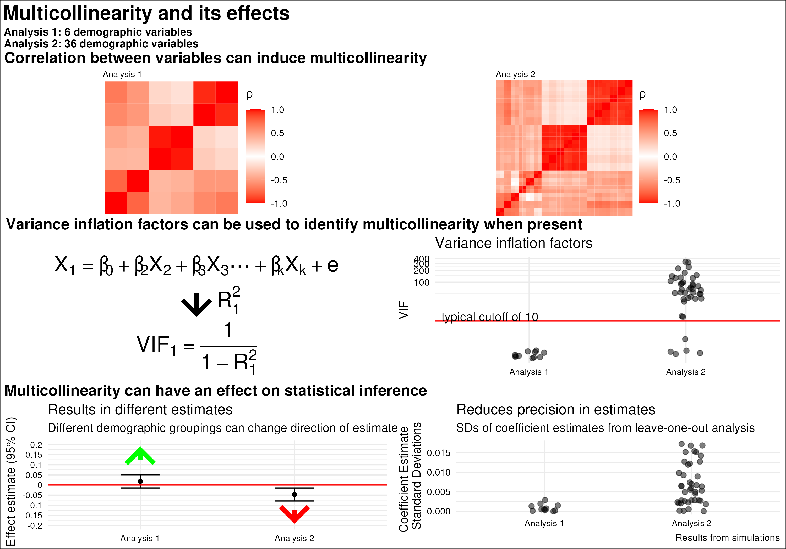</p>
</div>
<div id="section-1" class="section level4">
<h4></h4>
</div>
<div id="section-2" class="section level4 disclaimer_block">
<h4 class="disclaimer_block"></h4>
<p><strong>Disclaimer</strong>: The purpose of the <a
href="https://opencasestudies.github.io" target="_blank">Open Case
Studies</a> project is <strong>to demonstrate the use of various data
science methods, tools, and software in the context of messy, real-world
data</strong>. A given case study does not cover all aspects of the
research process, is not claiming to be the most appropriate way to
analyze a given data set, and should not be used in the context of
making policy decisions without external consultation from scientific
experts.</p>
</div>
<div id="section-3" class="section level4">
<h4></h4>
</div>
<div id="section-4" class="section level4 license_block">
<h4 class="license_block"></h4>
<p>This work is licensed under the Creative Commons
Attribution-NonCommercial 3.0 <a
href="https://creativecommons.org/licenses/by-nc/3.0/us/"
target="_blank">(CC BY-NC 3.0)</a> United States License.</p>
</div>
<div id="section-5" class="section level4">
<h4></h4>
</div>
<div id="section-6" class="section level4 reference_block">
<h4 class="reference_block"></h4>
<p>To cite this case study please use:</p>
<p>Wright, Carrie and Ontiveros, Michael and Meng, Qier and Jager, Leah
and Taub, Margaret and Hicks, Stephanie. (2020). <a
href="https://github.com//opencasestudies/ocs-bp-RTC-analysis">https://github.com//opencasestudies/ocs-bp-RTC-analysis</a>.
Influence of Multicollinearity on Measured Impact of Right-to-Carry Gun
Laws (Version v1.0.0).</p>
</div>
<div id="section-7" class="section level4">
<h4></h4>
<p>To access the GitHub repository for this case study see here: <a
href="https://github.com//opencasestudies/ocs-bp-RTC-analysis"
class="uri">https://github.com//opencasestudies/ocs-bp-RTC-analysis</a>.</p>
<p>You may also access and download the data using our
<code>OCSdata</code> package. To learn more about this package including
examples, see this <a
href="https://github.com/opencasestudies/OCSdata">link</a>. Here is how
you would install this package:</p>
<div class="sourceCode" id="cb1"><pre class="sourceCode r"><code class="sourceCode r"><span id="cb1-1"><a href="#cb1-1" tabindex="-1"></a><span class="fu">install.packages</span>(<span class="st">&quot;OCSdata&quot;</span>)</span></code></pre></div>
<p>This case study is part of a series of public health case studies for
the <a href="https://americanhealth.jhu.edu/open-case-studies">Bloomberg
American Health Initiative</a>.</p>
<hr />
<p>The total reading time for this case study is calculated via <a
href="https://github.com/unDocUMeantIt/koRpus">koRpus</a> and shown
below:</p>
<table>
<thead>
<tr class="header">
<th align="left">Reading Time</th>
<th align="left">Method</th>
</tr>
</thead>
<tbody>
<tr class="odd">
<td align="left">58 minutes</td>
<td align="left">koRpus</td>
</tr>
</tbody>
</table>
<hr />
<p><strong>Readability Score: </strong></p>
<p>A readability index estimates the reading difficulty level of a
particular text. Flesch-Kincaid, FORCAST, and SMOG are three common
readability indices that were calculated for this case study via <a
href="https://github.com/unDocUMeantIt/koRpus">koRpus</a>. These indices
provide an estimation of the minimum reading level required to
comprehend this case study by grade and age.</p>
<pre><code>Text language: en </code></pre>
<table>
<thead>
<tr class="header">
<th align="left">index</th>
<th align="right">grade</th>
<th align="right">age</th>
</tr>
</thead>
<tbody>
<tr class="odd">
<td align="left">Flesch-Kincaid</td>
<td align="right">11</td>
<td align="right">16</td>
</tr>
<tr class="even">
<td align="left">FORCAST</td>
<td align="right">10</td>
<td align="right">15</td>
</tr>
<tr class="odd">
<td align="left">SMOG</td>
<td align="right">13</td>
<td align="right">18</td>
</tr>
</tbody>
</table>
<hr />
<p>Please help us by filling out our survey.</p>
<div style="display: flex; justify-content: center;">
<iframe src="https://docs.google.com/forms/d/e/1FAIpQLSfpN4FN3KELqBNEgf2Atpi7Wy7Nqy2beSkFQINL7Y5sAMV5_w/viewform?embedded=true" width="1200" height="700" frameborder="0" marginheight="0" marginwidth="0">
Loading…
</iframe>
</div>
</div>
<div id="motivation" class="section level1">
<h1><strong>Motivation</strong></h1>
<hr />
<p>This case study will introduce the topic of <a
href="https://en.wikipedia.org/wiki/Multicollinearity"
target="_blank">multicollinearity</a>, which occurs in regression when
one or more independent variables can be predicted by other independent
variables.</p>
<p>We will do so by showcasing a real world example where
multicollinearity in part resulted in historically controversial and
conflicting findings about the influence of the adoption of
right-to-carry (RTC) concealed handgun laws on violent crime rates in
the United States.</p>
<p>We will focus on two articles:</p>
<ol style="list-style-type: decimal">
<li>The first analysis by <a
href="https://chicagounbound.uchicago.edu/cgi/viewcontent.cgi?article=1150&amp;context=law_and_economics"
target="_blank">Mustard and Lott</a> published in 1996 suggests that RTC
laws reduce violent crime. Lott authored a book extending these findings
in 1998 called <a
href="https://en.wikipedia.org/wiki/More_Guns,_Less_Crime"
target="_blank"><strong><em>More Guns, Less
Crime</em></strong></a>.</li>
</ol>
<p></p>
<div id="source" class="section level5">
<h5><a
href="https://chicagounbound.uchicago.edu/cgi/viewcontent.cgi?article=1150&amp;context=law_and_economics"
target="_blank">[source]</a></h5>
<ol start="2" style="list-style-type: decimal">
<li>The second analysis is a recent article by <a
href="https://www.nber.org/papers/w23510.pdf" target="_blank">Donohue,
et al.</a> published in 2017 that suggests that RTC laws increase
violent crime. Donohue has also published previous articles with titles
such as <a href="https://www.jstor.org/stable/1229603?seq=1"
target="_blank"><strong><em>Shooting down the “More Guns, Less Crime”
Hypothesis</em></strong></a>.</li>
</ol>
<p></p>
</div>
<div id="source-1" class="section level5">
<h5><a href="https://www.nber.org/papers/w23510.pdf"
target="_blank">[source]</a></h5>
<p>This has been a controversial topic as many other analyses also
produced conflicting results. See <a
href="https://en.wikipedia.org/wiki/More_Guns,_Less_Crime"
target="_blank">here</a> for a list of studies.</p>
<p>The <a href="https://www.nber.org/papers/w23510.pdf"
target="_blank">Donohue, et al.</a> article discusses how there are many
other important methodological aspects besides <a
href="https://en.wikipedia.org/wiki/Multicollinearity"
target="_blank">multicollinearity</a> (which occurs when predictor or
input variables are highly related in a regression analysis) that could
account for the historically conflicting results in these previous
manuscripts.</p>
<p>In fact, nearly every aspect of the data analysis process was
different between the <a href="https://www.nber.org/papers/w23510.pdf"
target="_blank">Donohue, et al.</a> and <a
href="https://chicagounbound.uchicago.edu/cgi/viewcontent.cgi?article=1150&amp;context=law_and_economics"
target="_blank">Mustard and Lott</a> analyses.</p>
<p>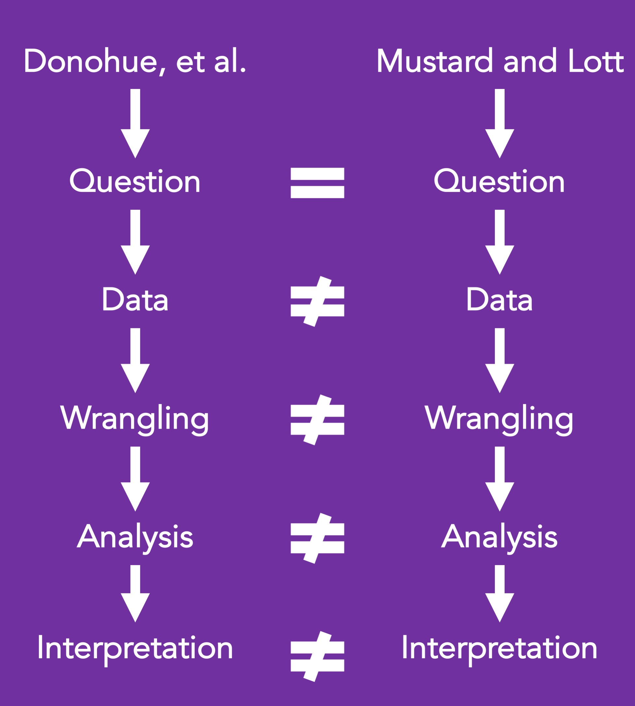</p>
<p>However, we will focus particularly on multicollinearity and how it
can influence the results we get from linear regression. Specifically,
this analysis will demonstrate how methodological details can be
critically influential for our overall conclusions and can result in
important policy related consequences. The <a
href="(https://www.nber.org/papers/w23510.pdf)%7Btarget=%22_blank%22%7D">Donohue,
et al. article</a> will provide the motivation and illustration.</p>
</div>
<div id="section-8" class="section level4 reference_block">
<h4 class="reference_block"></h4>
<p>John J. Donohue et al., Right‐to‐Carry Laws and Violent Crime: A
Comprehensive Assessment Using Panel Data and a State‐Level Synthetic
Control Analysis. <em>Journal of Empirical Legal Studies</em>, 16,2
(2019).</p>
<p>David B. Mustard &amp; John Lott. Crime, Deterrence, and
Right-to-Carry Concealed Handguns. <em>Coase-Sandor Institute for Law
&amp; Economics</em> Working Paper No. 41, (1996).</p>
</div>
<div id="section-9" class="section level4">
<h4></h4>
<p>Before we leave this section, we provide a high-level overview of
what variables were (or were not) included in the <a
href="https://www.nber.org/papers/w23510.pdf" target="_blank">Donohue,
Aneja and Weber</a> (DAW) paper and the <a
href="https://chicagounbound.uchicago.edu/cgi/viewcontent.cgi?article=1150&amp;context=law_and_economics"
target="_blank">Mustard and Lott</a> (ML) paper:</p>
<p>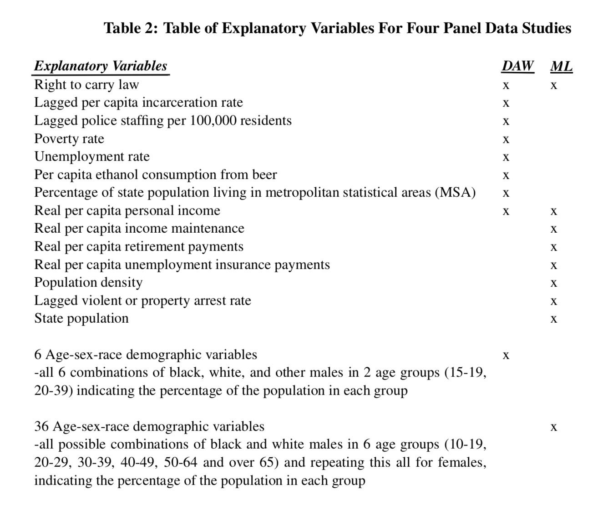</p>
<div id="source-2" class="section level5">
<h5><a href="https://www.nber.org/papers/w23510.pdf"
target="_blank">[source]</a></h5>
<div id="ml-is-abbreviated-as-lm-in-the-source-article"
class="section level6">
<h6>*ML is abbreviated as LM in the source article</h6>
<p><strong>Note</strong>: We are not attempting to re-create the
analyses from the original authors. Instead, we aim to use a subset of
the listed explanatory variables in this case study to demonstrate
multicollinearity. These variables will be consistent for both analyses
that we will perform, with the exception that one analysis will have 6
demographic variables as in the analysis in the <a
href="https://www.nber.org/papers/w23510.pdf" target="_blank">Donohue,
et al.</a> article and the other will have 36 demographic variables,
grouping individuals into more specific categories, as in the analysis
in the <a
href="https://chicagounbound.uchicago.edu/cgi/viewcontent.cgi?article=1150&amp;context=law_and_economics"
target="_blank">Mustard and Lott</a> article.</p>
</div>
</div>
</div>
</div>
<div id="main-question" class="section level1">
<h1><strong>Main Question</strong></h1>
<hr />
<div id="section-10" class="section level4 main_question_block">
<h4 class="main_question_block"></h4>
<p><b><u> Our main question: </u></b></p>
<p>What is the effect of multicollinearity on coefficient estimates from
linear regression models when analyzing right to carry laws and violence
rates?</p>
</div>
<div id="section-11" class="section level4">
<h4></h4>
<p>Specifically, we will consider the two ways to define the demographic
variables (as described above) and investigate how the inclusion of
different numbers of age groups influences the results of an analysis of
right to carry laws and violence rates.</p>
</div>
</div>
<div id="learning-objectives" class="section level1">
<h1><strong>Learning Objectives</strong></h1>
<hr />
<p>The skills, methods, and concepts that students will be familiar with
by the end of this case study are:</p>
<p><u><strong>Data Science Learning Objectives:</strong></u></p>
<ol style="list-style-type: decimal">
<li>Create correlation scatterplots and heatmaps (<code>GGally</code>,
<code>ggcorrplot</code>)<br />
</li>
<li>Create interactive tables (<code>DT</code>)<br />
</li>
<li>Sample subsets of data (<code>rsample</code>)<br />
</li>
<li>Combine multiple plots (<code>cowplot</code>)<br />
</li>
<li>Create data visualizations with equations and
text(<code>ggplot2</code> and <code>latex2exp</code>)</li>
</ol>
<p><u><strong>Statistical Learning Objectives:</strong></u></p>
<ol style="list-style-type: decimal">
<li>Understand what multicollinearity is and how it can influence linear
regression coefficients</li>
<li>Recognize signs for the presence of multicollinearity and determine
its severity</li>
<li>Illustrate the difference between multicollinearity and
correlation</li>
<li>Implement panel regression analysis in R (<code>plm</code>)</li>
<li>Relate variance inflation factors (VIFs) to multicollinearity and
calculate VIFs in R (<code>car</code>)</li>
</ol>
<p>To see another case study about how the original raw data was
imported and wrangled please see <a
href="https://www.opencasestudies.org/ocs-bp-RTC-wrangling/"
target="_blank">here</a>.</p>
<p>We will especially focus on using packages and functions from the <a
href="https://www.tidyverse.org/"
target="_blank"><code>tidyverse</code></a>, such as <code>dplyr</code>
and <code>ggplot2</code>. The tidyverse is a library of packages created
by RStudio. While some students may be familiar with previous R
programming packages, these packages make data science in R especially
legible and intuitive.</p>
<p></p>
</div>
<div id="context" class="section level1">
<h1><strong>Context</strong></h1>
<hr />
<p>So what exactly is a <strong>right-to-carry law</strong>?</p>
<p>It is a law that specifies <em>if</em> and <em>how</em> citizens are
allowed to have a firearm on their person or nearby (for example, in a
citizen’s car) in public. In this discussion, we will use the <a
href="https://www.nraila.org/gun-laws/" target="_blank">National Rifle
Association (NRA)</a> terminology. Please keep in mind that there are
other terms that people use.</p>
<p>The <a
href="https://en.wikipedia.org/wiki/Second_Amendment_to_the_United_States_Constitution"
target="_blank">Second Amendment</a> to the United States Constitution
guarantees the right to “keep and bear arms”. The amendment was ratified
in 1791 as part of the <a
href="https://en.wikipedia.org/wiki/United_States_Bill_of_Rights"
target="_blank">Bill of Rights</a>.</p>
<p></p>
<div id="source-3" class="section level5">
<h5><a href="https://www.loc.gov/item/rbpe.24404400/"
target="_blank">[source]</a></h5>
<p>However, there are no federal laws about carrying firearms in
public.</p>
<p>These laws are created and enforced at the US state level. States
vary greatly in their laws about the right to carry firearms. Some
require extensive effort to obtain a permit to legally carry a firearm,
while other states require very minimal effort to do so. An increasing
number of states do not require permits at all.</p>
<details>
<summary>
Click here for more information on history of right-to-carry policies in
the US.
</summary>
<p>According to the <a
href="https://en.wikipedia.org/wiki/History_of_concealed_carry_in_the_United_States"
target="_blank">Wikipedia entry</a> about the history of right-to-carry
policies in the United States:</p>
<blockquote>
<p>Public perception on concealed carry vs open carry has largely
flipped. In the early days of the United States, open carrying of
firearms, long guns and revolvers was a common and well-accepted
practice. Seeing guns carried openly was not considered to be any cause
for alarm. Therefore, anyone who would carry a firearm but attempt to
conceal it was considered to have something to hide, and presumed to be
a criminal. For this reason, concealed carry was denounced as a
detestable practice in the early days of the United States.</p>
</blockquote>
<blockquote>
<p>Concealed weapons bans were passed in Kentucky and Louisiana in 1813.
(In those days open carry of weapons for self-defense was considered
acceptable; concealed carry was denounced as the practice of criminals.)
By 1859, Indiana, Tennessee, Virginia, Alabama, and Ohio had followed
suit. By the end of the nineteenth century, similar laws were passed in
places such as Texas, Florida, and Oklahoma, which protected some gun
rights in their state constitutions. Before the mid 1900s, most U.S.
states had passed concealed carry laws rather than banning weapons
completely. Until the late 1990s, many Southern states were either
“No-Issue” or “Restrictive May-Issue”. Since then, these states have
largely enacted “Shall-Issue” licensing laws, with numerous states
legalizing “Unrestricted concealed carry”.</p>
</blockquote>
</details>
<p>There are five broad categories of right-to-carry laws according to
the NRA:</p>
<p></p>
</div>
<div id="source-4" class="section level5">
<h5><a href="https://www.nraila.org/gun-laws/"
target="_blank">[source]</a></h5>
<p>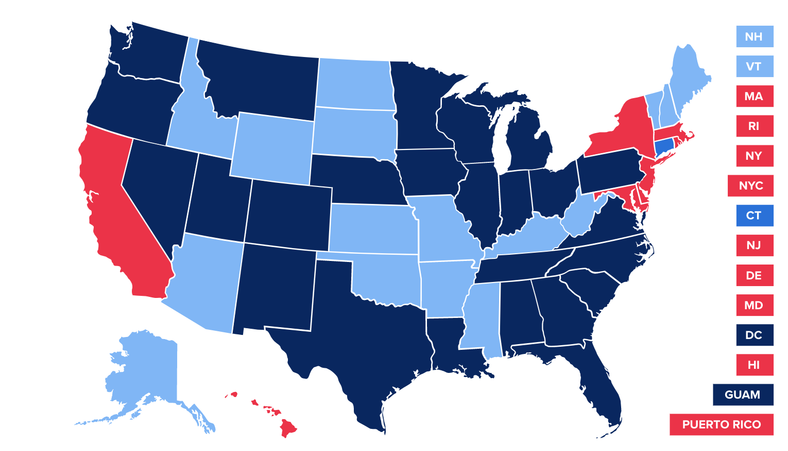</p>
</div>
<div id="source-5" class="section level5">
<h5><a href="https://www.nraila.org/gun-laws/"
target="_blank">[source]</a></h5>
<p>You can see that no state in the US currently (this map is from 2020)
has a “Rights Infringed/Non-Issue” law (the gray category) – meaning
that all 50 states in the US allow the right to carry firearms at least
in some way. However the level of restrictions is dramatically different
from one state to another. For comparison purposes, many authors use the
terms “shall issue”, “shall issue with discretion”, “no permit
required”, “may issue”, and “non-issue” to describe these categories
instead of the NRA terminology.</p>
<details>
<summary>
Click here for more information about how restrictions vary from one
state to another.
</summary>
<p>There is variation from state to state even within the same general
category:</p>
<p>For example here is an abridged version of the <a
href="https://www.nraila.org/gun-laws/state-gun-laws/idaho/">current
carry laws in Idaho</a> which is considered an “Unrestricted - no permit
required” state:</p>
<blockquote>
<p>State law … allows any resident of Idaho or a current member of the
armed forces of the United States to carry a concealed handgun without a
license to carry, provided the person is over 18 years old and not
disqualified from being issued a license to carry concealed weapons
under state law. An amendment to state law that takes effect on July 1,
2020 changes the reference in the above law from “a resident of Idaho”
to “any citizen of the United States.”</p>
</blockquote>
<p>And here are is an abridged version of the <a
href="https://www.nraila.org/gun-laws/state-gun-laws/arizona/">current
carry laws in Arizona</a> which is also considered an “Unrestricted - no
permit required” state:</p>
<blockquote>
<p>Any person 21 years of age or older, who is not prohibited possessor,
may carry a weapon openly or concealed without the need for a
license…</p>
</blockquote>
<p>Notice that citizens in Idaho only need to be 18 to carry a firearm,
whereas they must be 21 in Arizona.</p>
</details>
</div>
</div>
<div id="limitations" class="section level1">
<h1><strong>Limitations</strong></h1>
<hr />
<p>There are some important considerations regarding this data analysis
to keep in mind:</p>
<ol style="list-style-type: decimal">
<li><p>We do not use all of the data used by either the <a
href="https://chicagounbound.uchicago.edu/cgi/viewcontent.cgi?article=1150&amp;context=law_and_economics"
target="_blank">Mustard and Lott</a> or <a
href="https://www.nber.org/papers/w23510.pdf" target="_blank">Donohue,
et al.</a> analyses, nor do we perform the same analysis as in each
article. We instead perform a much simpler analysis with fewer variables
for the purposes of illustration of the concept of multicollinearity and
its influence on regression coefficients, not to reproduce either
analysis.</p></li>
<li><p>Our analysis accounts for either the adoption or lack of adoption
of a permissive right-to-carry law in each state, but does not account
for differences in the level of permissiveness of the laws.</p></li>
</ol>
<p>Recall that these are the categories of right to carry laws:
</p>
<p>States with laws of the category rights restricted - very limited
issue (red) are considered as not having a permissive right-to-carry
law. Recall that no states currently have a rights infringed/non-issue
law.</p>
<p>States of all other categories (shall issue, discretionary/reasonable
issue, and no permit required, all shades of blue) are considered the
same in our analysis, as having a permissive right-to-carry law.</p>
<ol start="3" style="list-style-type: decimal">
<li><p>Because our analysis is an oversimplification, the results
presented here should not be used for determining policy changes;
instead we suggest that users interested in such a determination consult
with a specialist.</p></li>
<li><p>The inclusion of race as an explanatory variable in an
epidemiological study can be useful in certain circumstances. However,
there are limitations and issues around defining, determining, and
reporting race, as well as in interpreting differences in public health
outcomes by race. For more information on this topic, we have included a
<a
href="https://academic.oup.com/epirev/article/22/2/187/456942">link</a>
to a paper on the use of race as a measure in epidemiology. We include
race in this analysis to demonstrate and consider the limitations of
what the previous papers have done to analyze the influence of RTC laws
on violent crime, with a focus on multicollinearity. Thus in our
analysis we have also defined race as was previously done in these
papers. Furthermore, we want to point out that reporting analyses about
crime with race as a variable can have very unexpected consequences and
thus care should be taken. See <a
href="https://journals.sagepub.com/doi/full/10.1177/0963721418763931">here</a>
for suggestions. Any association between demographic variables
(indicating the proportion of the population from specific race and age
groups) and violent crime does not necessarily indicate that the two are
linked causally, as aside from the issues presented in the <a
href="(https://academic.oup.com/epirev/article/22/2/187/456942)">article</a>,
this may instead indicate higher rates of police engagement with certain
racial groups due to <a
href="https://www.aclu.org/other/racial-profiling-definition">racial
profiling</a>.</p></li>
</ol>
<p>The ACLU defines racial profiling as:</p>
<blockquote>
<p>“Racial Profiling” refers to the discriminatory practice by law
enforcement officials of targeting individuals for suspicion of crime
based on the individual’s race, ethnicity, religion or national
origin.</p>
</blockquote>
<hr />
<p>We will begin by loading the packages that we will need:</p>
<div class="sourceCode" id="cb3"><pre class="sourceCode r"><code class="sourceCode r"><span id="cb3-1"><a href="#cb3-1" tabindex="-1"></a><span class="fu">library</span>(here)</span>
<span id="cb3-2"><a href="#cb3-2" tabindex="-1"></a><span class="fu">library</span>(dplyr)</span>
<span id="cb3-3"><a href="#cb3-3" tabindex="-1"></a><span class="fu">library</span>(purrr)</span>
<span id="cb3-4"><a href="#cb3-4" tabindex="-1"></a><span class="fu">library</span>(tibble)</span>
<span id="cb3-5"><a href="#cb3-5" tabindex="-1"></a><span class="fu">library</span>(ggplot2)</span>
<span id="cb3-6"><a href="#cb3-6" tabindex="-1"></a><span class="fu">library</span>(naniar)</span>
<span id="cb3-7"><a href="#cb3-7" tabindex="-1"></a><span class="fu">library</span>(ggrepel)</span>
<span id="cb3-8"><a href="#cb3-8" tabindex="-1"></a><span class="fu">library</span>(plm)</span>
<span id="cb3-9"><a href="#cb3-9" tabindex="-1"></a><span class="fu">library</span>(broom)</span>
<span id="cb3-10"><a href="#cb3-10" tabindex="-1"></a><span class="fu">library</span>(GGally)</span>
<span id="cb3-11"><a href="#cb3-11" tabindex="-1"></a><span class="fu">library</span>(ggcorrplot)</span>
<span id="cb3-12"><a href="#cb3-12" tabindex="-1"></a><span class="fu">library</span>(rsample)</span>
<span id="cb3-13"><a href="#cb3-13" tabindex="-1"></a><span class="fu">library</span>(DT)</span>
<span id="cb3-14"><a href="#cb3-14" tabindex="-1"></a><span class="fu">library</span>(car)</span>
<span id="cb3-15"><a href="#cb3-15" tabindex="-1"></a><span class="fu">library</span>(stringr)</span>
<span id="cb3-16"><a href="#cb3-16" tabindex="-1"></a><span class="fu">library</span>(cowplot)</span>
<span id="cb3-17"><a href="#cb3-17" tabindex="-1"></a><span class="fu">library</span>(latex2exp)</span>
<span id="cb3-18"><a href="#cb3-18" tabindex="-1"></a><span class="fu">library</span>(OCSdata)</span></code></pre></div>
<p><u><strong>Packages used in this case study:</strong> </u></p>
<table>
<colgroup>
<col width="43%" />
<col width="56%" />
</colgroup>
<thead>
<tr class="header">
<th>Package</th>
<th>Use in this case study</th>
</tr>
</thead>
<tbody>
<tr class="odd">
<td><a href="https://github.com/jennybc/here_here"
target="_blank"><code>here</code></a></td>
<td>to easily load and save data</td>
</tr>
<tr class="even">
<td><a href="https://dplyr.tidyverse.org/"
target="_blank"><code>dplyr</code></a></td>
<td>to arrange/filter/select/compare specific subsets of the data</td>
</tr>
<tr class="odd">
<td><a href="https://purrr.tidyverse.org/"
target="_blank"><code>purrr</code></a></td>
<td>to import the data in all the different excel and csv files
efficiently</td>
</tr>
<tr class="even">
<td><a href="https://tibble.tidyverse.org/"
target="_blank"><code>tibble</code></a></td>
<td>to create data objects that we can manipulate with
<code>dplyr</code>/<code>stringr</code>/<code>tidyr</code>/<code>purrr</code></td>
</tr>
<tr class="odd">
<td><a href="https://ggplot2.tidyverse.org/"
target="_blank"><code>ggplot2</code></a></td>
<td>to create plots</td>
</tr>
<tr class="even">
<td><a
href="https://cran.r-project.org/web/packages/naniar/vignettes/getting-started-w-naniar.html"
target="_blank"><code>naniar</code></a></td>
<td>to quickly visualize missing data</td>
</tr>
<tr class="odd">
<td><a
href="https://cran.r-project.org/web/packages/ggrepel/vignettes/ggrepel.html"
target="_blank"><code>ggrepel</code></a></td>
<td>to allow labels in figures not to overlap</td>
</tr>
<tr class="even">
<td><a href="https://cran.r-project.org/package=plm"
target="_blank"><code>plm</code></a></td>
<td>to work with panel data fitting fixed effects and linear regression
models</td>
</tr>
<tr class="odd">
<td><a
href="https://cran.r-project.org/web/packages/broom/vignettes/broom.html"
target="_blank"><code>broom</code></a></td>
<td>to create nicely formatted model output</td>
</tr>
<tr class="even">
<td><a href="https://github.com/ggobi/ggally"
target="_blank"><code>GGally</code></a></td>
<td>to extend ggplot2 functionality to easily create more complex
plots</td>
</tr>
<tr class="odd">
<td><a
href="https://www.rdocumentation.org/packages/ggcorrplot/versions/0.1.3"
target="_blank"><code>ggcorrplot</code></a></td>
<td>to easily visualize a correlation matrix</td>
</tr>
<tr class="even">
<td><a href="https://rsample.tidymodels.org"
target="_blank"><code>rsample</code></a></td>
<td>to split our sample for the simulation analysis</td>
</tr>
<tr class="odd">
<td><a href="https://rstudio.github.io/DT/"
target="_blank"><code>DT</code></a></td>
<td>to create interactive and searchable tables</td>
</tr>
<tr class="even">
<td><a
href="https://cran.r-project.org/web/packages/car/vignettes/embedding.pdf"
target="_blank"><code>car</code></a></td>
<td>to calculate VIF values on linear model output</td>
</tr>
<tr class="odd">
<td><a href="https://stringr.tidyverse.org/articles/stringr.html"
target="_blank"><code>stringr</code></a></td>
<td>to manipulate the character strings within the data</td>
</tr>
<tr class="even">
<td><a
href="https://cran.r-project.org/web/packages/cowplot/vignettes/introduction.html"
target="_blank"><code>cowplot</code></a></td>
<td>to allow plots to be combined</td>
</tr>
<tr class="odd">
<td><a
href="https://cran.r-project.org/web/packages/latex2exp/vignettes/using-latex2exp.html"
target="_blank"><code>latex2exp</code></a></td>
<td>to convert latex math formulas to R’s plotmath expressions</td>
</tr>
<tr class="even">
<td><a href="https://github.com/opencasestudies/OCSdata"
target="_blank"><code>OCSdata</code></a></td>
<td>to access and download OCS data files</td>
</tr>
</tbody>
</table>
<p>The first time we use a function, we will use the <code>::</code> to
indicate which package we are using. Unless we have overlapping function
names, this is not necessary, but we will include it here to be
informative about where the functions we will use come from.</p>
</div>
<div id="what-are-the-data" class="section level1">
<h1><strong>What are the data?</strong></h1>
<hr />
<p>Below is a table from the <a
href="https://www.nber.org/papers/w23510.pdf" target="_blank">Donohue,
et al.</a> paper that shows the data used in both analyses, where DAW
stands for <a href="https://www.nber.org/papers/w23510.pdf"
target="_blank">Donohue, et al.</a> and LM stands for <a
href="https://chicagounbound.uchicago.edu/cgi/viewcontent.cgi?article=1150&amp;context=law_and_economics"
target="_blank">Mustard and Lott</a>.</p>
<p>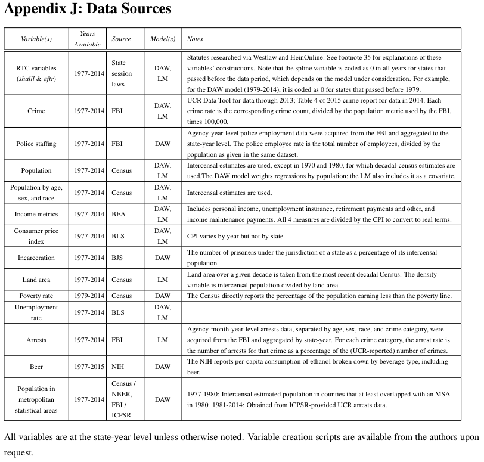</p>
<p>We will be using a subset of these variables, which are highlighted
in green:</p>
<p>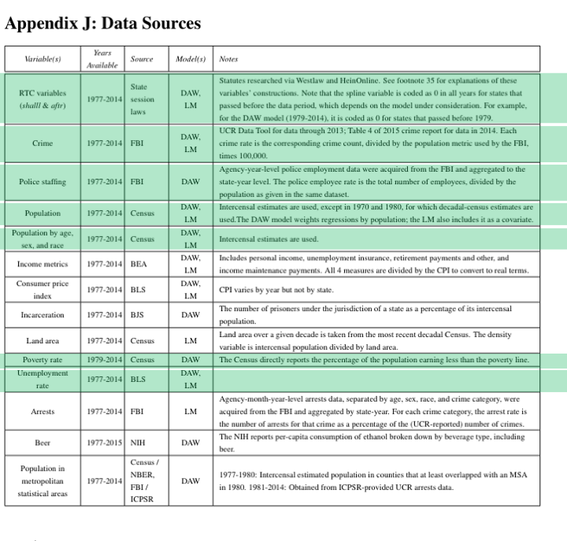</p>
</div>
<div id="data-import-and-wrangling" class="section level1">
<h1><strong>Data Import and Wrangling</strong></h1>
<hr />
<p>See <a href="https://www.opencasestudies.org/ocs-bp-RTC-wrangling/"
target="_blank">this case study</a> for details about data import and
wrangling. We include data sources here for completeness, but will start
from processed data in this case study.</p>
<div id="demographic-and-population-data" class="section level2">
<h2><strong>Demographic and population data</strong></h2>
<hr />
<p>To obtain information about age, sex, race, and overall population
size we will use US Census Bureau data, as was done in both of the
articles. The census data is available for different time spans. Here
are the links for the years used in our analysis. We will use data from
1977 to 2010.</p>
<table>
<colgroup>
<col width="43%" />
<col width="56%" />
</colgroup>
<thead>
<tr class="header">
<th>Data</th>
<th>Link</th>
</tr>
</thead>
<tbody>
<tr class="odd">
<td><strong>years 1977 to 1979</strong></td>
<td><a
href="https://www2.census.gov/programs-surveys/popest/tables/1900-1980/state/asrh/">link</a></td>
</tr>
<tr class="even">
<td><strong>years 1980 to 1989</strong></td>
<td><a
href="https://www2.census.gov/programs-surveys/popest/tables/1980-1990/counties/asrh/">link</a>
* county data was used for this decade which also has state
information</td>
</tr>
<tr class="odd">
<td><strong>years 1990 to 1999</strong></td>
<td><a
href="https://www2.census.gov/programs-surveys/popest/tables/1990-2000/state/asrh/">link</a></td>
</tr>
<tr class="even">
<td><strong>years 2000 to 2010</strong></td>
<td><a
href="https://www.census.gov/data/datasets/time-series/demo/popest/intercensal-2000-2010-state.html">link</a>
<br> <a
href="https://www2.census.gov/programs-surveys/popest/technical-documentation/file-layouts/2000-2010/intercensal/state/st-est00int-alldata.pdf"
target="_blank">technical documentation</a></td>
</tr>
</tbody>
</table>
</div>
<div id="state-fips-codes" class="section level2">
<h2><strong>State FIPS codes</strong></h2>
<hr />
<p>The data was downloaded from the <a
href="https://www.census.gov/geographies/reference-files/2014/demo/popest/2014-geocodes-state.html"
target="_blank">US Census Bureau</a>.</p>
</div>
<div id="police-staffing-data" class="section level2">
<h2><strong>Police staffing data</strong></h2>
<hr />
<p>The following data was downloaded from the <a
href="https://cde.ucr.cjis.gov/LATEST/" target="_blank">Federal Bureau
of Investigation</a>.</p>
</div>
<div id="unemployment-data" class="section level2">
<h2><strong>Unemployment data</strong></h2>
<hr />
<p>The following data was downloaded from the <a
href="https://data.bls.gov/cgi-bin/dsrv?la" target="_blank">U.S. Bureau
of Labor Statistics</a>.</p>
</div>
<div id="poverty-data" class="section level2">
<h2><strong>Poverty data</strong></h2>
<hr />
<p>Extracted from Table 21 from <a
href="https://www.census.gov/data/tables/time-series/demo/income-poverty/historical-poverty-people.html"
target="_blank">US Census Bureau Poverty Data</a>.</p>
</div>
<div id="violent-crime" class="section level2">
<h2><strong>Violent crime</strong></h2>
<hr />
<p>Violent crime data was obtained from <a
href="https://cde.ucr.cjis.gov/LATEST/" target="_blank">here</a>.</p>
</div>
<div id="right-to-carry-data" class="section level2">
<h2><strong>Right-to-carry data</strong></h2>
<hr />
<p>This data is extracted from table in <a
href="https://www.nber.org/papers/w23510.pdf" target="_blank">Donohue
paper</a>.</p>
<hr />
<p>Here is the table from the <a
href="https://www.nber.org/papers/w23510.pdf" target="_blank">Donohue
paper</a> that compares the data used in the analyses:</p>
<p></p>
<div id="source-6" class="section level5">
<h5><a href="https://www.nber.org/papers/w23510.pdf"
target="_blank">[source]</a></h5>
<div id="ml-is-abbreviated-as-lm-in-the-source-article-1"
class="section level6">
<h6>*ML is abbreviated as LM in the source article</h6>
<p>We can see that only the percentage of males that were from age 15-39
of the race groups (black, white, and other) were used in the Donohue
analysis, whereas the Mustard and Lott paper, individuals from ages 10
to over 65 were used.</p>
<p>The final products from our data wrangling which is described in <a
href="https://www.opencasestudies.org/ocs-bp-RTC-wrangling/"
target="_blank">another case study</a> are two tibbles of data each with
variables selected to be similar to those used in either the Donohue or
Mustard and Lott analysis. The overarching idea of this case study is to
compare the model results from these two datasets, which differ only in
the demographic variables. This is an oversimplification of the actual
differences between the datasets and approaches taken by Donohue and
Lott/Mustard, but will be useful for illustrating the impact of
multicollinearity on our modeling results, which is the main objective
of this case study.</p>
<p>If you have trouble accessing the GitHub Repository, the
“Wrangled_data.rda” data can be downloaded from <a
href="https://github.com/opencasestudies/ocs-bp-RTC-analysis/blob/master/data/wrangled/Wrangled_data.rda">here</a>.</p>
<p>We will load this data now.</p>
<p>In our case, we downloaded this data and put it within a “wrangled”
subdirectory of the “data” directory for our project. If you use an
RStudio project, then you can use the <code>here()</code> function of
the <code>here</code> package to make the path for loading this data
simpler. The <code>here</code> package automatically starts looking for
files based on where you have a <code>.Rproj</code> file which is
created when you start a new RStudio project. We can specify that we
want to look for the file within the “wrangled” subdirectory of the
“data” directory within a directory where our <code>.Rproj</code> file
is located by separating the name of the “data” directory and “wrangled”
and the file name using commas.</p>
<hr />
<details>
<summary>
Click here to see more about creating new projects in RStudio.
</summary>
<p>You can create a project by going to the File menu of RStudio like
so:</p>
<p></p>
<p>You can also do so by clicking the project button:</p>
<p></p>
<p>See <a
href="https://support.rstudio.com/hc/en-us/articles/200526207-Using-Projects">here</a>
to learn more about using RStudio projects.</p>
</details>
<hr />
<div class="sourceCode" id="cb4"><pre class="sourceCode r"><code class="sourceCode r"><span id="cb4-1"><a href="#cb4-1" tabindex="-1"></a><span class="fu">load</span>(<span class="at">file =</span> here<span class="sc">::</span><span class="fu">here</span>(<span class="st">&quot;data&quot;</span>, <span class="st">&quot;wrangled&quot;</span>, <span class="st">&quot;Wrangled_data.rda&quot;</span>))</span></code></pre></div>
<p>You may also download the data files with the <code>OCSdata</code>
package. If you prefer this method, use the following code chunk to
download and load the data:</p>
<div class="sourceCode" id="cb5"><pre class="sourceCode r"><code class="sourceCode r"><span id="cb5-1"><a href="#cb5-1" tabindex="-1"></a><span class="co"># install.packages(&quot;OCSdata&quot;)</span></span>
<span id="cb5-2"><a href="#cb5-2" tabindex="-1"></a><span class="fu">library</span>(OCSdata)</span>
<span id="cb5-3"><a href="#cb5-3" tabindex="-1"></a><span class="fu">wrangled_rda</span>(<span class="st">&quot;ocs-bp-RTC-analysis&quot;</span>, <span class="at">outpath =</span> <span class="fu">getwd</span>())</span>
<span id="cb5-4"><a href="#cb5-4" tabindex="-1"></a><span class="co"># This will save the wrangled data files in a &quot;OCSdata/data/wrangled/&quot; </span></span>
<span id="cb5-5"><a href="#cb5-5" tabindex="-1"></a><span class="co"># sub-folder in your current working directory</span></span>
<span id="cb5-6"><a href="#cb5-6" tabindex="-1"></a><span class="fu">load</span>(<span class="at">file =</span> here<span class="sc">::</span><span class="fu">here</span>(<span class="st">&quot;OCSdata&quot;</span>, <span class="st">&quot;data&quot;</span>, <span class="st">&quot;wrangled&quot;</span>, <span class="st">&quot;Wrangled_data.rda&quot;</span>))</span>
<span id="cb5-7"><a href="#cb5-7" tabindex="-1"></a><span class="co"># this will load the data into R</span></span></code></pre></div>
<p>We will check the dimensions of each tibble using the base
<code>dim()</code> function:</p>
<div class="sourceCode" id="cb6"><pre class="sourceCode r"><code class="sourceCode r"><span id="cb6-1"><a href="#cb6-1" tabindex="-1"></a><span class="fu">dim</span>(LOTT_DF)</span></code></pre></div>
<pre><code>[1] 1395   50</code></pre>
<div class="sourceCode" id="cb8"><pre class="sourceCode r"><code class="sourceCode r"><span id="cb8-1"><a href="#cb8-1" tabindex="-1"></a><span class="fu">dim</span>(DONOHUE_DF)</span></code></pre></div>
<pre><code>[1] 1395   20</code></pre>
<p>As expected the <code>Lott_DF</code> is 30 columns larger, due to the
30 additional demographic variables. We can check those now as well.</p>
<div class="sourceCode" id="cb10"><pre class="sourceCode r"><code class="sourceCode r"><span id="cb10-1"><a href="#cb10-1" tabindex="-1"></a>LOTT_DF <span class="sc">%&gt;%</span></span>
<span id="cb10-2"><a href="#cb10-2" tabindex="-1"></a>  <span class="fu">colnames</span>()</span></code></pre></div>
<pre><code> [1] &quot;YEAR&quot;                           &quot;STATE&quot;                         
 [3] &quot;Black_Female_10_to_19_years&quot;    &quot;Black_Female_20_to_29_years&quot;   
 [5] &quot;Black_Female_30_to_39_years&quot;    &quot;Black_Female_40_to_49_years&quot;   
 [7] &quot;Black_Female_50_to_64_years&quot;    &quot;Black_Female_65_years_and_over&quot;
 [9] &quot;Black_Male_10_to_19_years&quot;      &quot;Black_Male_20_to_29_years&quot;     
[11] &quot;Black_Male_30_to_39_years&quot;      &quot;Black_Male_40_to_49_years&quot;     
[13] &quot;Black_Male_50_to_64_years&quot;      &quot;Black_Male_65_years_and_over&quot;  
[15] &quot;Other_Female_10_to_19_years&quot;    &quot;Other_Female_20_to_29_years&quot;   
[17] &quot;Other_Female_30_to_39_years&quot;    &quot;Other_Female_40_to_49_years&quot;   
[19] &quot;Other_Female_50_to_64_years&quot;    &quot;Other_Female_65_years_and_over&quot;
[21] &quot;Other_Male_10_to_19_years&quot;      &quot;Other_Male_20_to_29_years&quot;     
[23] &quot;Other_Male_30_to_39_years&quot;      &quot;Other_Male_40_to_49_years&quot;     
[25] &quot;Other_Male_50_to_64_years&quot;      &quot;Other_Male_65_years_and_over&quot;  
[27] &quot;White_Female_10_to_19_years&quot;    &quot;White_Female_20_to_29_years&quot;   
[29] &quot;White_Female_30_to_39_years&quot;    &quot;White_Female_40_to_49_years&quot;   
[31] &quot;White_Female_50_to_64_years&quot;    &quot;White_Female_65_years_and_over&quot;
[33] &quot;White_Male_10_to_19_years&quot;      &quot;White_Male_20_to_29_years&quot;     
[35] &quot;White_Male_30_to_39_years&quot;      &quot;White_Male_40_to_49_years&quot;     
[37] &quot;White_Male_50_to_64_years&quot;      &quot;White_Male_65_years_and_over&quot;  
[39] &quot;Unemployment_rate&quot;              &quot;Poverty_rate&quot;                  
[41] &quot;Viol_crime_count&quot;               &quot;Population&quot;                    
[43] &quot;police_per_100k_lag&quot;            &quot;RTC_LAW_YEAR&quot;                  
[45] &quot;RTC_LAW&quot;                        &quot;TIME_0&quot;                        
[47] &quot;TIME_INF&quot;                       &quot;Viol_crime_rate_1k&quot;            
[49] &quot;Viol_crime_rate_1k_log&quot;         &quot;Population_log&quot;                </code></pre>
<div class="sourceCode" id="cb12"><pre class="sourceCode r"><code class="sourceCode r"><span id="cb12-1"><a href="#cb12-1" tabindex="-1"></a>DONOHUE_DF <span class="sc">%&gt;%</span></span>
<span id="cb12-2"><a href="#cb12-2" tabindex="-1"></a>  <span class="fu">colnames</span>()</span></code></pre></div>
<pre><code> [1] &quot;YEAR&quot;                      &quot;STATE&quot;                    
 [3] &quot;Black_Male_15_to_19_years&quot; &quot;Black_Male_20_to_39_years&quot;
 [5] &quot;Other_Male_15_to_19_years&quot; &quot;Other_Male_20_to_39_years&quot;
 [7] &quot;White_Male_15_to_19_years&quot; &quot;White_Male_20_to_39_years&quot;
 [9] &quot;Unemployment_rate&quot;         &quot;Poverty_rate&quot;             
[11] &quot;Viol_crime_count&quot;          &quot;Population&quot;               
[13] &quot;police_per_100k_lag&quot;       &quot;RTC_LAW_YEAR&quot;             
[15] &quot;RTC_LAW&quot;                   &quot;TIME_0&quot;                   
[17] &quot;TIME_INF&quot;                  &quot;Viol_crime_rate_1k&quot;       
[19] &quot;Viol_crime_rate_1k_log&quot;    &quot;Population_log&quot;           </code></pre>
<p>Lastly, we will check that the <code>YEAR</code> values are the same,
i.e., that the two tibbles contain data from the same set of years. We
can use the <code>setequal()</code> function of the <code>dplyr</code>
package to see if the values are the same.</p>
<div class="sourceCode" id="cb14"><pre class="sourceCode r"><code class="sourceCode r"><span id="cb14-1"><a href="#cb14-1" tabindex="-1"></a><span class="fu">setequal</span>(</span>
<span id="cb14-2"><a href="#cb14-2" tabindex="-1"></a>  DONOHUE_DF <span class="sc">%&gt;%</span> <span class="fu">distinct</span>(YEAR),</span>
<span id="cb14-3"><a href="#cb14-3" tabindex="-1"></a>  LOTT_DF <span class="sc">%&gt;%</span> <span class="fu">distinct</span>(YEAR)</span>
<span id="cb14-4"><a href="#cb14-4" tabindex="-1"></a>)</span></code></pre></div>
<pre><code>[1] TRUE</code></pre>
</div>
</div>
</div>
</div>
<div id="data-exploration" class="section level1">
<h1><strong>Data Exploration</strong></h1>
<hr />
<p>Let’s do some quick visualizations to get a sense of our outcome of
interest, the violent crime data.</p>
<p>First we will plot the rate of violent crime over time to get a sense
of the general trend.</p>
<p>To do so we need to summarize the data for each year across all of
the states. Thus we will use the <code>group_by()</code> function and
the <code>summarize()</code> functions to calculate an overall number of
violent crimes relative to the total population for each year. In fact,
we will calculate the log of the number of violent crimes per 100,000
individuals, as this will make it easier to see the trend in the data.
In addition, by looking at the rate per 100,000 individuals, we can more
directly compare crime statistics across groups like states with
different populations, as you will see below.</p>
<p>Then we will use the <code>ggplot2</code> package to plot the data.
The first step in creating a plot with this package is to use the
<code>ggplot()</code> function and the <code>aes()</code> argument to
specify what data should be plotted on the x-axis and what data should
be plotted in on the y-axis. Then we select what type of plot we would
like to make using one of the <code>geom_*()</code> functions. Please
see <a href="https://opencasestudies.github.io/ocs-bp-co2-emissions/"
target="_blank">this case study</a> for more details.</p>
<p>We can use the <code>scale_x_continuous()</code> and
<code>scale_y_continuous()</code> functions to modify the axis tick
marks and their labels.</p>
<p>The <code>labs()</code> function can be used to add labels to the
plot, while the <code>theme()</code> function allows for manipulation of
the details of the labels, like size and angle.</p>
<p>All of these functions are part of the <code>ggplot2</code>
package.</p>
<div class="sourceCode" id="cb16"><pre class="sourceCode r"><code class="sourceCode r"><span id="cb16-1"><a href="#cb16-1" tabindex="-1"></a>DONOHUE_DF <span class="sc">%&gt;%</span></span>
<span id="cb16-2"><a href="#cb16-2" tabindex="-1"></a>  <span class="fu">group_by</span>(YEAR) <span class="sc">%&gt;%</span></span>
<span id="cb16-3"><a href="#cb16-3" tabindex="-1"></a>  <span class="fu">summarize</span>(</span>
<span id="cb16-4"><a href="#cb16-4" tabindex="-1"></a>    <span class="at">Viol_crime_count =</span> <span class="fu">sum</span>(Viol_crime_count),</span>
<span id="cb16-5"><a href="#cb16-5" tabindex="-1"></a>    <span class="at">Population =</span> <span class="fu">sum</span>(Population),</span>
<span id="cb16-6"><a href="#cb16-6" tabindex="-1"></a>    <span class="at">.groups =</span> <span class="st">&quot;drop&quot;</span></span>
<span id="cb16-7"><a href="#cb16-7" tabindex="-1"></a>  ) <span class="sc">%&gt;%</span></span>
<span id="cb16-8"><a href="#cb16-8" tabindex="-1"></a>  <span class="fu">mutate</span>(<span class="at">Viol_crime_rate_100k_log =</span> <span class="fu">log</span>((Viol_crime_count <span class="sc">*</span> <span class="dv">100000</span>) <span class="sc">/</span> Population)) <span class="sc">%&gt;%</span></span>
<span id="cb16-9"><a href="#cb16-9" tabindex="-1"></a>  <span class="fu">ggplot</span>(<span class="fu">aes</span>(<span class="at">x =</span> YEAR, <span class="at">y =</span> Viol_crime_rate_100k_log)) <span class="sc">+</span></span>
<span id="cb16-10"><a href="#cb16-10" tabindex="-1"></a>  <span class="fu">geom_line</span>() <span class="sc">+</span></span>
<span id="cb16-11"><a href="#cb16-11" tabindex="-1"></a>  <span class="fu">scale_x_continuous</span>(</span>
<span id="cb16-12"><a href="#cb16-12" tabindex="-1"></a>    <span class="at">breaks =</span> <span class="fu">seq</span>(<span class="dv">1980</span>, <span class="dv">2010</span>, <span class="at">by =</span> <span class="dv">1</span>),</span>
<span id="cb16-13"><a href="#cb16-13" tabindex="-1"></a>    <span class="at">limits =</span> <span class="fu">c</span>(<span class="dv">1980</span>, <span class="dv">2010</span>),</span>
<span id="cb16-14"><a href="#cb16-14" tabindex="-1"></a>    <span class="at">labels =</span> <span class="fu">c</span>(<span class="fu">seq</span>(<span class="dv">1980</span>, <span class="dv">2010</span>, <span class="at">by =</span> <span class="dv">1</span>))</span>
<span id="cb16-15"><a href="#cb16-15" tabindex="-1"></a>  ) <span class="sc">+</span></span>
<span id="cb16-16"><a href="#cb16-16" tabindex="-1"></a>  <span class="fu">scale_y_continuous</span>(</span>
<span id="cb16-17"><a href="#cb16-17" tabindex="-1"></a>    <span class="at">breaks =</span> <span class="fu">seq</span>(<span class="fl">5.75</span>, <span class="fl">6.75</span>, <span class="at">by =</span> <span class="fl">0.25</span>),</span>
<span id="cb16-18"><a href="#cb16-18" tabindex="-1"></a>    <span class="at">limits =</span> <span class="fu">c</span>(<span class="fl">5.75</span>, <span class="fl">6.75</span>)</span>
<span id="cb16-19"><a href="#cb16-19" tabindex="-1"></a>  ) <span class="sc">+</span></span>
<span id="cb16-20"><a href="#cb16-20" tabindex="-1"></a>  <span class="fu">labs</span>(</span>
<span id="cb16-21"><a href="#cb16-21" tabindex="-1"></a>    <span class="at">title =</span> <span class="st">&quot;Crime rates fluctuate over time&quot;</span>,</span>
<span id="cb16-22"><a href="#cb16-22" tabindex="-1"></a>    <span class="at">x =</span> <span class="st">&quot;Year&quot;</span>,</span>
<span id="cb16-23"><a href="#cb16-23" tabindex="-1"></a>    <span class="at">y =</span> <span class="st">&quot;ln(violent crimes per 100,000 people)&quot;</span></span>
<span id="cb16-24"><a href="#cb16-24" tabindex="-1"></a>  ) <span class="sc">+</span></span>
<span id="cb16-25"><a href="#cb16-25" tabindex="-1"></a>  <span class="fu">theme_minimal</span>() <span class="sc">+</span></span>
<span id="cb16-26"><a href="#cb16-26" tabindex="-1"></a>  <span class="fu">theme</span>(<span class="at">axis.text.x =</span> <span class="fu">element_text</span>(<span class="at">angle =</span> <span class="dv">90</span>))</span></code></pre></div>
<p>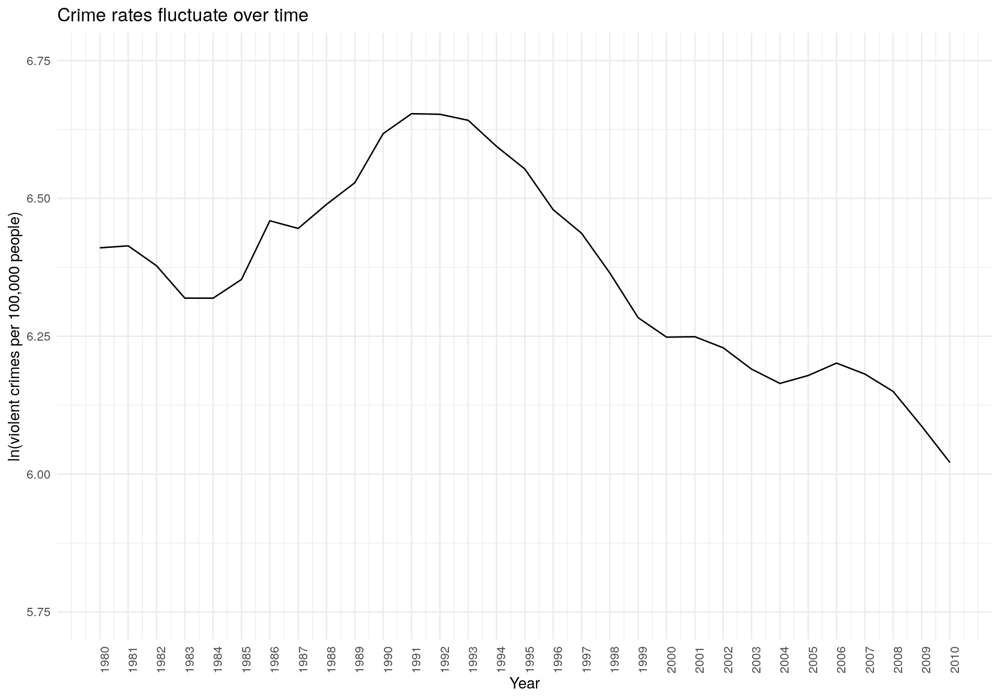
Interesting! It appears that there was an overall national peak in
violent crime in the early 1990s that has since then declined.</p>
<p>Now let’s take a look at each state.</p>
<p>We will use the <code>ggrepel</code> package to add text to the plot
using the <code>geom_text_repel()</code> function. This is especially
useful when there is a lot of text, as this function reduces the overlap
of text labels. Again see <a
href="https://opencasestudies.github.io/ocs-bp-co2-emissions/"
target="_blank">this case study</a> for more details on how to add
labels to elements of plots.</p>
<div class="sourceCode" id="cb17"><pre class="sourceCode r"><code class="sourceCode r"><span id="cb17-1"><a href="#cb17-1" tabindex="-1"></a>DONOHUE_DF <span class="sc">%&gt;%</span></span>
<span id="cb17-2"><a href="#cb17-2" tabindex="-1"></a>  <span class="fu">mutate</span>(<span class="at">Viol_crime_rate_100k_log =</span> <span class="fu">log</span>((Viol_crime_count <span class="sc">*</span> <span class="dv">100000</span>) <span class="sc">/</span> Population)) <span class="sc">%&gt;%</span></span>
<span id="cb17-3"><a href="#cb17-3" tabindex="-1"></a>  <span class="fu">ggplot</span>(<span class="fu">aes</span>(<span class="at">x =</span> YEAR, <span class="at">y =</span> Viol_crime_rate_100k_log, <span class="at">color =</span> STATE)) <span class="sc">+</span></span>
<span id="cb17-4"><a href="#cb17-4" tabindex="-1"></a>  <span class="fu">geom_point</span>(<span class="at">size =</span> <span class="fl">0.5</span>) <span class="sc">+</span></span>
<span id="cb17-5"><a href="#cb17-5" tabindex="-1"></a>  <span class="fu">geom_line</span>(<span class="fu">aes</span>(<span class="at">group =</span> STATE),</span>
<span id="cb17-6"><a href="#cb17-6" tabindex="-1"></a>    <span class="at">linewidth =</span> <span class="fl">0.5</span>,</span>
<span id="cb17-7"><a href="#cb17-7" tabindex="-1"></a>    <span class="at">show.legend =</span> <span class="cn">FALSE</span></span>
<span id="cb17-8"><a href="#cb17-8" tabindex="-1"></a>  ) <span class="sc">+</span></span>
<span id="cb17-9"><a href="#cb17-9" tabindex="-1"></a>  <span class="fu">geom_text_repel</span>(</span>
<span id="cb17-10"><a href="#cb17-10" tabindex="-1"></a>    <span class="at">data =</span> DONOHUE_DF <span class="sc">%&gt;%</span></span>
<span id="cb17-11"><a href="#cb17-11" tabindex="-1"></a>      <span class="fu">mutate</span>(<span class="at">Viol_crime_rate_100k_log =</span> <span class="fu">log</span>((Viol_crime_count <span class="sc">*</span> <span class="dv">100000</span>) <span class="sc">/</span> Population)) <span class="sc">%&gt;%</span></span>
<span id="cb17-12"><a href="#cb17-12" tabindex="-1"></a>      <span class="fu">filter</span>(YEAR <span class="sc">==</span> <span class="fu">last</span>(YEAR)),</span>
<span id="cb17-13"><a href="#cb17-13" tabindex="-1"></a>    <span class="fu">aes</span>(</span>
<span id="cb17-14"><a href="#cb17-14" tabindex="-1"></a>      <span class="at">label =</span> STATE,</span>
<span id="cb17-15"><a href="#cb17-15" tabindex="-1"></a>      <span class="at">x =</span> YEAR,</span>
<span id="cb17-16"><a href="#cb17-16" tabindex="-1"></a>      <span class="at">y =</span> Viol_crime_rate_100k_log</span>
<span id="cb17-17"><a href="#cb17-17" tabindex="-1"></a>    ),</span>
<span id="cb17-18"><a href="#cb17-18" tabindex="-1"></a>    <span class="at">size =</span> <span class="dv">3</span>,</span>
<span id="cb17-19"><a href="#cb17-19" tabindex="-1"></a>    <span class="at">alpha =</span> <span class="dv">1</span>,</span>
<span id="cb17-20"><a href="#cb17-20" tabindex="-1"></a>    <span class="at">nudge_x =</span> <span class="dv">10</span>,</span>
<span id="cb17-21"><a href="#cb17-21" tabindex="-1"></a>    <span class="at">direction =</span> <span class="st">&quot;y&quot;</span>,</span>
<span id="cb17-22"><a href="#cb17-22" tabindex="-1"></a>    <span class="at">hjust =</span> <span class="dv">1</span>,</span>
<span id="cb17-23"><a href="#cb17-23" tabindex="-1"></a>    <span class="at">vjust =</span> <span class="dv">1</span>,</span>
<span id="cb17-24"><a href="#cb17-24" tabindex="-1"></a>    <span class="at">segment.size =</span> <span class="fl">0.25</span>,</span>
<span id="cb17-25"><a href="#cb17-25" tabindex="-1"></a>    <span class="at">segment.alpha =</span> <span class="fl">0.25</span>,</span>
<span id="cb17-26"><a href="#cb17-26" tabindex="-1"></a>    <span class="at">force =</span> <span class="dv">1</span>,</span>
<span id="cb17-27"><a href="#cb17-27" tabindex="-1"></a>    <span class="at">max.iter =</span> <span class="dv">9999</span></span>
<span id="cb17-28"><a href="#cb17-28" tabindex="-1"></a>  ) <span class="sc">+</span></span>
<span id="cb17-29"><a href="#cb17-29" tabindex="-1"></a>  <span class="fu">guides</span>(<span class="at">color =</span> <span class="st">&quot;none&quot;</span>) <span class="sc">+</span></span>
<span id="cb17-30"><a href="#cb17-30" tabindex="-1"></a>  <span class="fu">scale_x_continuous</span>(</span>
<span id="cb17-31"><a href="#cb17-31" tabindex="-1"></a>    <span class="at">breaks =</span> <span class="fu">seq</span>(<span class="dv">1980</span>, <span class="dv">2015</span>, <span class="at">by =</span> <span class="dv">1</span>),</span>
<span id="cb17-32"><a href="#cb17-32" tabindex="-1"></a>    <span class="at">limits =</span> <span class="fu">c</span>(<span class="dv">1980</span>, <span class="dv">2015</span>),</span>
<span id="cb17-33"><a href="#cb17-33" tabindex="-1"></a>    <span class="at">labels =</span> <span class="fu">c</span>(<span class="fu">seq</span>(<span class="dv">1980</span>, <span class="dv">2010</span>, <span class="at">by =</span> <span class="dv">1</span>), <span class="fu">rep</span>(<span class="st">&quot;&quot;</span>, <span class="dv">5</span>))</span>
<span id="cb17-34"><a href="#cb17-34" tabindex="-1"></a>  ) <span class="sc">+</span></span>
<span id="cb17-35"><a href="#cb17-35" tabindex="-1"></a>  <span class="fu">scale_y_continuous</span>(</span>
<span id="cb17-36"><a href="#cb17-36" tabindex="-1"></a>    <span class="at">breaks =</span> <span class="fu">seq</span>(<span class="fl">3.5</span>, <span class="fl">8.5</span>, <span class="at">by =</span> <span class="fl">0.5</span>),</span>
<span id="cb17-37"><a href="#cb17-37" tabindex="-1"></a>    <span class="at">limits =</span> <span class="fu">c</span>(<span class="fl">3.5</span>, <span class="fl">8.5</span>)</span>
<span id="cb17-38"><a href="#cb17-38" tabindex="-1"></a>  ) <span class="sc">+</span></span>
<span id="cb17-39"><a href="#cb17-39" tabindex="-1"></a>  <span class="fu">labs</span>(</span>
<span id="cb17-40"><a href="#cb17-40" tabindex="-1"></a>    <span class="at">title =</span> <span class="st">&quot;States have different levels of crime&quot;</span>,</span>
<span id="cb17-41"><a href="#cb17-41" tabindex="-1"></a>    <span class="at">x =</span> <span class="st">&quot;Year&quot;</span>,</span>
<span id="cb17-42"><a href="#cb17-42" tabindex="-1"></a>    <span class="at">y =</span> <span class="st">&quot;ln(violent crimes per 100,000 people)&quot;</span></span>
<span id="cb17-43"><a href="#cb17-43" tabindex="-1"></a>  ) <span class="sc">+</span></span>
<span id="cb17-44"><a href="#cb17-44" tabindex="-1"></a>  <span class="fu">theme_minimal</span>() <span class="sc">+</span></span>
<span id="cb17-45"><a href="#cb17-45" tabindex="-1"></a>  <span class="fu">theme</span>(<span class="at">axis.text.x =</span> <span class="fu">element_text</span>(<span class="at">angle =</span> <span class="dv">90</span>))</span></code></pre></div>
<p>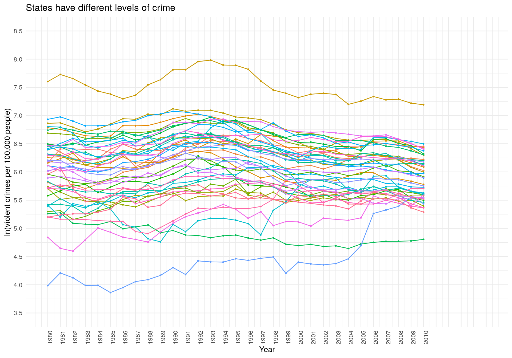</p>
<p>It looks like the crime rates vary quite a bit from one state to
another. Some states show increased crime over time while others show
decreased crime.</p>
<p>Now let’s take a closer look at some of our other variables.</p>
<p>As we do this, we may start to run into issues with missing data for
some of our variables, and it is always good to be aware of missing data
in any data analysis. We can use the <code>vis_miss()</code> function of
the <code>naniar</code> package to confirm that there are no missing
values.</p>
<div class="sourceCode" id="cb18"><pre class="sourceCode r"><code class="sourceCode r"><span id="cb18-1"><a href="#cb18-1" tabindex="-1"></a>DONOHUE_DF <span class="sc">%&gt;%</span></span>
<span id="cb18-2"><a href="#cb18-2" tabindex="-1"></a>  naniar<span class="sc">::</span><span class="fu">vis_miss</span>()</span></code></pre></div>
<p>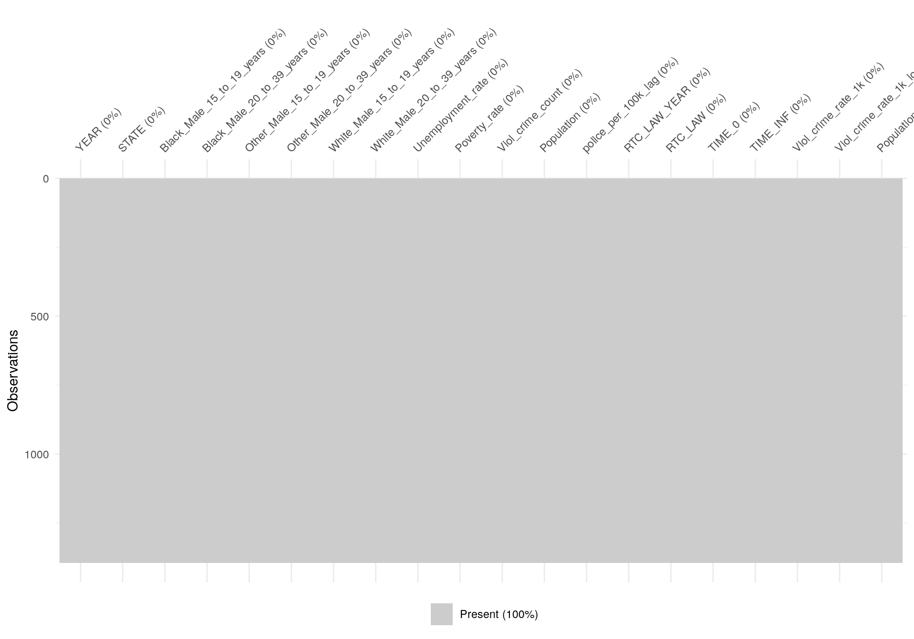</p>
<p>Looks like no missing data!</p>
<div class="sourceCode" id="cb19"><pre class="sourceCode r"><code class="sourceCode r"><span id="cb19-1"><a href="#cb19-1" tabindex="-1"></a>LOTT_DF <span class="sc">%&gt;%</span></span>
<span id="cb19-2"><a href="#cb19-2" tabindex="-1"></a>  naniar<span class="sc">::</span><span class="fu">vis_miss</span>()</span></code></pre></div>
<p>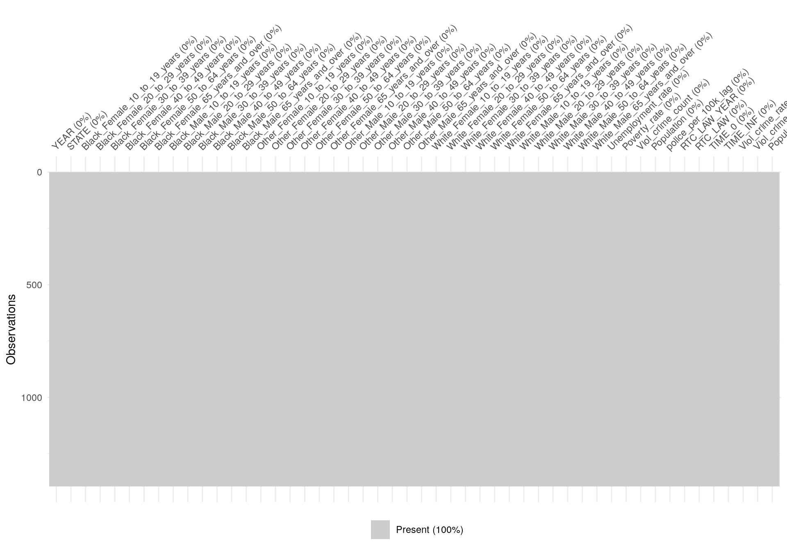
Same for the <code>LOTT_DF</code>.</p>
<p>We can use the <code>skim()</code> of the <code>skimr</code> package
to get a better sense of the data. This also shows missingness, as well
as standard deviations, spread, and means for our data. Also notice that
there is a small histogram of each variable in the final column.</p>
<div class="sourceCode" id="cb20"><pre class="sourceCode r"><code class="sourceCode r"><span id="cb20-1"><a href="#cb20-1" tabindex="-1"></a>skimr<span class="sc">::</span><span class="fu">skim</span>(DONOHUE_DF)</span></code></pre></div>
<p>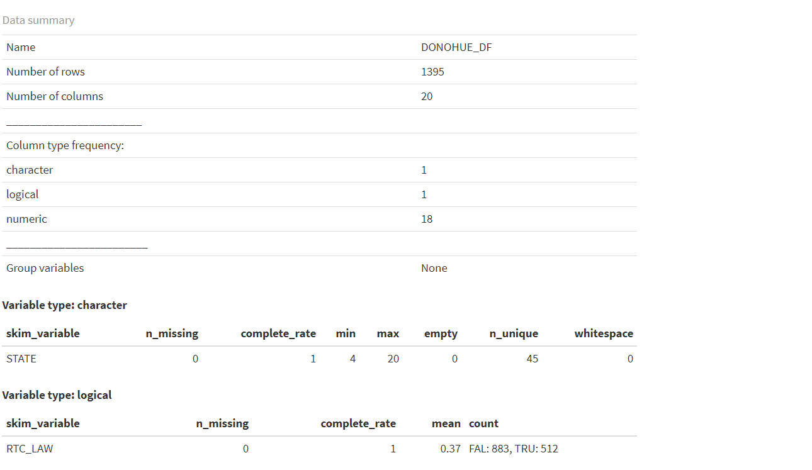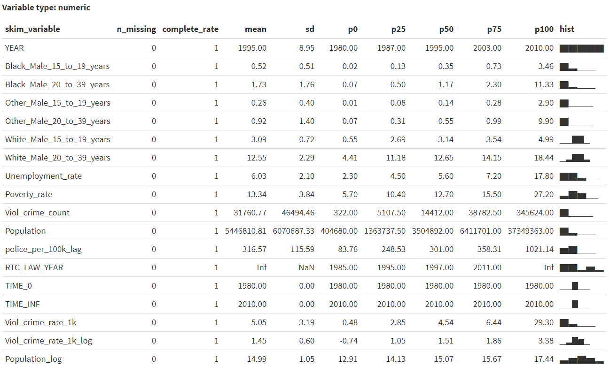</p>
<div class="sourceCode" id="cb21"><pre class="sourceCode r"><code class="sourceCode r"><span id="cb21-1"><a href="#cb21-1" tabindex="-1"></a>skimr<span class="sc">::</span><span class="fu">skim</span>(LOTT_DF)</span></code></pre></div>
<p>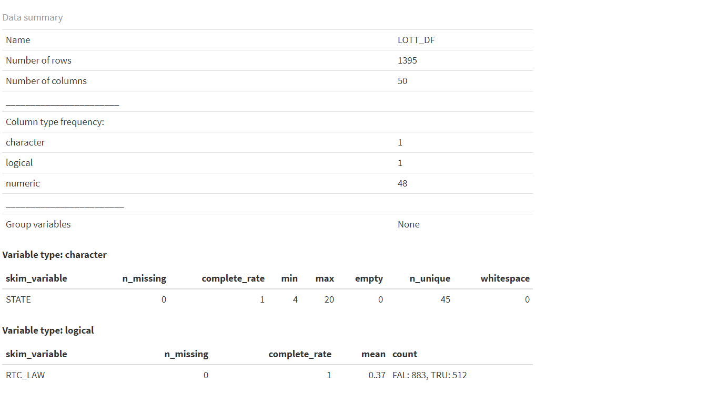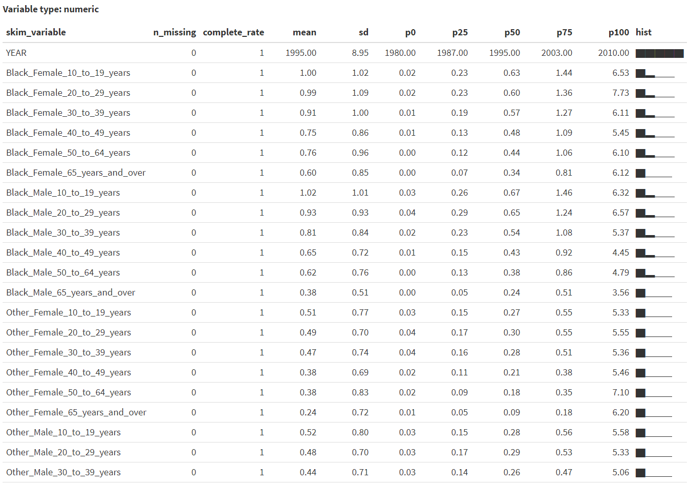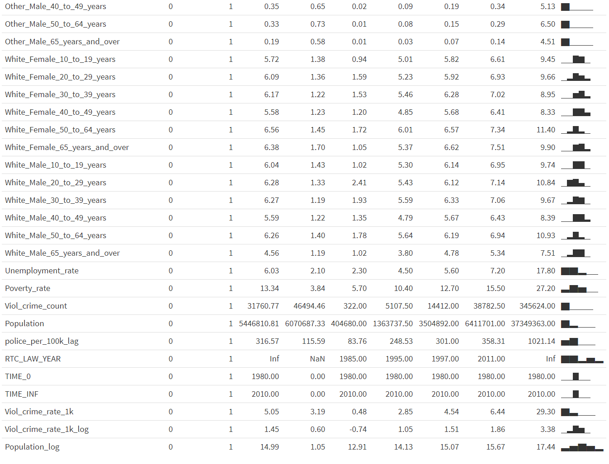</p>
<p>We can see from this function that we have the number of variables of
the class types that we expect for each tibble. We can also see that the
means of the variables that should be the same for each tibble are in
fact the same. We can also tell that the values for the variables are in
general what we would expect.</p>
</div>
<div id="data-analysis" class="section level1">
<h1><strong>Data Analysis</strong></h1>
<hr />
<div id="panel-analysis" class="section level2">
<h2><strong>Panel Analysis</strong></h2>
<hr />
<p>In these datasets, we have what is called <a
href="https://en.wikipedia.org/wiki/Panel_data" target="_blank">panel
data</a>, a special type of longitudinal data. Longitudinal data are
data measurements taken over time. Panel data are data repeatedly
measured for multiple panel members or individuals over time. This is in
contrast with time series data, which measures one individual over time
and cross sectional data, which measures multiple individuals at one
point in time. In other words, panel data is a combination of both, with
measurements for multiple individuals/units of observation over multiple
time periods. In our case, we have measurements of violent crime and
other variables for each state over many years. Therefore we are using
measurements about the same states over time.</p>
<p>In a panel analysis there are <span class="math inline">\(N\)</span>
individual panel members and <span class="math inline">\(T\)</span> time
points.</p>
<p>There are two types of panels:<br />
1. <strong>Balanced</strong> - At each time point (<span
class="math inline">\(T\)</span>), there are data points for each
individual(<span class="math inline">\(N\)</span>).</p>
<table>
<colgroup>
<col width="43%" />
<col width="56%" />
</colgroup>
<thead>
<tr class="header">
<th>Time Points (<span class="math inline">\(T\)</span>)</th>
<th>Individuals (<span class="math inline">\(N\)</span>)</th>
</tr>
</thead>
<tbody>
<tr class="odd">
<td>1977</td>
<td>Nevada</td>
</tr>
<tr class="even">
<td>1977</td>
<td>Alabama</td>
</tr>
<tr class="odd">
<td>1977</td>
<td>Kansas</td>
</tr>
<tr class="even">
<td>1978</td>
<td>Nevada</td>
</tr>
<tr class="odd">
<td>1978</td>
<td>Alabama</td>
</tr>
<tr class="even">
<td>1978</td>
<td>Kansas</td>
</tr>
<tr class="odd">
<td>1979</td>
<td>Nevada</td>
</tr>
<tr class="even">
<td>1979</td>
<td>Alabama</td>
</tr>
<tr class="odd">
<td>1979</td>
<td>Kansas</td>
</tr>
</tbody>
</table>
<ol start="2" style="list-style-type: decimal">
<li><strong>Unbalanced</strong> - There may be data points missing for
some individuals (<span class="math inline">\(N\)</span>) at some time
points (<span class="math inline">\(T\)</span>).</li>
</ol>
<table>
<colgroup>
<col width="43%" />
<col width="56%" />
</colgroup>
<thead>
<tr class="header">
<th>Time Points (<span class="math inline">\(T\)</span>)</th>
<th>Individuals (<span class="math inline">\(N\)</span>)</th>
</tr>
</thead>
<tbody>
<tr class="odd">
<td>1977</td>
<td>Nevada</td>
</tr>
<tr class="even">
<td>1977</td>
<td>Alabama</td>
</tr>
<tr class="odd">
<td>1978</td>
<td>Nevada</td>
</tr>
<tr class="even">
<td>1978</td>
<td>Alabama</td>
</tr>
<tr class="odd">
<td>1979</td>
<td>Nevada</td>
</tr>
<tr class="even">
<td>1979</td>
<td>Alabama</td>
</tr>
<tr class="odd">
<td>1979</td>
<td>Kansas</td>
</tr>
</tbody>
</table>
<p>Overall in a balanced panel, we have <span
class="math inline">\(n\)</span> observations, where <span
class="math inline">\(n = N*T\)</span>.</p>
<p>In an unbalanced panel, the number of observations is less than <span
class="math inline">\(N*T\)</span>.</p>
<p>In our case we have:<br />
<span class="math inline">\(N\)</span> = 45 states (in the data
wrangling process we removed those who had adopted an RTC law before
1980)<br />
<span class="math inline">\(T\)</span> = 31 years (1980 - 2010)</p>
<p>In every year we have measurements for each state (as we just saw
above), thus our panel is balanced.</p>
<p>So, our total observations <span class="math inline">\(n =
45*31\)</span>, thus <span class="math inline">\(n\)</span> = 1395.</p>
<p>We will be performing a <strong>panel linear regression model
analysis</strong>.</p>
<p>In such an analysis we will model our data according to this generic
model:</p>
<p><span
class="math display">\[Y_{it}=β_{0}+β_{1}X_{1it}+...+β_{K}X_{Kit}+e_{it}\]</span></p>
<p>Where <span class="math inline">\(i\)</span> is the individual
dimension (in our case individual states) and <span
class="math inline">\(t\)</span> is the time dimension.</p>
<p>Some explanatory/independent variables or regressors <span
class="math inline">\(X_{it}\)</span> will vary across individuals and
time, while others will be fixed across the time of the study (or don’t
change over time), while others still will be fixed across individuals
but vary across time periods.</p>
<p>There are three general sub-types of <a
href="https://en.wikipedia.org/wiki/Panel_analysis"
target="_blank">panel regression analysis</a>.</p>
<p>Overall, they assume that the different individuals are independent,
however the same data for the same individual may be correlated across
time.</p>
<p>The main difference between the three sub-types are the assumptions
about unobserved differences between individuals.</p>
<p>If you are familiar with fixed and random effects in the context in
the statistical literature the following econometric definitions will
sound a bit different.</p>
<p>From the <code>plm</code> package <a
href="https://cran.r-project.org/package=plm">documentation</a>:</p>
<blockquote>
<p>In the mixed models literature,…fixed effect indicates a parameter
that is assumed constant, while random effects are parameters that vary
randomly around zero according to a joint multivariate normal
distribution.</p>
</blockquote>
<blockquote>
<p>…Having fixed effects in an <strong>econometric model</strong> has
the meaning of allowing the intercept to vary with group, or time, or
both, while the other parameters are generally still assumed to be
homogeneous. Having random effects means having a group– (or time–, or
both) specific component in the error term.</p>
</blockquote>
<p>OK, so now that we know not to expect the typical mixed model
definitions of fixed and random effects, let’s get back to the three
sub-types of panel regression analysis:</p>
<ol style="list-style-type: decimal">
<li><p><strong>independently pooled panels</strong> - assumes that there
are no individual effects that are independent of time and also no
effect of time on all the individuals. In other words, the independent
variables are not correlated with any error term. This is essentially an
ordinary least squares linear regression. In our setting, it would mean
treating each year-state observation as unrelated to the others, which
probably does not make sense, since we expect observations within a
state to be related to one another. This type of panel regression makes
the most assumptions and is therefore typically not used for panel data.
In this case the model formulation is: <span
class="math display">\[Y_{it}=\beta_{0}+\beta_{1}x_{1it}+...+\beta_{K}X_{Kit}
+ e_{it}\]</span> where the intercept <span
class="math inline">\(\beta_{0it}=\beta_0\)</span>for all <span
class="math inline">\(i,t\)</span> and slope <span
class="math inline">\(\beta_{kit}=\beta_k\)</span> for all <span
class="math inline">\(i,t\)</span>.</p></li>
<li><p><strong>fixed effects</strong> - assumes that there are unknown
or unobserved unique aspects about the individuals or heterogeneity
among individuals <span class="math inline">\(a_i\)</span> that are not
explained by the independent variables but influence the outcome
variable of interest. They do not vary with time or in other words are
fixed over time but may be <strong>correlated</strong> with independent
variables <span class="math inline">\(X_{it}\)</span>.</p></li>
</ol>
<p>In this case the intercept can be different for each individual <span
class="math inline">\(\beta_{0i}\)</span>, but the other coefficients
are assumed to be the same across all the individuals.</p>
<p>These individual <span class="math inline">\(a_i\)</span> effects can
be correlated with the independent variables <span
class="math inline">\(X\)</span>. This model can be expressed as <span
class="math display">\[Y_{it}=\beta_{0}+\beta_{1}X_{1it}+...\beta_{K}X_{Kit}+
a_i +e_{it}\]</span> or alternatively the individual effects can be
absorbed into an individual-specific intercept term <span
class="math inline">\(\beta_{0i}\)</span>: <span
class="math display">\[Y_{it}=\beta_{0i}+\beta_{1}X_{1it}+...\beta_{k}X_{kit}
+e_{it}\]</span> This type of panel regression makes the fewest
assumptions.</p>
<ol start="3" style="list-style-type: decimal">
<li><strong>random effects</strong> - assumes that there are unknown or
unobserved unique qualities about the individuals that influence the
outcome variable of interest that are <strong>not correlated</strong>
with the independent variables. Thus, the random effects model actually
makes <strong>more assumptions</strong> than the fixed effect model. We
will not consider this model here.</li>
</ol>
<p>There is quite a lot of discussion in econometrics around which model
is appropriate to use and when, but we are not going to dwell on this
topic here, as our main focus in this case study is on
multicollinearity. However, here are some additional references on these
topics for further reading: See <a
href="https://www.bauer.uh.edu/rsusmel/phd/ec1-15.pdf">here</a> and <a
href="https://sites.google.com/site/econometricsacademy/econometrics-models/panel-data-models">here</a>
and <a href="https://cran.r-project.org/package=plm">here</a> for more
information about these different models.</p>
</div>
<div id="donohue-et-al." class="section level2">
<h2><strong>Donohue, et al.</strong></h2>
<hr />
<p>OK! We are now ready to start analyzing our data!</p>
<p>In our case, we will be performing a fixed effect panel regression
analysis, as we do in fact think that some of the unobserved qualities
about the different states may be correlated with some of our
independent variables. For example, the level of economic opportunity
might be an unobserved feature about the states that influences violent
crime rate and would be possibly correlated with poverty rate and
unemployment. There are statistical tests for evaluating which model is
the most appropriate, which are implemented in the <code>plm</code>
package that we will be using.</p>
<p>To perform our analysis we will be using the <code>plm</code>
package. This stands for Panel Linear Model.</p>
<p>We need to use a special type of data to use this package, called a
<code>pdata.frame</code> which is short for panel data frame. This
allows us to specify that we are using panel data and what the panel
structure looks like, i.e., how the different observations are meant to
be grouped together, both by state and by time.</p>
<p>We need to indicate which variable should be used to identify the
individuals in our panel, and what variable should be used to identify
the time periods in our panel. In our case the <code>STATE</code>
variable identifies the individuals and the <code>YEAR</code> variable
identifies the time periods.</p>
<p>We can specify this structure using the <code>pdata.frame()</code>
function of the <code>plm</code> package, by using the
<code>index</code> argument, where the individual variable is specified
first followed by the time variable, like so:
<code>index=c("Individual_Variable_NAME", "Time_Period_Variable_NAME")</code>.</p>
<div class="sourceCode" id="cb22"><pre class="sourceCode r"><code class="sourceCode r"><span id="cb22-1"><a href="#cb22-1" tabindex="-1"></a>d_panel_DONOHUE <span class="ot">&lt;-</span> <span class="fu">pdata.frame</span>(DONOHUE_DF, <span class="at">index =</span> <span class="fu">c</span>(<span class="st">&quot;STATE&quot;</span>, <span class="st">&quot;YEAR&quot;</span>))</span>
<span id="cb22-2"><a href="#cb22-2" tabindex="-1"></a></span>
<span id="cb22-3"><a href="#cb22-3" tabindex="-1"></a><span class="fu">class</span>(d_panel_DONOHUE)</span></code></pre></div>
<pre><code>[1] &quot;pdata.frame&quot; &quot;data.frame&quot; </code></pre>
<div class="sourceCode" id="cb24"><pre class="sourceCode r"><code class="sourceCode r"><span id="cb24-1"><a href="#cb24-1" tabindex="-1"></a><span class="fu">slice_head</span>(d_panel_DONOHUE, <span class="at">n =</span> <span class="dv">3</span>)</span></code></pre></div>
<pre><code>            YEAR  STATE Black_Male_15_to_19_years Black_Male_20_to_39_years
Alaska-1980 1980 Alaska                 0.1670456                 0.9933775
Alaska-1981 1981 Alaska                 0.1732299                 1.0028219
Alaska-1982 1982 Alaska                 0.1737069                 1.0204445
            Other_Male_15_to_19_years Other_Male_20_to_39_years
Alaska-1980                  1.129782                  2.963329
Alaska-1981                  1.124441                  2.974775
Alaska-1982                  1.069821                  3.015071
            White_Male_15_to_19_years White_Male_20_to_39_years
Alaska-1980                  3.627805                  18.28852
Alaska-1981                  3.558261                  18.12821
Alaska-1982                  3.391844                  18.10666
            Unemployment_rate Poverty_rate Viol_crime_count Population
Alaska-1980               9.6          9.6             1919     404680
Alaska-1981               9.4          9.0             2537     418519
Alaska-1982               9.9         10.6             2732     449608
            police_per_100k_lag RTC_LAW_YEAR RTC_LAW TIME_0 TIME_INF
Alaska-1980            194.7218         1995   FALSE   1980     2010
Alaska-1981            200.2299         1995   FALSE   1980     2010
Alaska-1982            191.0553         1995   FALSE   1980     2010
            Viol_crime_rate_1k Viol_crime_rate_1k_log Population_log
Alaska-1980           4.742018               1.556463       12.91085
Alaska-1981           6.061851               1.802015       12.94448
Alaska-1982           6.076404               1.804413       13.01613</code></pre>
<p>Indeed we have now created a pdata.frame object and we can see that
the row names show the individual states and time period years.</p>
<p>OK, now we are ready to run our panel linear model on our panel data
frame.</p>
<p>To do so we will use the <code>plm()</code> function and we will
specify the formula for our model, where the dependent variable
<code>Viol_crime_rate_1k_log</code> will be on the left of our
<code>~</code> sign and all of the independent variables will be listed
on the right with <code>+</code> signs in between each.</p>
<p>As discussed above, there are different types of panel data analysis,
and which type of model is fit is controlled by the <code>effect</code>
and <code>model</code> arguments to <code>plm()</code>. So we need to
specify what type of <code>effect</code> we would like to model and what
type of <code>model</code> we would like to use.</p>
<p>There are three main options for the <code>effect</code> argument: 1)
individual - model for the effect of individual identity 2) time - model
for the effect of time 3) two ways - meaning modeling for the effect of
both individual identity and time</p>
<p>There are four main options for the <code>model</code>
argument:<br />
1) pooling - standard pooled ordinary least squares regression
model<br />
2) within - fixed effects model (variation between individuals is
ignored, model compares individuals to themselves at different periods
of time)<br />
3) between - fixed effects model (variation within individuals from one
time point to another is ignored, model compares different individuals
at each point of time)<br />
4) random - random effects (each state has a different intercept but
force it to follow a normal distribution - requires more
assumptions)</p>
<p>Typically it is best to think about what you are trying to evaluate
with your data in trying to choose how to model your data. However,
there are also some tests that can help to assess this which we will
briefly cover.</p>
<p>We are interested in how violence in each state varied over time,
thus we are interested in within <code>STATE</code>variation, so we will
perform our PLM analysis with the <code>model = within</code> argument
to perform this particular type of fixed effects model.</p>
<p>We also speculate that there is an effect of individual
<code>STATE</code> identity and time on violent crime rate. In other
words, we expect some states to have high rates of crime, and others to
have low rates of crime. We also expect crime to change over time. This
means we want to use the <code>effect = "twoways"</code> argument to
<code>plm()</code>.</p>
<p>Here is how we would implement this for the Donohue data:</p>
<div class="sourceCode" id="cb26"><pre class="sourceCode r"><code class="sourceCode r"><span id="cb26-1"><a href="#cb26-1" tabindex="-1"></a>DONOHUE_OUTPUT <span class="ot">&lt;-</span> <span class="fu">plm</span>(Viol_crime_rate_1k_log <span class="sc">~</span></span>
<span id="cb26-2"><a href="#cb26-2" tabindex="-1"></a>                      RTC_LAW <span class="sc">+</span></span>
<span id="cb26-3"><a href="#cb26-3" tabindex="-1"></a>                      White_Male_15_to_19_years <span class="sc">+</span></span>
<span id="cb26-4"><a href="#cb26-4" tabindex="-1"></a>                      White_Male_20_to_39_years <span class="sc">+</span></span>
<span id="cb26-5"><a href="#cb26-5" tabindex="-1"></a>                      Black_Male_15_to_19_years <span class="sc">+</span></span>
<span id="cb26-6"><a href="#cb26-6" tabindex="-1"></a>                      Black_Male_20_to_39_years <span class="sc">+</span></span>
<span id="cb26-7"><a href="#cb26-7" tabindex="-1"></a>                      Other_Male_15_to_19_years <span class="sc">+</span></span>
<span id="cb26-8"><a href="#cb26-8" tabindex="-1"></a>                      Other_Male_20_to_39_years <span class="sc">+</span></span>
<span id="cb26-9"><a href="#cb26-9" tabindex="-1"></a>                      Unemployment_rate <span class="sc">+</span></span>
<span id="cb26-10"><a href="#cb26-10" tabindex="-1"></a>                      Poverty_rate <span class="sc">+</span></span>
<span id="cb26-11"><a href="#cb26-11" tabindex="-1"></a>                      Population_log <span class="sc">+</span></span>
<span id="cb26-12"><a href="#cb26-12" tabindex="-1"></a>                      police_per_100k_lag,</span>
<span id="cb26-13"><a href="#cb26-13" tabindex="-1"></a>                      <span class="at">effect =</span> <span class="st">&quot;twoways&quot;</span>,</span>
<span id="cb26-14"><a href="#cb26-14" tabindex="-1"></a>                      <span class="at">model =</span> <span class="st">&quot;within&quot;</span>,</span>
<span id="cb26-15"><a href="#cb26-15" tabindex="-1"></a>                      <span class="at">data =</span> d_panel_DONOHUE</span>
<span id="cb26-16"><a href="#cb26-16" tabindex="-1"></a>                      )</span></code></pre></div>
<p>To see the results we can use the base <code>summary()</code>
function. We can view this output in tidy format using the
<code>tidy()</code> function of the <code>broom</code> package.</p>
<p>We will add an <code>analysis</code> variable as a label for
plots.</p>
<div class="sourceCode" id="cb27"><pre class="sourceCode r"><code class="sourceCode r"><span id="cb27-1"><a href="#cb27-1" tabindex="-1"></a><span class="fu">summary</span>(DONOHUE_OUTPUT)</span></code></pre></div>
<pre><code>Twoways effects Within Model

Call:
plm(formula = Viol_crime_rate_1k_log ~ RTC_LAW + White_Male_15_to_19_years + 
    White_Male_20_to_39_years + Black_Male_15_to_19_years + Black_Male_20_to_39_years + 
    Other_Male_15_to_19_years + Other_Male_20_to_39_years + Unemployment_rate + 
    Poverty_rate + Population_log + police_per_100k_lag, data = d_panel_DONOHUE, 
    effect = &quot;twoways&quot;, model = &quot;within&quot;)

Balanced Panel: n = 45, T = 31, N = 1395

Residuals:
       Min.     1st Qu.      Median     3rd Qu.        Max. 
-0.57957437 -0.08942194 -0.00090654  0.08673054  1.11216999 

Coefficients:
                             Estimate  Std. Error t-value  Pr(&gt;|t|)    
RTC_LAWTRUE                0.01796779  0.01663911  1.0799 0.2804066    
White_Male_15_to_19_years -0.00091825  0.02724210 -0.0337 0.9731160    
White_Male_20_to_39_years  0.03466473  0.00972839  3.5633 0.0003794 ***
Black_Male_15_to_19_years -0.05673593  0.05746052 -0.9874 0.3236341    
Black_Male_20_to_39_years  0.12605439  0.01931450  6.5264 9.607e-11 ***
Other_Male_15_to_19_years  0.69201638  0.11322394  6.1119 1.297e-09 ***
Other_Male_20_to_39_years -0.30276797  0.03811855 -7.9428 4.226e-15 ***
Unemployment_rate         -0.01685806  0.00489952 -3.4408 0.0005984 ***
Poverty_rate              -0.00780235  0.00295720 -2.6384 0.0084280 ** 
Population_log            -0.17991653  0.06041773 -2.9779 0.0029559 ** 
police_per_100k_lag        0.00060391  0.00013689  4.4115 1.111e-05 ***
---
Signif. codes:  0 &#39;***&#39; 0.001 &#39;**&#39; 0.01 &#39;*&#39; 0.05 &#39;.&#39; 0.1 &#39; &#39; 1

Total Sum of Squares:    43.211
Residual Sum of Squares: 36.716
R-Squared:      0.15031
Adj. R-Squared: 0.095138
F-statistic: 21.0514 on 11 and 1309 DF, p-value: &lt; 2.22e-16</code></pre>
<div class="sourceCode" id="cb29"><pre class="sourceCode r"><code class="sourceCode r"><span id="cb29-1"><a href="#cb29-1" tabindex="-1"></a>DONOHUE_OUTPUT_TIDY <span class="ot">&lt;-</span> <span class="fu">tidy</span>(DONOHUE_OUTPUT, <span class="at">conf.int =</span> <span class="fl">0.95</span>)</span>
<span id="cb29-2"><a href="#cb29-2" tabindex="-1"></a></span>
<span id="cb29-3"><a href="#cb29-3" tabindex="-1"></a>DONOHUE_OUTPUT_TIDY</span></code></pre></div>
<pre><code># A tibble: 11 × 7
   term                 estimate std.error statistic  p.value conf.low conf.high
   &lt;chr&gt;                   &lt;dbl&gt;     &lt;dbl&gt;     &lt;dbl&gt;    &lt;dbl&gt;    &lt;dbl&gt;     &lt;dbl&gt;
 1 RTC_LAWTRUE           1.80e-2  0.0166      1.08   2.80e- 1 -1.46e-2  0.0506  
 2 White_Male_15_to_19… -9.18e-4  0.0272     -0.0337 9.73e- 1 -5.43e-2  0.0525  
 3 White_Male_20_to_39…  3.47e-2  0.00973     3.56   3.79e- 4  1.56e-2  0.0537  
 4 Black_Male_15_to_19… -5.67e-2  0.0575     -0.987  3.24e- 1 -1.69e-1  0.0559  
 5 Black_Male_20_to_39…  1.26e-1  0.0193      6.53   9.61e-11  8.82e-2  0.164   
 6 Other_Male_15_to_19…  6.92e-1  0.113       6.11   1.30e- 9  4.70e-1  0.914   
 7 Other_Male_20_to_39… -3.03e-1  0.0381     -7.94   4.23e-15 -3.77e-1 -0.228   
 8 Unemployment_rate    -1.69e-2  0.00490    -3.44   5.98e- 4 -2.65e-2 -0.00726 
 9 Poverty_rate         -7.80e-3  0.00296    -2.64   8.43e- 3 -1.36e-2 -0.00201 
10 Population_log       -1.80e-1  0.0604     -2.98   2.96e- 3 -2.98e-1 -0.0615  
11 police_per_100k_lag   6.04e-4  0.000137    4.41   1.11e- 5  3.36e-4  0.000872</code></pre>
<div class="sourceCode" id="cb31"><pre class="sourceCode r"><code class="sourceCode r"><span id="cb31-1"><a href="#cb31-1" tabindex="-1"></a>DONOHUE_OUTPUT_TIDY<span class="sc">$</span>Analysis <span class="ot">&lt;-</span> <span class="st">&quot;Analysis 1&quot;</span></span></code></pre></div>
<p>As discussed above, we are choosing to use a fixed effects model
because we believe it is most appropriate for our data. However, there
are statistical tests implemented in the <code>plm</code> package that
would allow us to test whether one of the other models would be as
appropriate for our data. For example, we could perform a test to
determine if we could have simply used a pooled model, i.e., the test
evaluates whether the coefficients (including the intercepts) are equal
across individuals. This test is implemented in the
<code>pooltest()</code> function of the <code>plm</code> package and
performs a comparison between the pooled model to the fixed effect
within model. To test if using a random effect model would be more
appropriate compared to the fixed effect model, one could use the <a
href="https://en.wikipedia.org/wiki/Durbin%E2%80%93Wu%E2%80%93Hausman_test"
target="_blank">Hausman test</a> (also called the Durbin-Wu-Hausman
test). This test is implemented using the <code>phtest()</code> function
of the <code>plm</code> package.</p>
<p>Finally, we could also perform a test to evaluate if there is indeed
an individual (state) effect and a time effect in our model using the
<code>plmtest()</code> function of the <code>plm</code> package.</p>
<p>For more information on these tests and this package, see <a
href="https://cran.r-project.org/package=plm" target="_blank">here</a>
and <a href="http://www.princeton.edu/~otorres/Panel101R.pdf"
target="_blank">here</a>.</p>
</div>
<div id="mustard-and-lott" class="section level2">
<h2><strong>Mustard and Lott</strong></h2>
<hr />
<p>OK, now we will do the same for the Mustard and Lott analysis. In
this case we would have a very large formula to write. So instead, we
can use the <code>as.formula()</code> function of the <code>stats</code>
package and the base <code>paste()</code> function to combine all of our
explanatory variables into one formula without making a mistake. First
we will create an object where we select only the explanatory
variables.</p>
<div class="sourceCode" id="cb32"><pre class="sourceCode r"><code class="sourceCode r"><span id="cb32-1"><a href="#cb32-1" tabindex="-1"></a>LOTT_variables <span class="ot">&lt;-</span> LOTT_DF <span class="sc">%&gt;%</span></span>
<span id="cb32-2"><a href="#cb32-2" tabindex="-1"></a>  dplyr<span class="sc">::</span><span class="fu">select</span>(</span>
<span id="cb32-3"><a href="#cb32-3" tabindex="-1"></a>    RTC_LAW,</span>
<span id="cb32-4"><a href="#cb32-4" tabindex="-1"></a>    <span class="fu">contains</span>(<span class="fu">c</span>(<span class="st">&quot;White&quot;</span>, <span class="st">&quot;Black&quot;</span>, <span class="st">&quot;Other&quot;</span>)),</span>
<span id="cb32-5"><a href="#cb32-5" tabindex="-1"></a>    Unemployment_rate,</span>
<span id="cb32-6"><a href="#cb32-6" tabindex="-1"></a>    Poverty_rate,</span>
<span id="cb32-7"><a href="#cb32-7" tabindex="-1"></a>    Population_log,</span>
<span id="cb32-8"><a href="#cb32-8" tabindex="-1"></a>    police_per_100k_lag</span>
<span id="cb32-9"><a href="#cb32-9" tabindex="-1"></a>  ) <span class="sc">%&gt;%</span></span>
<span id="cb32-10"><a href="#cb32-10" tabindex="-1"></a>  <span class="fu">colnames</span>()</span>
<span id="cb32-11"><a href="#cb32-11" tabindex="-1"></a></span>
<span id="cb32-12"><a href="#cb32-12" tabindex="-1"></a></span>
<span id="cb32-13"><a href="#cb32-13" tabindex="-1"></a>LOTT_fmla <span class="ot">&lt;-</span> <span class="fu">as.formula</span>(<span class="fu">paste</span>(</span>
<span id="cb32-14"><a href="#cb32-14" tabindex="-1"></a>  <span class="st">&quot;Viol_crime_rate_1k_log ~&quot;</span>,</span>
<span id="cb32-15"><a href="#cb32-15" tabindex="-1"></a>  <span class="fu">paste</span>(LOTT_variables, <span class="at">collapse =</span> <span class="st">&quot; + &quot;</span>)</span>
<span id="cb32-16"><a href="#cb32-16" tabindex="-1"></a>))</span>
<span id="cb32-17"><a href="#cb32-17" tabindex="-1"></a></span>
<span id="cb32-18"><a href="#cb32-18" tabindex="-1"></a>LOTT_fmla</span></code></pre></div>
<pre><code>Viol_crime_rate_1k_log ~ RTC_LAW + White_Female_10_to_19_years + 
    White_Female_20_to_29_years + White_Female_30_to_39_years + 
    White_Female_40_to_49_years + White_Female_50_to_64_years + 
    White_Female_65_years_and_over + White_Male_10_to_19_years + 
    White_Male_20_to_29_years + White_Male_30_to_39_years + White_Male_40_to_49_years + 
    White_Male_50_to_64_years + White_Male_65_years_and_over + 
    Black_Female_10_to_19_years + Black_Female_20_to_29_years + 
    Black_Female_30_to_39_years + Black_Female_40_to_49_years + 
    Black_Female_50_to_64_years + Black_Female_65_years_and_over + 
    Black_Male_10_to_19_years + Black_Male_20_to_29_years + Black_Male_30_to_39_years + 
    Black_Male_40_to_49_years + Black_Male_50_to_64_years + Black_Male_65_years_and_over + 
    Other_Female_10_to_19_years + Other_Female_20_to_29_years + 
    Other_Female_30_to_39_years + Other_Female_40_to_49_years + 
    Other_Female_50_to_64_years + Other_Female_65_years_and_over + 
    Other_Male_10_to_19_years + Other_Male_20_to_29_years + Other_Male_30_to_39_years + 
    Other_Male_40_to_49_years + Other_Male_50_to_64_years + Other_Male_65_years_and_over + 
    Unemployment_rate + Poverty_rate + Population_log + police_per_100k_lag</code></pre>
<p>That is quite the formula!</p>
<p>OK, now again we will make a panel data frame and we will fit a fixed
effect two-way model for time and individuals (<code>STATE</code>) with
this data as well.</p>
<div class="sourceCode" id="cb34"><pre class="sourceCode r"><code class="sourceCode r"><span id="cb34-1"><a href="#cb34-1" tabindex="-1"></a>d_panel_LOTT <span class="ot">&lt;-</span> <span class="fu">pdata.frame</span>(LOTT_DF, <span class="at">index =</span> <span class="fu">c</span>(<span class="st">&quot;STATE&quot;</span>, <span class="st">&quot;YEAR&quot;</span>))</span>
<span id="cb34-2"><a href="#cb34-2" tabindex="-1"></a></span>
<span id="cb34-3"><a href="#cb34-3" tabindex="-1"></a>LOTT_OUTPUT <span class="ot">&lt;-</span> <span class="fu">plm</span>(LOTT_fmla,</span>
<span id="cb34-4"><a href="#cb34-4" tabindex="-1"></a>  <span class="at">model =</span> <span class="st">&quot;within&quot;</span>,</span>
<span id="cb34-5"><a href="#cb34-5" tabindex="-1"></a>  <span class="at">effect =</span> <span class="st">&quot;twoways&quot;</span>,</span>
<span id="cb34-6"><a href="#cb34-6" tabindex="-1"></a>  <span class="at">data =</span> d_panel_LOTT</span>
<span id="cb34-7"><a href="#cb34-7" tabindex="-1"></a>)</span>
<span id="cb34-8"><a href="#cb34-8" tabindex="-1"></a></span>
<span id="cb34-9"><a href="#cb34-9" tabindex="-1"></a><span class="fu">summary</span>(LOTT_OUTPUT)</span></code></pre></div>
<pre><code>Twoways effects Within Model

Call:
plm(formula = LOTT_fmla, data = d_panel_LOTT, effect = &quot;twoways&quot;, 
    model = &quot;within&quot;)

Balanced Panel: n = 45, T = 31, N = 1395

Residuals:
      Min.    1st Qu.     Median    3rd Qu.       Max. 
-0.5448906 -0.0780395  0.0026738  0.0788052  0.5847263 

Coefficients:
                                  Estimate  Std. Error  t-value  Pr(&gt;|t|)    
RTC_LAWTRUE                    -0.04687169  0.01641851  -2.8548 0.0043758 ** 
White_Female_10_to_19_years     0.62441376  0.15103427   4.1343 3.793e-05 ***
White_Female_20_to_29_years    -0.05942541  0.06332108  -0.9385 0.3481763    
White_Female_30_to_39_years     0.16028113  0.08045953   1.9921 0.0465755 *  
White_Female_40_to_49_years     0.10087510  0.08170707   1.2346 0.2172082    
White_Female_50_to_64_years    -0.37624966  0.06303172  -5.9692 3.083e-09 ***
White_Female_65_years_and_over  0.20636690  0.04742430   4.3515 1.460e-05 ***
White_Male_10_to_19_years      -0.59141591  0.14436974  -4.0965 4.457e-05 ***
White_Male_20_to_29_years       0.08717546  0.05862342   1.4870 0.1372503    
White_Male_30_to_39_years      -0.12514225  0.08588569  -1.4571 0.1453400    
White_Male_40_to_49_years      -0.21812366  0.07293615  -2.9906 0.0028375 ** 
White_Male_50_to_64_years       0.37845575  0.07314122   5.1743 2.653e-07 ***
White_Male_65_years_and_over   -0.20915907  0.06659815  -3.1406 0.0017246 ** 
Black_Female_10_to_19_years    -1.03146594  0.43610403  -2.3652 0.0181697 *  
Black_Female_20_to_29_years    -0.02721685  0.17462559  -0.1559 0.8761693    
Black_Female_30_to_39_years    -0.03246043  0.20498789  -0.1584 0.8742037    
Black_Female_40_to_49_years     0.43820099  0.23524130   1.8628 0.0627234 .  
Black_Female_50_to_64_years     0.04906111  0.21393128   0.2293 0.8186482    
Black_Female_65_years_and_over  0.07226074  0.24373031   0.2965 0.7669130    
Black_Male_10_to_19_years       1.22536162  0.44559642   2.7499 0.0060447 ** 
Black_Male_20_to_29_years      -0.06587312  0.18392655  -0.3581 0.7202909    
Black_Male_30_to_39_years       0.24720746  0.23673862   1.0442 0.2965804    
Black_Male_40_to_49_years      -0.66869983  0.27173041  -2.4609 0.0139904 *  
Black_Male_50_to_64_years      -0.16737616  0.23977741  -0.6980 0.4852740    
Black_Male_65_years_and_over   -0.58743446  0.34691532  -1.6933 0.0906404 .  
Other_Female_10_to_19_years     0.70957924  0.49539878   1.4323 0.1522910    
Other_Female_20_to_29_years    -1.16489945  0.26997487  -4.3148 1.720e-05 ***
Other_Female_30_to_39_years    -3.40258912  0.35368437  -9.6204 &lt; 2.2e-16 ***
Other_Female_40_to_49_years     1.34563633  0.42503994   3.1659 0.0015825 ** 
Other_Female_50_to_64_years     2.93990932  0.33830653   8.6901 &lt; 2.2e-16 ***
Other_Female_65_years_and_over  2.36026239  0.20422580  11.5571 &lt; 2.2e-16 ***
Other_Male_10_to_19_years       0.07481449  0.47835310   0.1564 0.8757423    
Other_Male_20_to_29_years       1.62895925  0.25740603   6.3284 3.420e-10 ***
Other_Male_30_to_39_years       3.17421278  0.41184489   7.7073 2.566e-14 ***
Other_Male_40_to_49_years      -1.58494177  0.44840281  -3.5346 0.0004229 ***
Other_Male_50_to_64_years      -3.91523867  0.37399898 -10.4686 &lt; 2.2e-16 ***
Other_Male_65_years_and_over   -4.16596244  0.36860536 -11.3020 &lt; 2.2e-16 ***
Unemployment_rate              -0.00545734  0.00436374  -1.2506 0.2113054    
Poverty_rate                   -0.00572362  0.00253162  -2.2609 0.0239357 *  
Population_log                 -0.21716335  0.08452664  -2.5692 0.0103068 *  
police_per_100k_lag             0.00069547  0.00013331   5.2171 2.118e-07 ***
---
Signif. codes:  0 &#39;***&#39; 0.001 &#39;**&#39; 0.01 &#39;*&#39; 0.05 &#39;.&#39; 0.1 &#39; &#39; 1

Total Sum of Squares:    43.211
Residual Sum of Squares: 23.647
R-Squared:      0.45275
Adj. R-Squared: 0.40355
F-statistic: 25.8088 on 41 and 1279 DF, p-value: &lt; 2.22e-16</code></pre>
<div class="sourceCode" id="cb36"><pre class="sourceCode r"><code class="sourceCode r"><span id="cb36-1"><a href="#cb36-1" tabindex="-1"></a>LOTT_OUTPUT_TIDY <span class="ot">&lt;-</span> <span class="fu">tidy</span>(LOTT_OUTPUT, <span class="at">conf.int =</span> <span class="fl">0.95</span>)</span>
<span id="cb36-2"><a href="#cb36-2" tabindex="-1"></a></span>
<span id="cb36-3"><a href="#cb36-3" tabindex="-1"></a>LOTT_OUTPUT_TIDY<span class="sc">$</span>Analysis <span class="ot">&lt;-</span> <span class="st">&quot;Analysis 2&quot;</span></span></code></pre></div>
</div>
<div id="rtc-coefficient-comparison" class="section level2">
<h2><strong>RTC coefficient comparison</strong></h2>
<hr />
<p>Now let’s make a plot to compare the coefficient estimate for the
Right-to-carry law adoption variable in each model.</p>
<p>First we will combine model fit information for this coefficient for
each model.</p>
<div class="sourceCode" id="cb37"><pre class="sourceCode r"><code class="sourceCode r"><span id="cb37-1"><a href="#cb37-1" tabindex="-1"></a>comparing_analyses <span class="ot">&lt;-</span> DONOHUE_OUTPUT_TIDY <span class="sc">%&gt;%</span></span>
<span id="cb37-2"><a href="#cb37-2" tabindex="-1"></a>  <span class="fu">bind_rows</span>(LOTT_OUTPUT_TIDY) <span class="sc">%&gt;%</span></span>
<span id="cb37-3"><a href="#cb37-3" tabindex="-1"></a>  <span class="fu">filter</span>(term <span class="sc">==</span> <span class="st">&quot;RTC_LAWTRUE&quot;</span>)</span>
<span id="cb37-4"><a href="#cb37-4" tabindex="-1"></a></span>
<span id="cb37-5"><a href="#cb37-5" tabindex="-1"></a>comparing_analyses</span></code></pre></div>
<pre><code># A tibble: 2 × 8
  term        estimate std.error statistic p.value conf.low conf.high Analysis  
  &lt;chr&gt;          &lt;dbl&gt;     &lt;dbl&gt;     &lt;dbl&gt;   &lt;dbl&gt;    &lt;dbl&gt;     &lt;dbl&gt; &lt;chr&gt;     
1 RTC_LAWTRUE   0.0180    0.0166      1.08 0.280    -0.0146    0.0506 Analysis 1
2 RTC_LAWTRUE  -0.0469    0.0164     -2.85 0.00438  -0.0791   -0.0147 Analysis 2</code></pre>
<p>We can see that for the first analysis (similar to the <a
href="https://www.nber.org/papers/w23510.pdf" target="_blank">Donohue et
al.</a> study) the coefficient estimate for the presence of a permissive
right-to-carry law is positive, while for the second analysis (similar
to the <a
href="https://chicagounbound.uchicago.edu/cgi/viewcontent.cgi?article=1150&amp;context=law_and_economics"
target="_blank">Mustard and Lott</a> study) the coefficient estimate is
negative. Thus in the first analysis we could conclude that the effect
of adopting permissive right-to-carry laws may be associated with
increases in violent crime (although this was not a significant result
(in contrast with the real <a
href="https://www.nber.org/papers/w23510.pdf" target="_blank">Donohue et
al.</a> study )); while in the other analysis we could conclude that the
laws may be associated with decreases in violent crime.</p>
<p>Let’s make a plot of this finding. We will show error bars for the
coefficient estimates for both analyses using the
<code>geom_errorbar()</code> function of the <code>ggplot2</code>
package. This requires specifying the minimum and maximum for our error
bar, which in our case will be the low and high values of our confidence
intervals for the coefficient estimates. We will also add a horizontal
line at y = 0 using the <code>geom_hline()</code> function of the
<code>ggplot2</code> package.</p>
<p>Finally we will add arrows to emphasize the difference in the
direction of the findings using the <code>geom_segment()</code> function
of the <code>ggplot2</code> package. Using the <code>arrow()</code>
function, we can specify details about the arrow we would like to
add.</p>
<div class="sourceCode" id="cb39"><pre class="sourceCode r"><code class="sourceCode r"><span id="cb39-1"><a href="#cb39-1" tabindex="-1"></a>comparing_analyses_plot <span class="ot">&lt;-</span> <span class="fu">ggplot</span>(comparing_analyses) <span class="sc">+</span></span>
<span id="cb39-2"><a href="#cb39-2" tabindex="-1"></a>  <span class="fu">geom_point</span>(<span class="fu">aes</span>(<span class="at">x =</span> Analysis, <span class="at">y =</span> estimate)) <span class="sc">+</span></span>
<span id="cb39-3"><a href="#cb39-3" tabindex="-1"></a>  <span class="fu">geom_errorbar</span>(<span class="fu">aes</span>(<span class="at">x =</span> Analysis, <span class="at">ymin =</span> conf.low, <span class="at">ymax =</span> conf.high), <span class="at">width =</span> <span class="fl">0.25</span>) <span class="sc">+</span></span>
<span id="cb39-4"><a href="#cb39-4" tabindex="-1"></a>  <span class="fu">geom_hline</span>(<span class="at">yintercept =</span> <span class="dv">0</span>, <span class="at">color =</span> <span class="st">&quot;red&quot;</span>) <span class="sc">+</span></span>
<span id="cb39-5"><a href="#cb39-5" tabindex="-1"></a>  <span class="fu">scale_y_continuous</span>(</span>
<span id="cb39-6"><a href="#cb39-6" tabindex="-1"></a>    <span class="at">breaks =</span> <span class="fu">seq</span>(<span class="sc">-</span><span class="fl">0.2</span>, <span class="fl">0.2</span>, <span class="at">by =</span> <span class="fl">0.05</span>),</span>
<span id="cb39-7"><a href="#cb39-7" tabindex="-1"></a>    <span class="at">labels =</span> <span class="fu">seq</span>(<span class="sc">-</span><span class="fl">0.2</span>, <span class="fl">0.2</span>, <span class="at">by =</span> <span class="fl">0.05</span>),</span>
<span id="cb39-8"><a href="#cb39-8" tabindex="-1"></a>    <span class="at">limits =</span> <span class="fu">c</span>(<span class="sc">-</span><span class="fl">0.2</span>, <span class="fl">0.2</span>)</span>
<span id="cb39-9"><a href="#cb39-9" tabindex="-1"></a>  ) <span class="sc">+</span></span>
<span id="cb39-10"><a href="#cb39-10" tabindex="-1"></a>  <span class="fu">annotate</span>(<span class="st">&quot;segment&quot;</span>, <span class="at">x =</span> <span class="dv">1</span>, <span class="at">y =</span> <span class="fl">0.125</span>, <span class="at">xend =</span> <span class="dv">1</span>, <span class="at">yend =</span> <span class="fl">0.175</span>,</span>
<span id="cb39-11"><a href="#cb39-11" tabindex="-1"></a>    <span class="at">arrow =</span> <span class="fu">arrow</span>(<span class="at">angle =</span> <span class="dv">45</span>, <span class="at">ends =</span> <span class="st">&quot;last&quot;</span>, <span class="at">type =</span> <span class="st">&quot;open&quot;</span>),</span>
<span id="cb39-12"><a href="#cb39-12" tabindex="-1"></a>    <span class="at">linewidth =</span> <span class="dv">2</span>,</span>
<span id="cb39-13"><a href="#cb39-13" tabindex="-1"></a>    <span class="at">color =</span> <span class="st">&quot;green&quot;</span>,</span>
<span id="cb39-14"><a href="#cb39-14" tabindex="-1"></a>    <span class="at">lineend =</span> <span class="st">&quot;butt&quot;</span>,</span>
<span id="cb39-15"><a href="#cb39-15" tabindex="-1"></a>    <span class="at">linejoin =</span> <span class="st">&quot;mitre&quot;</span></span>
<span id="cb39-16"><a href="#cb39-16" tabindex="-1"></a>  ) <span class="sc">+</span></span>
<span id="cb39-17"><a href="#cb39-17" tabindex="-1"></a>  <span class="fu">annotate</span>(<span class="st">&quot;segment&quot;</span>, <span class="at">x =</span> <span class="dv">2</span>, <span class="at">y =</span> <span class="sc">-</span><span class="fl">0.125</span>, <span class="at">xend =</span> <span class="dv">2</span>, <span class="at">yend =</span> <span class="sc">-</span><span class="fl">0.175</span>,</span>
<span id="cb39-18"><a href="#cb39-18" tabindex="-1"></a>    <span class="at">arrow =</span> <span class="fu">arrow</span>(<span class="at">angle =</span> <span class="dv">45</span>, <span class="at">ends =</span> <span class="st">&quot;last&quot;</span>, <span class="at">type =</span> <span class="st">&quot;open&quot;</span>),</span>
<span id="cb39-19"><a href="#cb39-19" tabindex="-1"></a>    <span class="at">linewidth =</span> <span class="dv">2</span>,</span>
<span id="cb39-20"><a href="#cb39-20" tabindex="-1"></a>    <span class="at">color =</span> <span class="st">&quot;red&quot;</span>,</span>
<span id="cb39-21"><a href="#cb39-21" tabindex="-1"></a>    <span class="at">lineend =</span> <span class="st">&quot;butt&quot;</span>,</span>
<span id="cb39-22"><a href="#cb39-22" tabindex="-1"></a>    <span class="at">linejoin =</span> <span class="st">&quot;mitre&quot;</span></span>
<span id="cb39-23"><a href="#cb39-23" tabindex="-1"></a>  ) <span class="sc">+</span></span>
<span id="cb39-24"><a href="#cb39-24" tabindex="-1"></a>  <span class="fu">theme_minimal</span>() <span class="sc">+</span></span>
<span id="cb39-25"><a href="#cb39-25" tabindex="-1"></a>  <span class="fu">theme</span>(</span>
<span id="cb39-26"><a href="#cb39-26" tabindex="-1"></a>    <span class="at">axis.title.x =</span> <span class="fu">element_blank</span>(),</span>
<span id="cb39-27"><a href="#cb39-27" tabindex="-1"></a>    <span class="at">axis.text =</span> <span class="fu">element_text</span>(<span class="at">size =</span> <span class="dv">8</span>, <span class="at">color =</span> <span class="st">&quot;black&quot;</span>)</span>
<span id="cb39-28"><a href="#cb39-28" tabindex="-1"></a>  ) <span class="sc">+</span></span>
<span id="cb39-29"><a href="#cb39-29" tabindex="-1"></a>  <span class="fu">labs</span>(</span>
<span id="cb39-30"><a href="#cb39-30" tabindex="-1"></a>    <span class="at">title =</span> <span class="st">&quot;Effect estimate on ln(violent crimes per 100,000 people)&quot;</span>,</span>
<span id="cb39-31"><a href="#cb39-31" tabindex="-1"></a>    <span class="at">y =</span> <span class="st">&quot;  Effect estimate (95% CI)&quot;</span></span>
<span id="cb39-32"><a href="#cb39-32" tabindex="-1"></a>  )</span>
<span id="cb39-33"><a href="#cb39-33" tabindex="-1"></a></span>
<span id="cb39-34"><a href="#cb39-34" tabindex="-1"></a>comparing_analyses_plot</span></code></pre></div>
<p>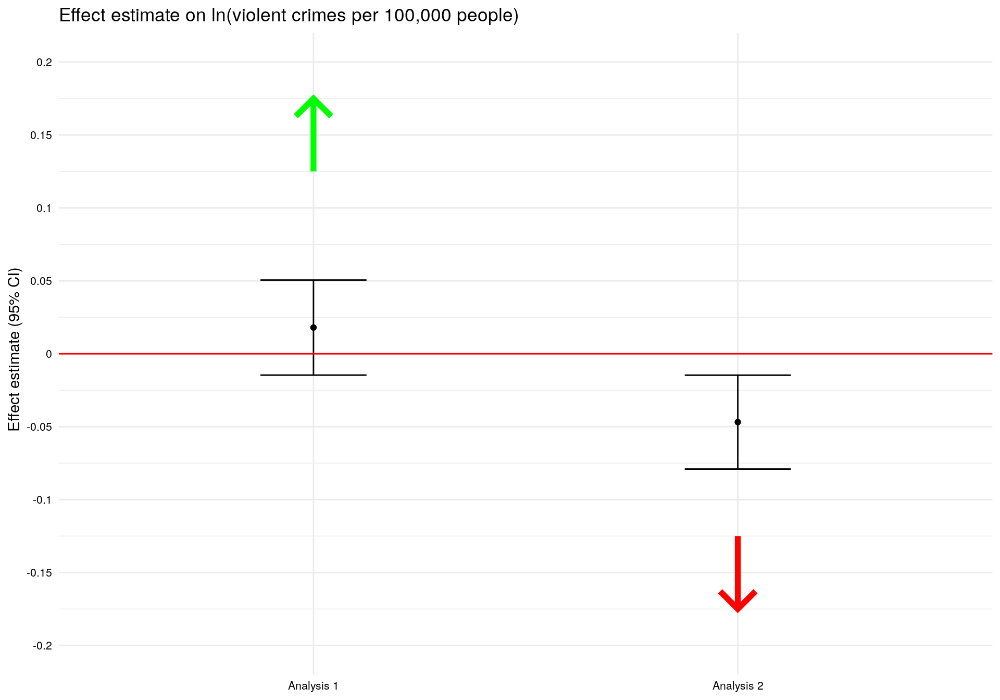</p>
<p>We can see that the confidence interval from analysis 1 is mostly
covering positive values, while the entire confidence interval is
negative for analysis 2.</p>
</div>
</div>
<div id="multicollinearity-analysis" class="section level1">
<h1><strong>Multicollinearity analysis</strong></h1>
<hr />
<p>How did the above happen?</p>
<p>The analysis data frames are very similar yet yielded very different
results.</p>
<p>Recall that the only difference between the two models is the number
of demographic variables included as covariates. The number of rows or
observations is the same, as are the outcome and the other covariates
included in the model. We can use the base R <code>all.equal()</code>
function to compare the Donohue-like data and our Mustard and Lott-like
data.</p>
<div class="sourceCode" id="cb40"><pre class="sourceCode r"><code class="sourceCode r"><span id="cb40-1"><a href="#cb40-1" tabindex="-1"></a><span class="fu">all.equal</span>(DONOHUE_DF, LOTT_DF)</span></code></pre></div>
<pre><code> [1] &quot;Names: 18 string mismatches&quot;                        
 [2] &quot;Length mismatch: comparison on first 20 components&quot; 
 [3] &quot;Component 3: Mean relative difference: 0.9313412&quot;   
 [4] &quot;Component 4: Mean relative difference: 0.4289548&quot;   
 [5] &quot;Component 5: Mean relative difference: 3.465636&quot;    
 [6] &quot;Component 6: Mean relative difference: 1.10469&quot;     
 [7] &quot;Component 7: Mean relative difference: 0.8265841&quot;   
 [8] &quot;Component 8: Mean relative difference: 0.9519668&quot;   
 [9] &quot;Component 9: Mean relative difference: 0.8307082&quot;   
[10] &quot;Component 10: Mean relative difference: 0.9304344&quot;  
[11] &quot;Component 11: Mean relative difference: 0.9999746&quot;  
[12] &quot;Component 12: Mean relative difference: 0.9999999&quot;  
[13] &quot;Component 13: Mean relative difference: 0.9980269&quot;  
[14] &quot;Component 14: Mean absolute difference: Inf&quot;        
[15] &quot;Component 15: Modes: logical, numeric&quot;              
[16] &quot;Component 15: target is logical, current is numeric&quot;
[17] &quot;Component 16: Mean relative difference: 0.9997537&quot;  
[18] &quot;Component 17: Mean relative difference: 0.9997657&quot;  
[19] &quot;Component 18: Mean relative difference: 0.9407747&quot;  
[20] &quot;Component 19: Mean relative difference: 0.8865829&quot;  
[21] &quot;Component 20: Mean relative difference: 0.983792&quot;   </code></pre>
<p>The only difference between the two data frames rests in how the
demographic variables were parameterized.</p>
<div class="sourceCode" id="cb42"><pre class="sourceCode r"><code class="sourceCode r"><span id="cb42-1"><a href="#cb42-1" tabindex="-1"></a>DONOHUE_DF <span class="sc">%&gt;%</span></span>
<span id="cb42-2"><a href="#cb42-2" tabindex="-1"></a>  dplyr<span class="sc">::</span><span class="fu">select</span>(<span class="fu">contains</span>(<span class="st">&quot;years&quot;</span>)) <span class="sc">%&gt;%</span></span>
<span id="cb42-3"><a href="#cb42-3" tabindex="-1"></a>  <span class="fu">colnames</span>()</span></code></pre></div>
<pre><code>[1] &quot;Black_Male_15_to_19_years&quot; &quot;Black_Male_20_to_39_years&quot;
[3] &quot;Other_Male_15_to_19_years&quot; &quot;Other_Male_20_to_39_years&quot;
[5] &quot;White_Male_15_to_19_years&quot; &quot;White_Male_20_to_39_years&quot;</code></pre>
<div class="sourceCode" id="cb44"><pre class="sourceCode r"><code class="sourceCode r"><span id="cb44-1"><a href="#cb44-1" tabindex="-1"></a>LOTT_DF <span class="sc">%&gt;%</span></span>
<span id="cb44-2"><a href="#cb44-2" tabindex="-1"></a>  dplyr<span class="sc">::</span><span class="fu">select</span>(<span class="fu">contains</span>(<span class="st">&quot;years&quot;</span>)) <span class="sc">%&gt;%</span></span>
<span id="cb44-3"><a href="#cb44-3" tabindex="-1"></a>  <span class="fu">colnames</span>()</span></code></pre></div>
<pre><code> [1] &quot;Black_Female_10_to_19_years&quot;    &quot;Black_Female_20_to_29_years&quot;   
 [3] &quot;Black_Female_30_to_39_years&quot;    &quot;Black_Female_40_to_49_years&quot;   
 [5] &quot;Black_Female_50_to_64_years&quot;    &quot;Black_Female_65_years_and_over&quot;
 [7] &quot;Black_Male_10_to_19_years&quot;      &quot;Black_Male_20_to_29_years&quot;     
 [9] &quot;Black_Male_30_to_39_years&quot;      &quot;Black_Male_40_to_49_years&quot;     
[11] &quot;Black_Male_50_to_64_years&quot;      &quot;Black_Male_65_years_and_over&quot;  
[13] &quot;Other_Female_10_to_19_years&quot;    &quot;Other_Female_20_to_29_years&quot;   
[15] &quot;Other_Female_30_to_39_years&quot;    &quot;Other_Female_40_to_49_years&quot;   
[17] &quot;Other_Female_50_to_64_years&quot;    &quot;Other_Female_65_years_and_over&quot;
[19] &quot;Other_Male_10_to_19_years&quot;      &quot;Other_Male_20_to_29_years&quot;     
[21] &quot;Other_Male_30_to_39_years&quot;      &quot;Other_Male_40_to_49_years&quot;     
[23] &quot;Other_Male_50_to_64_years&quot;      &quot;Other_Male_65_years_and_over&quot;  
[25] &quot;White_Female_10_to_19_years&quot;    &quot;White_Female_20_to_29_years&quot;   
[27] &quot;White_Female_30_to_39_years&quot;    &quot;White_Female_40_to_49_years&quot;   
[29] &quot;White_Female_50_to_64_years&quot;    &quot;White_Female_65_years_and_over&quot;
[31] &quot;White_Male_10_to_19_years&quot;      &quot;White_Male_20_to_29_years&quot;     
[33] &quot;White_Male_30_to_39_years&quot;      &quot;White_Male_40_to_49_years&quot;     
[35] &quot;White_Male_50_to_64_years&quot;      &quot;White_Male_65_years_and_over&quot;  </code></pre>
<p>Clearly, this had an effect on the results of the analysis.</p>
<p>Let’s explore how this occurred.</p>
<p>When seemingly independent variables are highly related to one
another, the relationships estimated in an analysis may be
distorted.</p>
<p>In regression analysis, this distortion is often a by-product of a
violation of the independence assumption. This distortion, if large
enough, can impact statistical inference.</p>
<p>The phenomenon called multicollinearity occurs when independent
variables are highly related to one another.</p>
<p>There are several ways we can diagnose multicollinearity.</p>
<div id="correlation" class="section level3">
<h3><strong>Correlation</strong></h3>
<hr />
<p>One way we can evaluate the relationships between variables is by
examining the correlation between variable pairs.</p>
<style>
div.blue { background-color:#e6f0ff; border-radius: 5px; padding: 20px;}
</style>
<div class="blue">
<p>It is important to note that multicollinearity and correlation are
not the same concept. <a
href="https://www.ncbi.nlm.nih.gov/pmc/articles/PMC5079093/">Correlation</a>
can be thought of as the strength of a linear relationship between
variables in general. On the other hand, we usually use the term
collinearity in the context of a multiple regression model, where two
independent variables are collinear if they have a linear relationship
or association. Multicollinearity can be thought of as collinearity
among multiple (3+) regressors (independent variables) in a regression
analysis, which can occur when regressors are highly correlated.</p>
</div>
<p>According to <a
href="https://en.wikipedia.org/wiki/Multicollinearity"
target="_blank">Wikipedia</a>:</p>
<blockquote>
<p>multicollinearity (also collinearity) is a phenomenon in which one
predictor variable in a multiple regression model can be linearly
predicted from the others with a substantial degree of accuracy.</p>
</blockquote>
<p>Thus collinearity describes linear prediction or association between
variables. Often those variables will be highly correlated.</p>
<p>The issue with this in linear regression, is that linear regression
aims to determine how a one unit change in a regressor influences a one
unit change in the dependent variable. In fact, this is what the
coefficient estimates aim to tell us for each regressor.</p>
<p>However, if our regressors are also linearly related or correlated,
then it becomes difficult to determine the effect of each regressor on
the dependent variable, variable independent of the other regressors,
and multicollinearity can cause instability in our <a
href="https://statisticsbyjim.com/glossary/regression-coefficient/"
target="_blank">coefficient estimates</a>, making them unreliable. In
the presence of multicollinearity, coefficient estimates may be
inflated, deflated, or their signs may change.</p>
<p>For example, say both waist and hip circumference are included as
predictors of BMI in a multiple regression model. As in any multiple
regression model, the coefficient of waist circumference represents the
average change in BMI for a one unit change in waist circumference,
holding the other predictors in the model constant. Since it is not very
meaningful to consider variation in waist circumference while holding
hip circumference constant (as waist and hip circumference are indeed
related to one another), our estimate of this coefficient may be
uncertain.</p>
<p>If you want to read further on this topic, <a
href="https://blog.clairvoyantsoft.com/correlation-and-collinearity-how-they-can-make-or-break-a-model-9135fbe6936a"
target="_blank">here</a> and <a
href="https://medium.com/swlh/multicollinearity-and-variance-inflation-factor-bc74af36b1c9"
target="_blank">here</a> are a couple of interesting discussions.</p>
<p>In the next sections, we will describe ways to detect
multicollinearity in our covariates both using visual displays of data
and using computational techniques.</p>
<div id="scatter-plots" class="section level4">
<h4>Scatter plots</h4>
<p>One of the ways to diagnose multicollinearity in a regression model
is to first see if there are regressors that are highly correlated. If
so, this suggests that we should investigate further to see if these
variables are in fact linearly predicting one another.</p>
<p>One way to look at correlation across pairs of variables is to use
the <code>ggpairs()</code> function of the <code>GGally</code>
package.</p>
<div class="sourceCode" id="cb46"><pre class="sourceCode r"><code class="sourceCode r"><span id="cb46-1"><a href="#cb46-1" tabindex="-1"></a><span class="fu">colnames</span>(DONOHUE_DF)</span></code></pre></div>
<pre><code> [1] &quot;YEAR&quot;                      &quot;STATE&quot;                    
 [3] &quot;Black_Male_15_to_19_years&quot; &quot;Black_Male_20_to_39_years&quot;
 [5] &quot;Other_Male_15_to_19_years&quot; &quot;Other_Male_20_to_39_years&quot;
 [7] &quot;White_Male_15_to_19_years&quot; &quot;White_Male_20_to_39_years&quot;
 [9] &quot;Unemployment_rate&quot;         &quot;Poverty_rate&quot;             
[11] &quot;Viol_crime_count&quot;          &quot;Population&quot;               
[13] &quot;police_per_100k_lag&quot;       &quot;RTC_LAW_YEAR&quot;             
[15] &quot;RTC_LAW&quot;                   &quot;TIME_0&quot;                   
[17] &quot;TIME_INF&quot;                  &quot;Viol_crime_rate_1k&quot;       
[19] &quot;Viol_crime_rate_1k_log&quot;    &quot;Population_log&quot;           </code></pre>
<div class="sourceCode" id="cb48"><pre class="sourceCode r"><code class="sourceCode r"><span id="cb48-1"><a href="#cb48-1" tabindex="-1"></a>DONOHUE_DF <span class="sc">%&gt;%</span></span>
<span id="cb48-2"><a href="#cb48-2" tabindex="-1"></a>  dplyr<span class="sc">::</span><span class="fu">select</span>(</span>
<span id="cb48-3"><a href="#cb48-3" tabindex="-1"></a>    RTC_LAW,</span>
<span id="cb48-4"><a href="#cb48-4" tabindex="-1"></a>    Viol_crime_rate_1k_log,</span>
<span id="cb48-5"><a href="#cb48-5" tabindex="-1"></a>    Unemployment_rate,</span>
<span id="cb48-6"><a href="#cb48-6" tabindex="-1"></a>    Poverty_rate,</span>
<span id="cb48-7"><a href="#cb48-7" tabindex="-1"></a>    Population_log</span>
<span id="cb48-8"><a href="#cb48-8" tabindex="-1"></a>  ) <span class="sc">%&gt;%</span></span>
<span id="cb48-9"><a href="#cb48-9" tabindex="-1"></a>  <span class="fu">ggpairs</span>(.,</span>
<span id="cb48-10"><a href="#cb48-10" tabindex="-1"></a>    <span class="at">columns =</span> <span class="fu">c</span>(<span class="dv">2</span><span class="sc">:</span><span class="dv">5</span>),</span>
<span id="cb48-11"><a href="#cb48-11" tabindex="-1"></a>    <span class="at">lower =</span> <span class="fu">list</span>(<span class="at">continuous =</span> <span class="fu">wrap</span>(<span class="st">&quot;smooth_loess&quot;</span>,</span>
<span id="cb48-12"><a href="#cb48-12" tabindex="-1"></a>      <span class="at">color =</span> <span class="st">&quot;red&quot;</span>,</span>
<span id="cb48-13"><a href="#cb48-13" tabindex="-1"></a>      <span class="at">alpha =</span> <span class="fl">0.5</span>,</span>
<span id="cb48-14"><a href="#cb48-14" tabindex="-1"></a>      <span class="at">size =</span> <span class="fl">0.1</span></span>
<span id="cb48-15"><a href="#cb48-15" tabindex="-1"></a>    ))</span>
<span id="cb48-16"><a href="#cb48-16" tabindex="-1"></a>  )</span></code></pre></div>
<p>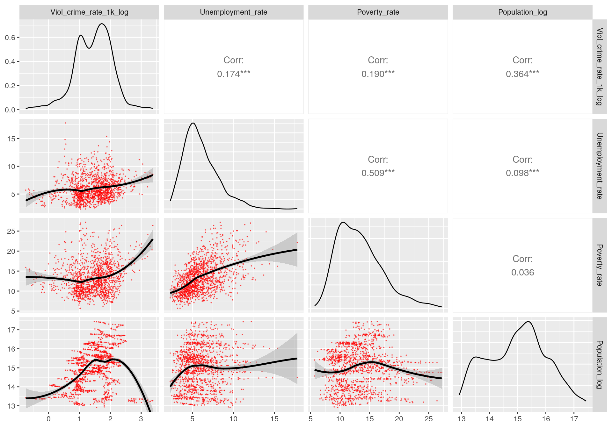
We can see that for the non-demographic variables, there is very little
correlation between the pairs of variables. Only the unemployment rate
and the poverty rate show relatively strong correlation, as one might
expect.</p>
</div>
<div id="heatmaps" class="section level4">
<h4>Heatmaps</h4>
<p>Another way to look at correlation if we have many variables is to
show the strength of correlation between pairs of variables using a
heatmap, where the intensity of the color indicates the strength of the
correlation between two variables.</p>
<p>Let’s do this now for the demographic variables for each
analysis.</p>
<p>The <code>ggcorrplot()</code> function of the
<code>ggpcorrplot</code> package is one way to create such a
heatmap.</p>
<p>As input to the plotting function, we first need to calculate the
correlation values, which we will do using the <code>cor()</code>
function of the <code>stats</code> package.</p>
<p>To label our legend with the Greek letter <span
class="math inline">\(\rho\)</span>, we will use the base
<code>expression()</code> function, which will convert the written form
of <code>"rho"</code> to the Greek letter.</p>
<div class="sourceCode" id="cb49"><pre class="sourceCode r"><code class="sourceCode r"><span id="cb49-1"><a href="#cb49-1" tabindex="-1"></a>cor_DONOHUE_dem <span class="ot">&lt;-</span> <span class="fu">cor</span>(DONOHUE_DF <span class="sc">%&gt;%</span> dplyr<span class="sc">::</span><span class="fu">select</span>(<span class="fu">contains</span>(<span class="st">&quot;_years&quot;</span>)))</span>
<span id="cb49-2"><a href="#cb49-2" tabindex="-1"></a></span>
<span id="cb49-3"><a href="#cb49-3" tabindex="-1"></a>corr_mat_DONOHUE <span class="ot">&lt;-</span> <span class="fu">ggcorrplot</span>(cor_DONOHUE_dem,</span>
<span id="cb49-4"><a href="#cb49-4" tabindex="-1"></a>  <span class="at">tl.cex =</span> <span class="dv">6</span>,</span>
<span id="cb49-5"><a href="#cb49-5" tabindex="-1"></a>  <span class="at">hc.order =</span> <span class="cn">TRUE</span>,</span>
<span id="cb49-6"><a href="#cb49-6" tabindex="-1"></a>  <span class="at">colors =</span> <span class="fu">c</span>(</span>
<span id="cb49-7"><a href="#cb49-7" tabindex="-1"></a>    <span class="st">&quot;red&quot;</span>,</span>
<span id="cb49-8"><a href="#cb49-8" tabindex="-1"></a>    <span class="st">&quot;white&quot;</span>,</span>
<span id="cb49-9"><a href="#cb49-9" tabindex="-1"></a>    <span class="st">&quot;red&quot;</span></span>
<span id="cb49-10"><a href="#cb49-10" tabindex="-1"></a>  ),</span>
<span id="cb49-11"><a href="#cb49-11" tabindex="-1"></a>  <span class="at">outline.color =</span> <span class="st">&quot;transparent&quot;</span>,</span>
<span id="cb49-12"><a href="#cb49-12" tabindex="-1"></a>  <span class="at">title =</span> <span class="st">&quot;Correlation Matrix, Analysis 1&quot;</span>,</span>
<span id="cb49-13"><a href="#cb49-13" tabindex="-1"></a>  <span class="at">legend.title =</span> <span class="fu">expression</span>(rho)</span>
<span id="cb49-14"><a href="#cb49-14" tabindex="-1"></a>)</span>
<span id="cb49-15"><a href="#cb49-15" tabindex="-1"></a></span>
<span id="cb49-16"><a href="#cb49-16" tabindex="-1"></a></span>
<span id="cb49-17"><a href="#cb49-17" tabindex="-1"></a>corr_mat_DONOHUE</span></code></pre></div>
<p>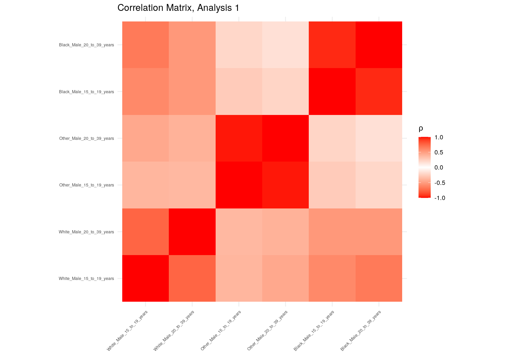</p>
<div class="sourceCode" id="cb50"><pre class="sourceCode r"><code class="sourceCode r"><span id="cb50-1"><a href="#cb50-1" tabindex="-1"></a>cor_LOTT_dem <span class="ot">&lt;-</span> <span class="fu">cor</span>(LOTT_DF <span class="sc">%&gt;%</span> dplyr<span class="sc">::</span><span class="fu">select</span>(<span class="fu">contains</span>(<span class="st">&quot;_years&quot;</span>)))</span>
<span id="cb50-2"><a href="#cb50-2" tabindex="-1"></a></span>
<span id="cb50-3"><a href="#cb50-3" tabindex="-1"></a>corr_mat_LOTT <span class="ot">&lt;-</span> <span class="fu">ggcorrplot</span>(cor_LOTT_dem,</span>
<span id="cb50-4"><a href="#cb50-4" tabindex="-1"></a>  <span class="at">tl.cex =</span> <span class="dv">6</span>,</span>
<span id="cb50-5"><a href="#cb50-5" tabindex="-1"></a>  <span class="at">hc.order =</span> <span class="cn">TRUE</span>,</span>
<span id="cb50-6"><a href="#cb50-6" tabindex="-1"></a>  <span class="at">colors =</span> <span class="fu">c</span>(</span>
<span id="cb50-7"><a href="#cb50-7" tabindex="-1"></a>    <span class="st">&quot;red&quot;</span>,</span>
<span id="cb50-8"><a href="#cb50-8" tabindex="-1"></a>    <span class="st">&quot;white&quot;</span>,</span>
<span id="cb50-9"><a href="#cb50-9" tabindex="-1"></a>    <span class="st">&quot;red&quot;</span></span>
<span id="cb50-10"><a href="#cb50-10" tabindex="-1"></a>  ),</span>
<span id="cb50-11"><a href="#cb50-11" tabindex="-1"></a>  <span class="at">outline.color =</span> <span class="st">&quot;transparent&quot;</span>,</span>
<span id="cb50-12"><a href="#cb50-12" tabindex="-1"></a>  <span class="at">title =</span> <span class="st">&quot;Correlation Matrix, Analysis 2&quot;</span>,</span>
<span id="cb50-13"><a href="#cb50-13" tabindex="-1"></a>  <span class="at">legend.title =</span> <span class="fu">expression</span>(rho)</span>
<span id="cb50-14"><a href="#cb50-14" tabindex="-1"></a>)</span>
<span id="cb50-15"><a href="#cb50-15" tabindex="-1"></a></span>
<span id="cb50-16"><a href="#cb50-16" tabindex="-1"></a>corr_mat_LOTT</span></code></pre></div>
<p>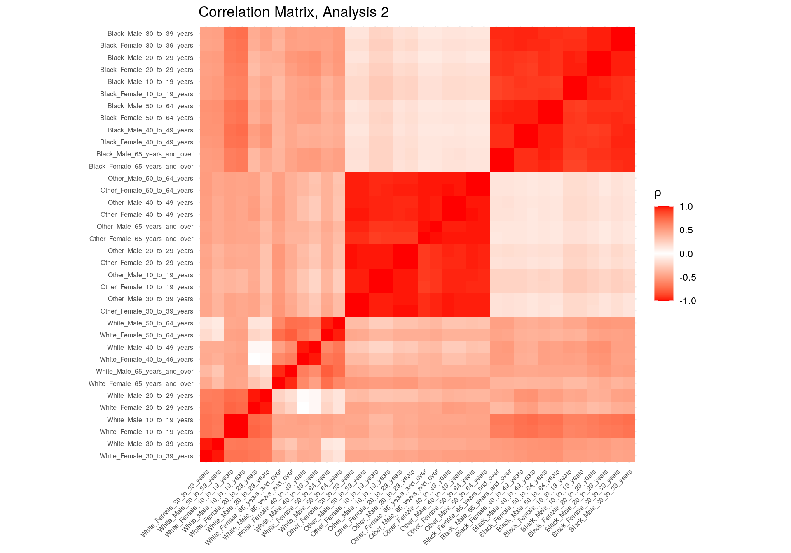
We can see that many of the demographic variables are highly correlated
with one another, either positively or negatively. In this case, the
sign does not matter, in terms of the effect the collinearity could have
on our modeling results.</p>
<p>The presence of correlation between variables suggests that we might
have multicollinearity. However it does not necessarily mean that we do.
So how can we assess this?</p>
</div>
</div>
<div id="coefficient-estimate-instability" class="section level3">
<h3><strong>Coefficient estimate instability</strong></h3>
<hr />
<p>One way to look at the possible influence of multicollinearity is to
look at the stability of the coefficient estimates under perturbations
of the data.</p>
<p>We will focus on the <code>RTC_LAW</code> variable coefficient
estimate, as this is of particular interest in our case.</p>
<p>To do so we will perform a process called <a
href="https://en.wikipedia.org/wiki/Resampling_(statistics)"
target="_blank">resampling</a>. This involves performing multiple
iterations of our analysis, but with only a subset or sub-sample of our
original data. In our case we will remove <strong>one</strong>
observation and see if that changes our coefficient estimate
results.</p>
<p>To do this we will use some functions in the <code>rsample</code>
package which is very useful for splitting data in various ways.</p>
<p>We will use the <code>loo_cv()</code> function which stands for
<strong>leave one out</strong> <a
href="https://en.wikipedia.org/wiki/Cross-validation_%28statistics%29"
target="_blank">cross validation</a>. This will allow us to split our
data into every possible subset where a unique observation is left out
of the data.</p>
<p>This function will however only prepare the data to be split.</p>
<p>To get the remaining data after the removal of the observation that
is left out we will use a function called <code>training()</code>. These
function names arise from the fact that these functions are often used
for in machine learning applications where the data is split between a
larger training set and a smaller testing set. Thus we want the larger
<span class="math inline">\(n-1\)</span> subset, as opposed to the
single value that is removed, (which we could get with the
<code>testing()</code> function).</p>
<hr />
<details>
<summary>
Click here to see an example of how this works.
</summary>
<p>First we will make a toy dataset that is very simple called
<code>test</code> using the <code>tibble()</code> function of the
<code>tibble</code> package:</p>
<div class="sourceCode" id="cb51"><pre class="sourceCode r"><code class="sourceCode r"><span id="cb51-1"><a href="#cb51-1" tabindex="-1"></a>test <span class="ot">&lt;-</span> tibble<span class="sc">::</span><span class="fu">tibble</span>(<span class="at">x =</span> <span class="fu">c</span>(<span class="dv">1</span>, <span class="dv">2</span>, <span class="dv">3</span>))</span>
<span id="cb51-2"><a href="#cb51-2" tabindex="-1"></a>test</span></code></pre></div>
<pre><code># A tibble: 3 × 1
      x
  &lt;dbl&gt;
1     1
2     2
3     3</code></pre>
<p>Now we will use the <code>loo_cv()</code> to create leave one out
splits:</p>
<div class="sourceCode" id="cb53"><pre class="sourceCode r"><code class="sourceCode r"><span id="cb53-1"><a href="#cb53-1" tabindex="-1"></a>test_samples <span class="ot">&lt;-</span> test <span class="sc">%&gt;%</span> rsample<span class="sc">::</span><span class="fu">loo_cv</span>()</span>
<span id="cb53-2"><a href="#cb53-2" tabindex="-1"></a>test_samples</span></code></pre></div>
<pre><code># Leave-one-out cross-validation 
# A tibble: 3 × 2
  splits        id       
  &lt;list&gt;        &lt;chr&gt;    
1 &lt;split [2/1]&gt; Resample1
2 &lt;split [2/1]&gt; Resample2
3 &lt;split [2/1]&gt; Resample3</code></pre>
<p>We can take a look at a single split of the data using the
<code>pull()</code> function:</p>
<div class="sourceCode" id="cb55"><pre class="sourceCode r"><code class="sourceCode r"><span id="cb55-1"><a href="#cb55-1" tabindex="-1"></a><span class="fu">pull</span>(test_samples, splits)</span></code></pre></div>
<pre><code>[[1]]
&lt;Analysis/Assess/Total&gt;
&lt;2/1/3&gt;

[[2]]
&lt;Analysis/Assess/Total&gt;
&lt;2/1/3&gt;

[[3]]
&lt;Analysis/Assess/Total&gt;
&lt;2/1/3&gt;</code></pre>
<p>Here you can see that 2 values are intended for the training set
(also called Analysis set), 1 value is intended for the testing set
(also called Assessment set), and 3 values were present initially.</p>
<p>Now we will use the <code>training()</code> function to get the data
without the observation that is set aside. Here is the data for the
first subset:</p>
<div class="sourceCode" id="cb57"><pre class="sourceCode r"><code class="sourceCode r"><span id="cb57-1"><a href="#cb57-1" tabindex="-1"></a>rsample<span class="sc">::</span><span class="fu">training</span>(<span class="fu">pull</span>(test_samples, splits)[[<span class="dv">1</span>]])</span></code></pre></div>
<pre><code># A tibble: 2 × 1
      x
  &lt;dbl&gt;
1     1
2     3</code></pre>
<p>Now we will use the <code>map()</code> function of <code>purrr</code>
to get all possible <code>training</code> subset of the data.</p>
<div class="sourceCode" id="cb59"><pre class="sourceCode r"><code class="sourceCode r"><span id="cb59-1"><a href="#cb59-1" tabindex="-1"></a>test_subsets <span class="ot">&lt;-</span> <span class="fu">map</span>(<span class="fu">pull</span>(test_samples, splits), training)</span>
<span id="cb59-2"><a href="#cb59-2" tabindex="-1"></a>test_subsets</span></code></pre></div>
<pre><code>[[1]]
# A tibble: 2 × 1
      x
  &lt;dbl&gt;
1     1
2     3

[[2]]
# A tibble: 2 × 1
      x
  &lt;dbl&gt;
1     2
2     3

[[3]]
# A tibble: 2 × 1
      x
  &lt;dbl&gt;
1     1
2     2</code></pre>
<p>We can see that there are 3 possible subsets that leave one value
out. All 3 possible subsets are created using this method. This method
will always create the same number of subsets as there are unique values
or rows in the data.</p>
</details>
<hr />
<p>Now we will use this method with the data from our Donohue-like
analysis, and since this data has 1395 rows, 1395 subsets will be
created that leave out one row. The idea is to fit our panel regression
model on each subset of the data, and then examine how the coefficient
estimates from each of these model fits vary as the sample changes
slightly. With collinear predictors, we expect that our coefficient
estimates may be unstable and subject to change under even small
perturbations of the data.</p>
<p>First we will create the splits using the <code>loo_cv()</code>
function. This will ultimately make all unique possible subsets leaving
one sample out - however the choice of which sample is left for which
iteration is a random process (maybe the 12th is left out first then the
3rd etc.). Thus, we use the <code>set.seed()</code> function to ensure
reproducibility of the results when we take a look at the first subset,
so that it will be the same for everyone who looks at this case study.
You can change the seed to play around with this.</p>
<div class="sourceCode" id="cb61"><pre class="sourceCode r"><code class="sourceCode r"><span id="cb61-1"><a href="#cb61-1" tabindex="-1"></a><span class="fu">set.seed</span>(<span class="dv">124</span>)</span>
<span id="cb61-2"><a href="#cb61-2" tabindex="-1"></a>DONOHUE_splits <span class="ot">&lt;-</span> d_panel_DONOHUE <span class="sc">%&gt;%</span> <span class="fu">loo_cv</span>()</span>
<span id="cb61-3"><a href="#cb61-3" tabindex="-1"></a>DONOHUE_splits</span></code></pre></div>
<pre><code># Leave-one-out cross-validation 
# A tibble: 1,395 × 2
   splits           id        
   &lt;list&gt;           &lt;chr&gt;     
 1 &lt;split [1394/1]&gt; Resample1 
 2 &lt;split [1394/1]&gt; Resample2 
 3 &lt;split [1394/1]&gt; Resample3 
 4 &lt;split [1394/1]&gt; Resample4 
 5 &lt;split [1394/1]&gt; Resample5 
 6 &lt;split [1394/1]&gt; Resample6 
 7 &lt;split [1394/1]&gt; Resample7 
 8 &lt;split [1394/1]&gt; Resample8 
 9 &lt;split [1394/1]&gt; Resample9 
10 &lt;split [1394/1]&gt; Resample10
# ℹ 1,385 more rows</code></pre>
<p>Now we will use the <code>training()</code> function to select the
remaining data without the value that was removed for each split:</p>
<div class="sourceCode" id="cb63"><pre class="sourceCode r"><code class="sourceCode r"><span id="cb63-1"><a href="#cb63-1" tabindex="-1"></a><span class="co"># To get all the data subsets</span></span>
<span id="cb63-2"><a href="#cb63-2" tabindex="-1"></a>DONOHUE_subsets <span class="ot">&lt;-</span> <span class="fu">map</span>(<span class="fu">pull</span>(DONOHUE_splits, splits), training)</span>
<span id="cb63-3"><a href="#cb63-3" tabindex="-1"></a></span>
<span id="cb63-4"><a href="#cb63-4" tabindex="-1"></a><span class="fu">glimpse</span>(DONOHUE_subsets[[<span class="dv">1</span>]])</span></code></pre></div>
<pre><code>Rows: 1,394
Columns: 20
$ YEAR                      &lt;fct&gt; 1980, 1981, 1982, 1983, 1984, 1985, 1986, 19…
$ STATE                     &lt;fct&gt; Alaska, Alaska, Alaska, Alaska, Alaska, Alas…
$ Black_Male_15_to_19_years &lt;pseries&gt; 0.1670456, 0.1732299, 0.1737069, 0.17095…
$ Black_Male_20_to_39_years &lt;pseries&gt; 0.9933775, 1.0028219, 1.0204445, 1.03127…
$ Other_Male_15_to_19_years &lt;pseries&gt; 1.1297816, 1.1244412, 1.0698208, 0.98828…
$ Other_Male_20_to_39_years &lt;pseries&gt; 2.963329, 2.974775, 3.015071, 3.008048, …
$ White_Male_15_to_19_years &lt;pseries&gt; 3.627805, 3.558261, 3.391844, 3.222002, …
$ White_Male_20_to_39_years &lt;pseries&gt; 18.28852, 18.12821, 18.10666, 17.90600, …
$ Unemployment_rate         &lt;pseries&gt; 9.6, 9.4, 9.9, 9.9, 9.8, 9.7, 10.9, 10.3…
$ Poverty_rate              &lt;pseries&gt; 9.6, 9.0, 10.6, 12.6, 9.6, 8.7, 11.4, 12…
$ Viol_crime_count          &lt;pseries&gt; 1919, 2537, 2732, 2940, 3108, 3031, 3046…
$ Population                &lt;pseries&gt; 404680, 418519, 449608, 488423, 513697, …
$ police_per_100k_lag       &lt;pseries&gt; 194.7218, 200.2299, 191.0553, 364.2335, …
$ RTC_LAW_YEAR              &lt;pseries&gt; 1995, 1995, 1995, 1995, 1995, 1995, 1995…
$ RTC_LAW                   &lt;pseries&gt; FALSE, FALSE, FALSE, FALSE, FALSE, FALSE…
$ TIME_0                    &lt;pseries&gt; 1980, 1980, 1980, 1980, 1980, 1980, 1980…
$ TIME_INF                  &lt;pseries&gt; 2010, 2010, 2010, 2010, 2010, 2010, 2010…
$ Viol_crime_rate_1k        &lt;pseries&gt; 4.742018, 6.061851, 6.076404, 6.019373, …
$ Viol_crime_rate_1k_log    &lt;pseries&gt; 1.556463, 1.802015, 1.804413, 1.794983, …
$ Population_log            &lt;pseries&gt; 12.91085, 12.94448, 13.01613, 13.09894, …</code></pre>
<div class="sourceCode" id="cb65"><pre class="sourceCode r"><code class="sourceCode r"><span id="cb65-1"><a href="#cb65-1" tabindex="-1"></a><span class="fu">length</span>(DONOHUE_subsets)</span></code></pre></div>
<pre><code>[1] 1395</code></pre>
<p>As expected the first subset has 1394 rows and there are 1395
subsets.</p>
<p>Let’s see what observation was left out in the first subset:</p>
<div class="sourceCode" id="cb67"><pre class="sourceCode r"><code class="sourceCode r"><span id="cb67-1"><a href="#cb67-1" tabindex="-1"></a>d_panel_DONOHUE <span class="sc">%&gt;%</span></span>
<span id="cb67-2"><a href="#cb67-2" tabindex="-1"></a>  <span class="fu">filter</span>(<span class="sc">!</span><span class="fu">rownames</span>(d_panel_DONOHUE) <span class="sc">%in%</span> <span class="fu">rownames</span>(DONOHUE_subsets[[<span class="dv">1</span>]]))</span></code></pre></div>
<pre><code>           YEAR STATE Black_Male_15_to_19_years Black_Male_20_to_39_years
Texas-1988 1988 Texas                 0.5599219                  2.091018
           Other_Male_15_to_19_years Other_Male_20_to_39_years
Texas-1988                0.09824717                 0.4413413
           White_Male_15_to_19_years White_Male_20_to_39_years
Texas-1988                  3.447339                  14.79001
           Unemployment_rate Poverty_rate Viol_crime_count Population
Texas-1988               7.3           18           109499   16667146
           police_per_100k_lag RTC_LAW_YEAR RTC_LAW TIME_0 TIME_INF
Texas-1988            298.2274         1996   FALSE   1980     2010
           Viol_crime_rate_1k Viol_crime_rate_1k_log Population_log
Texas-1988           6.569751               1.882476       16.62895</code></pre>
<div class="sourceCode" id="cb69"><pre class="sourceCode r"><code class="sourceCode r"><span id="cb69-1"><a href="#cb69-1" tabindex="-1"></a><span class="co"># Another way to check is to use:</span></span>
<span id="cb69-2"><a href="#cb69-2" tabindex="-1"></a>DONOHUE_removed <span class="ot">&lt;-</span> <span class="fu">map</span>(<span class="fu">pull</span>(DONOHUE_splits, splits), testing)</span>
<span id="cb69-3"><a href="#cb69-3" tabindex="-1"></a></span>
<span id="cb69-4"><a href="#cb69-4" tabindex="-1"></a>DONOHUE_removed[[<span class="dv">1</span>]]</span></code></pre></div>
<pre><code>           YEAR STATE Black_Male_15_to_19_years Black_Male_20_to_39_years
Texas-1988 1988 Texas                 0.5599219                  2.091018
           Other_Male_15_to_19_years Other_Male_20_to_39_years
Texas-1988                0.09824717                 0.4413413
           White_Male_15_to_19_years White_Male_20_to_39_years
Texas-1988                  3.447339                  14.79001
           Unemployment_rate Poverty_rate Viol_crime_count Population
Texas-1988               7.3           18           109499   16667146
           police_per_100k_lag RTC_LAW_YEAR RTC_LAW TIME_0 TIME_INF
Texas-1988            298.2274         1996   FALSE   1980     2010
           Viol_crime_rate_1k Viol_crime_rate_1k_log Population_log
Texas-1988           6.569751               1.882476       16.62895</code></pre>
<p>It looks like the Texas data from 1988 was removed from the first
split. Again, if you try different seeds you will see a different sample
removed from the first split.</p>
<p>OK, so now let’s fit our panel regression on the first subset of data
like we did previously. Note that this causes our data to be an
<strong>unbalanced</strong> panel. This does not require any adjustment
to the code to model the data, but you will notice that the output will
now say “unbalanced”.</p>
<div class="sourceCode" id="cb71"><pre class="sourceCode r"><code class="sourceCode r"><span id="cb71-1"><a href="#cb71-1" tabindex="-1"></a>subset_1_result <span class="ot">&lt;-</span> <span class="fu">plm</span>(Viol_crime_rate_1k_log <span class="sc">~</span></span>
<span id="cb71-2"><a href="#cb71-2" tabindex="-1"></a>RTC_LAW <span class="sc">+</span></span>
<span id="cb71-3"><a href="#cb71-3" tabindex="-1"></a>  White_Male_15_to_19_years <span class="sc">+</span></span>
<span id="cb71-4"><a href="#cb71-4" tabindex="-1"></a>  White_Male_20_to_39_years <span class="sc">+</span></span>
<span id="cb71-5"><a href="#cb71-5" tabindex="-1"></a>  Black_Male_15_to_19_years <span class="sc">+</span></span>
<span id="cb71-6"><a href="#cb71-6" tabindex="-1"></a>  Black_Male_20_to_39_years <span class="sc">+</span></span>
<span id="cb71-7"><a href="#cb71-7" tabindex="-1"></a>  Other_Male_15_to_19_years <span class="sc">+</span></span>
<span id="cb71-8"><a href="#cb71-8" tabindex="-1"></a>  Other_Male_20_to_39_years <span class="sc">+</span></span>
<span id="cb71-9"><a href="#cb71-9" tabindex="-1"></a>  Unemployment_rate <span class="sc">+</span></span>
<span id="cb71-10"><a href="#cb71-10" tabindex="-1"></a>  Poverty_rate <span class="sc">+</span></span>
<span id="cb71-11"><a href="#cb71-11" tabindex="-1"></a>  Population_log <span class="sc">+</span></span>
<span id="cb71-12"><a href="#cb71-12" tabindex="-1"></a>  police_per_100k_lag,</span>
<span id="cb71-13"><a href="#cb71-13" tabindex="-1"></a><span class="at">data =</span> <span class="fu">data.frame</span>(DONOHUE_subsets[[<span class="dv">1</span>]]),</span>
<span id="cb71-14"><a href="#cb71-14" tabindex="-1"></a><span class="at">index =</span> <span class="fu">c</span>(<span class="st">&quot;STATE&quot;</span>, <span class="st">&quot;YEAR&quot;</span>),</span>
<span id="cb71-15"><a href="#cb71-15" tabindex="-1"></a><span class="at">model =</span> <span class="st">&quot;within&quot;</span>,</span>
<span id="cb71-16"><a href="#cb71-16" tabindex="-1"></a><span class="at">effect =</span> <span class="st">&quot;twoways&quot;</span></span>
<span id="cb71-17"><a href="#cb71-17" tabindex="-1"></a>)</span>
<span id="cb71-18"><a href="#cb71-18" tabindex="-1"></a><span class="fu">summary</span>(subset_1_result)</span></code></pre></div>
<pre><code>Twoways effects Within Model

Call:
plm(formula = Viol_crime_rate_1k_log ~ RTC_LAW + White_Male_15_to_19_years + 
    White_Male_20_to_39_years + Black_Male_15_to_19_years + Black_Male_20_to_39_years + 
    Other_Male_15_to_19_years + Other_Male_20_to_39_years + Unemployment_rate + 
    Poverty_rate + Population_log + police_per_100k_lag, data = data.frame(DONOHUE_subsets[[1]]), 
    effect = &quot;twoways&quot;, model = &quot;within&quot;, index = c(&quot;STATE&quot;, 
        &quot;YEAR&quot;))

Unbalanced Panel: n = 45, T = 30-31, N = 1394

Residuals:
      Min.    1st Qu.     Median    3rd Qu.       Max. 
-0.5795659 -0.0893732 -0.0014097  0.0865870  1.1118927 

Coefficients:
                             Estimate  Std. Error t-value  Pr(&gt;|t|)    
RTC_LAWTRUE                0.01812436  0.01664364  1.0890 0.2763694    
White_Male_15_to_19_years -0.00103284  0.02724763 -0.0379 0.9697687    
White_Male_20_to_39_years  0.03462260  0.00973037  3.5582 0.0003868 ***
Black_Male_15_to_19_years -0.05699742  0.05747236 -0.9917 0.3215097    
Black_Male_20_to_39_years  0.12591876  0.01931901  6.5179 1.016e-10 ***
Other_Male_15_to_19_years  0.69114956  0.11325143  6.1028 1.371e-09 ***
Other_Male_20_to_39_years -0.30242747  0.03812860 -7.9318 4.603e-15 ***
Unemployment_rate         -0.01698131  0.00490345 -3.4631 0.0005512 ***
Poverty_rate              -0.00782727  0.00295795 -2.6462 0.0082384 ** 
Population_log            -0.17899715  0.06044257 -2.9614 0.0031173 ** 
police_per_100k_lag        0.00060326  0.00013692  4.4058 1.140e-05 ***
---
Signif. codes:  0 &#39;***&#39; 0.001 &#39;**&#39; 0.01 &#39;*&#39; 0.05 &#39;.&#39; 0.1 &#39; &#39; 1

Total Sum of Squares:    43.198
Residual Sum of Squares: 36.701
R-Squared:      0.15039
Adj. R-Squared: 0.095183
F-statistic: 21.0489 on 11 and 1308 DF, p-value: &lt; 2.22e-16</code></pre>
<p>Indeed, we can see that now we have an unbalanced panel with N = 1394
observations instead of 1395, as expected.</p>
<p>Now that we have our subsets, we want to write a function to fit a
panel regression using <code>plm()</code>on each subset. See <a
href="https://www.opencasestudies.org/ocs-bp-vaping-case-study/"
target="_blank">this case study</a> for more information on writing
functions.</p>
<div class="sourceCode" id="cb73"><pre class="sourceCode r"><code class="sourceCode r"><span id="cb73-1"><a href="#cb73-1" tabindex="-1"></a>fit_nls_on_bootstrap_DONOHUE <span class="ot">&lt;-</span> <span class="cf">function</span>(subset) {</span>
<span id="cb73-2"><a href="#cb73-2" tabindex="-1"></a>  <span class="fu">plm</span>(Viol_crime_rate_1k_log <span class="sc">~</span></span>
<span id="cb73-3"><a href="#cb73-3" tabindex="-1"></a>  RTC_LAW <span class="sc">+</span></span>
<span id="cb73-4"><a href="#cb73-4" tabindex="-1"></a>    White_Male_15_to_19_years <span class="sc">+</span></span>
<span id="cb73-5"><a href="#cb73-5" tabindex="-1"></a>    White_Male_20_to_39_years <span class="sc">+</span></span>
<span id="cb73-6"><a href="#cb73-6" tabindex="-1"></a>    Black_Male_15_to_19_years <span class="sc">+</span></span>
<span id="cb73-7"><a href="#cb73-7" tabindex="-1"></a>    Black_Male_20_to_39_years <span class="sc">+</span></span>
<span id="cb73-8"><a href="#cb73-8" tabindex="-1"></a>    Other_Male_15_to_19_years <span class="sc">+</span></span>
<span id="cb73-9"><a href="#cb73-9" tabindex="-1"></a>    Other_Male_20_to_39_years <span class="sc">+</span></span>
<span id="cb73-10"><a href="#cb73-10" tabindex="-1"></a>    Unemployment_rate <span class="sc">+</span></span>
<span id="cb73-11"><a href="#cb73-11" tabindex="-1"></a>    Poverty_rate <span class="sc">+</span></span>
<span id="cb73-12"><a href="#cb73-12" tabindex="-1"></a>    Population_log <span class="sc">+</span></span>
<span id="cb73-13"><a href="#cb73-13" tabindex="-1"></a>    police_per_100k_lag,</span>
<span id="cb73-14"><a href="#cb73-14" tabindex="-1"></a>  <span class="at">data =</span> <span class="fu">data.frame</span>(subset),</span>
<span id="cb73-15"><a href="#cb73-15" tabindex="-1"></a>  <span class="at">index =</span> <span class="fu">c</span>(<span class="st">&quot;STATE&quot;</span>, <span class="st">&quot;YEAR&quot;</span>),</span>
<span id="cb73-16"><a href="#cb73-16" tabindex="-1"></a>  <span class="at">model =</span> <span class="st">&quot;within&quot;</span>,</span>
<span id="cb73-17"><a href="#cb73-17" tabindex="-1"></a>  <span class="at">effect =</span> <span class="st">&quot;twoways&quot;</span></span>
<span id="cb73-18"><a href="#cb73-18" tabindex="-1"></a>  )</span>
<span id="cb73-19"><a href="#cb73-19" tabindex="-1"></a>}</span></code></pre></div>
<p>Now we can apply this function to each of our subsets simultaneously
using the <code>map()</code> function of the <code>purrr</code>
package.</p>
<div class="sourceCode" id="cb74"><pre class="sourceCode r"><code class="sourceCode r"><span id="cb74-1"><a href="#cb74-1" tabindex="-1"></a>subsets_models_DONOHUE <span class="ot">&lt;-</span> <span class="fu">map</span>(DONOHUE_subsets, fit_nls_on_bootstrap_DONOHUE)</span>
<span id="cb74-2"><a href="#cb74-2" tabindex="-1"></a></span>
<span id="cb74-3"><a href="#cb74-3" tabindex="-1"></a>subsets_models_DONOHUE <span class="ot">&lt;-</span> subsets_models_DONOHUE <span class="sc">%&gt;%</span></span>
<span id="cb74-4"><a href="#cb74-4" tabindex="-1"></a>  <span class="fu">map</span>(tidy)</span></code></pre></div>
<p>We will save this data in our <code>data</code> directory within a
subdirectory called <code>wrangled</code> like so:</p>
<div class="sourceCode" id="cb75"><pre class="sourceCode r"><code class="sourceCode r"><span id="cb75-1"><a href="#cb75-1" tabindex="-1"></a><span class="fu">save</span>(subsets_models_DONOHUE,</span>
<span id="cb75-2"><a href="#cb75-2" tabindex="-1"></a>  <span class="at">file =</span> here<span class="sc">::</span><span class="fu">here</span>(<span class="st">&quot;data&quot;</span>, <span class="st">&quot;wrangled&quot;</span>, <span class="st">&quot;DONOHUE_simulations.rda&quot;</span>)</span>
<span id="cb75-3"><a href="#cb75-3" tabindex="-1"></a>)</span></code></pre></div>
<p>If you have trouble with the previous step you can load the data like
so:</p>
<div class="sourceCode" id="cb76"><pre class="sourceCode r"><code class="sourceCode r"><span id="cb76-1"><a href="#cb76-1" tabindex="-1"></a><span class="fu">load</span>(here<span class="sc">::</span><span class="fu">here</span>(<span class="st">&quot;data&quot;</span>, <span class="st">&quot;wrangled&quot;</span>, <span class="st">&quot;DONOHUE_simulations.rda&quot;</span>))</span></code></pre></div>
<p>Great! Now we want to do the same thing for the Mustard and Lott
data.</p>
<div class="sourceCode" id="cb77"><pre class="sourceCode r"><code class="sourceCode r"><span id="cb77-1"><a href="#cb77-1" tabindex="-1"></a><span class="fu">set.seed</span>(<span class="dv">124</span>)</span>
<span id="cb77-2"><a href="#cb77-2" tabindex="-1"></a>LOTT_splits <span class="ot">&lt;-</span> d_panel_LOTT <span class="sc">%&gt;%</span> <span class="fu">loo_cv</span>()</span>
<span id="cb77-3"><a href="#cb77-3" tabindex="-1"></a></span>
<span id="cb77-4"><a href="#cb77-4" tabindex="-1"></a><span class="co"># To get all the data subsets:</span></span>
<span id="cb77-5"><a href="#cb77-5" tabindex="-1"></a>LOTT_subsets <span class="ot">&lt;-</span> <span class="fu">map</span>(<span class="fu">pull</span>(LOTT_splits, splits), training)</span></code></pre></div>
<p>We need to create a different function to fit the data to account for
the larger number of demographic variables. We will use the formula that
we made previously.</p>
<div class="sourceCode" id="cb78"><pre class="sourceCode r"><code class="sourceCode r"><span id="cb78-1"><a href="#cb78-1" tabindex="-1"></a>fit_nls_on_bootstrap_LOTT <span class="ot">&lt;-</span> <span class="cf">function</span>(split) {</span>
<span id="cb78-2"><a href="#cb78-2" tabindex="-1"></a>  <span class="fu">plm</span>(LOTT_fmla,</span>
<span id="cb78-3"><a href="#cb78-3" tabindex="-1"></a>    <span class="at">data =</span> <span class="fu">data.frame</span>(split),</span>
<span id="cb78-4"><a href="#cb78-4" tabindex="-1"></a>    <span class="at">index =</span> <span class="fu">c</span>(<span class="st">&quot;STATE&quot;</span>, <span class="st">&quot;YEAR&quot;</span>),</span>
<span id="cb78-5"><a href="#cb78-5" tabindex="-1"></a>    <span class="at">model =</span> <span class="st">&quot;within&quot;</span>,</span>
<span id="cb78-6"><a href="#cb78-6" tabindex="-1"></a>    <span class="at">effect =</span> <span class="st">&quot;twoways&quot;</span></span>
<span id="cb78-7"><a href="#cb78-7" tabindex="-1"></a>  )</span>
<span id="cb78-8"><a href="#cb78-8" tabindex="-1"></a>}</span></code></pre></div>
<div class="sourceCode" id="cb79"><pre class="sourceCode r"><code class="sourceCode r"><span id="cb79-1"><a href="#cb79-1" tabindex="-1"></a>subsets_models_LOTT <span class="ot">&lt;-</span> <span class="fu">map</span>(LOTT_subsets, fit_nls_on_bootstrap_LOTT)</span>
<span id="cb79-2"><a href="#cb79-2" tabindex="-1"></a></span>
<span id="cb79-3"><a href="#cb79-3" tabindex="-1"></a>subsets_models_LOTT <span class="ot">&lt;-</span> subsets_models_LOTT <span class="sc">%&gt;%</span></span>
<span id="cb79-4"><a href="#cb79-4" tabindex="-1"></a>  <span class="fu">map</span>(tidy)</span></code></pre></div>
<p>Again we will save this in the <code>wrangled</code> subdirectory of
our <code>data</code> directory:</p>
<div class="sourceCode" id="cb80"><pre class="sourceCode r"><code class="sourceCode r"><span id="cb80-1"><a href="#cb80-1" tabindex="-1"></a><span class="fu">save</span>(subsets_models_LOTT,</span>
<span id="cb80-2"><a href="#cb80-2" tabindex="-1"></a>  <span class="at">file =</span> here<span class="sc">::</span><span class="fu">here</span>(<span class="st">&quot;data&quot;</span>, <span class="st">&quot;wrangled&quot;</span>, <span class="st">&quot;LOTT_simulations.rda&quot;</span>)</span>
<span id="cb80-3"><a href="#cb80-3" tabindex="-1"></a>)</span></code></pre></div>
<p>If you have trouble with the previous steps you can load this data
like so:</p>
<div class="sourceCode" id="cb81"><pre class="sourceCode r"><code class="sourceCode r"><span id="cb81-1"><a href="#cb81-1" tabindex="-1"></a><span class="fu">load</span>(here<span class="sc">::</span><span class="fu">here</span>(<span class="st">&quot;data&quot;</span>, <span class="st">&quot;wrangled&quot;</span>, <span class="st">&quot;LOTT_simulations.rda&quot;</span>))</span></code></pre></div>
<p>Now we will combine the output so that we can make a plot to
visualize the results that we obtained, i.e., to look at how the
variation in our coefficient estimates across data subsets varies
between the Donohue and the Lott and Mustard models. First let’s name
each subset that we created.</p>
<div class="sourceCode" id="cb82"><pre class="sourceCode r"><code class="sourceCode r"><span id="cb82-1"><a href="#cb82-1" tabindex="-1"></a><span class="fu">names</span>(subsets_models_DONOHUE) <span class="ot">&lt;-</span> <span class="fu">paste0</span>(<span class="st">&quot;DONOHUE_&quot;</span>, <span class="fu">seq_len</span>(<span class="fu">length</span>(subsets_models_DONOHUE)))</span>
<span id="cb82-2"><a href="#cb82-2" tabindex="-1"></a></span>
<span id="cb82-3"><a href="#cb82-3" tabindex="-1"></a><span class="fu">names</span>(subsets_models_LOTT) <span class="ot">&lt;-</span></span>
<span id="cb82-4"><a href="#cb82-4" tabindex="-1"></a>  <span class="fu">paste0</span>(<span class="st">&quot;LOTT_&quot;</span>, <span class="dv">1</span><span class="sc">:</span><span class="fu">length</span>(subsets_models_LOTT))</span></code></pre></div>
<p>Now we can combine the tibbles within the list of tibbles for the
<code>subsets_models_DONOHUE</code> and <code>subsets_models_LOTT</code>
data.</p>
<p>To do this we will use the <code>bind_rows()</code> function of the
<code>dplyr</code> package with the <code>.id = "ID"</code> argument,
which will create a new variable called <code>ID</code> that will list
the name of the tibble the data came from.</p>
<p>Then we will combine the data from both the Donohue and Lott
simulations.</p>
<div class="sourceCode" id="cb83"><pre class="sourceCode r"><code class="sourceCode r"><span id="cb83-1"><a href="#cb83-1" tabindex="-1"></a>simulations_DONOHUE <span class="ot">&lt;-</span> subsets_models_DONOHUE <span class="sc">%&gt;%</span></span>
<span id="cb83-2"><a href="#cb83-2" tabindex="-1"></a>  <span class="fu">bind_rows</span>(<span class="at">.id =</span> <span class="st">&quot;ID&quot;</span>) <span class="sc">%&gt;%</span></span>
<span id="cb83-3"><a href="#cb83-3" tabindex="-1"></a>  <span class="fu">mutate</span>(<span class="at">Analysis =</span> <span class="st">&quot;Analysis 1&quot;</span>)</span>
<span id="cb83-4"><a href="#cb83-4" tabindex="-1"></a></span>
<span id="cb83-5"><a href="#cb83-5" tabindex="-1"></a>simulations_LOTT <span class="ot">&lt;-</span> subsets_models_LOTT <span class="sc">%&gt;%</span></span>
<span id="cb83-6"><a href="#cb83-6" tabindex="-1"></a>  <span class="fu">bind_rows</span>(<span class="at">.id =</span> <span class="st">&quot;ID&quot;</span>) <span class="sc">%&gt;%</span></span>
<span id="cb83-7"><a href="#cb83-7" tabindex="-1"></a>  <span class="fu">mutate</span>(<span class="at">Analysis =</span> <span class="st">&quot;Analysis 2&quot;</span>)</span>
<span id="cb83-8"><a href="#cb83-8" tabindex="-1"></a></span>
<span id="cb83-9"><a href="#cb83-9" tabindex="-1"></a>simulations <span class="ot">&lt;-</span> <span class="fu">bind_rows</span>(</span>
<span id="cb83-10"><a href="#cb83-10" tabindex="-1"></a>  simulations_DONOHUE,</span>
<span id="cb83-11"><a href="#cb83-11" tabindex="-1"></a>  simulations_LOTT</span>
<span id="cb83-12"><a href="#cb83-12" tabindex="-1"></a>)</span>
<span id="cb83-13"><a href="#cb83-13" tabindex="-1"></a></span>
<span id="cb83-14"><a href="#cb83-14" tabindex="-1"></a><span class="fu">head</span>(simulations)</span></code></pre></div>
<pre><code># A tibble: 6 × 7
  ID        term                  estimate std.error statistic  p.value Analysis
  &lt;chr&gt;     &lt;chr&gt;                    &lt;dbl&gt;     &lt;dbl&gt;     &lt;dbl&gt;    &lt;dbl&gt; &lt;chr&gt;   
1 DONOHUE_1 RTC_LAWTRUE            0.0181    0.0166     1.09   2.76e- 1 Analysi…
2 DONOHUE_1 White_Male_15_to_19_… -0.00103   0.0272    -0.0379 9.70e- 1 Analysi…
3 DONOHUE_1 White_Male_20_to_39_…  0.0346    0.00973    3.56   3.87e- 4 Analysi…
4 DONOHUE_1 Black_Male_15_to_19_… -0.0570    0.0575    -0.992  3.22e- 1 Analysi…
5 DONOHUE_1 Black_Male_20_to_39_…  0.126     0.0193     6.52   1.02e-10 Analysi…
6 DONOHUE_1 Other_Male_15_to_19_…  0.691     0.113      6.10   1.37e- 9 Analysi…</code></pre>
<div class="sourceCode" id="cb85"><pre class="sourceCode r"><code class="sourceCode r"><span id="cb85-1"><a href="#cb85-1" tabindex="-1"></a><span class="fu">tail</span>(simulations)</span></code></pre></div>
<pre><code># A tibble: 6 × 7
  ID        term                  estimate std.error statistic  p.value Analysis
  &lt;chr&gt;     &lt;chr&gt;                    &lt;dbl&gt;     &lt;dbl&gt;     &lt;dbl&gt;    &lt;dbl&gt; &lt;chr&gt;   
1 LOTT_1395 Other_Male_50_to_64_… -3.91e+0  0.375       -10.4  1.66e-24 Analysi…
2 LOTT_1395 Other_Male_65_years_… -4.16e+0  0.369       -11.3  3.97e-28 Analysi…
3 LOTT_1395 Unemployment_rate     -5.43e-3  0.00437      -1.24 2.14e- 1 Analysi…
4 LOTT_1395 Poverty_rate          -5.75e-3  0.00253      -2.27 2.33e- 2 Analysi…
5 LOTT_1395 Population_log        -2.16e-1  0.0846       -2.55 1.08e- 2 Analysi…
6 LOTT_1395 police_per_100k_lag    6.96e-4  0.000133      5.22 2.07e- 7 Analysi…</code></pre>
<p>Now we will make a set of parallel boxplots using the
<code>geom_boxplot()</code> function of the coefficient estimates of the
<code>RTC_LAWTRUE</code> variable for each simulation.</p>
<p>Since there are many variables in both analyses, we will use the
<code>facet_grid()</code> function of the <code>ggplot2</code> package
to allow us to separate the data for each analysis into subplots. The
argument <code>scale = "free_x"</code> and <code>drop = TRUE</code>
allow us to only include the variables that were present in Analysis 1,
as opposed to empty spots for the variables that were in Analysis 2 but
not in Analysis 1. The <code>space = "free"</code> argument removes the
extra space from the dropped variables.</p>
<div id="section-12" class="section level4 question_block">
<h4 class="question_block"></h4>
<p><b><u> Question Opportunity </u></b></p>
<p>What happens if you don’t use the <code>drop = TRUE</code> argument
or the <code>space = "free"</code> argument?</p>
</div>
<div id="section-13" class="section level4">
<h4></h4>
<div class="sourceCode" id="cb87"><pre class="sourceCode r"><code class="sourceCode r"><span id="cb87-1"><a href="#cb87-1" tabindex="-1"></a>simulation_plot <span class="ot">&lt;-</span> simulations <span class="sc">%&gt;%</span></span>
<span id="cb87-2"><a href="#cb87-2" tabindex="-1"></a>  <span class="fu">ggplot</span>(<span class="fu">aes</span>(<span class="at">x =</span> term, <span class="at">y =</span> estimate)) <span class="sc">+</span></span>
<span id="cb87-3"><a href="#cb87-3" tabindex="-1"></a>  <span class="fu">geom_boxplot</span>() <span class="sc">+</span></span>
<span id="cb87-4"><a href="#cb87-4" tabindex="-1"></a>  <span class="fu">facet_grid</span>(. <span class="sc">~</span> Analysis, <span class="at">scale =</span> <span class="st">&quot;free_x&quot;</span>, <span class="at">space =</span> <span class="st">&quot;free&quot;</span>, <span class="at">drop =</span> <span class="cn">TRUE</span>) <span class="sc">+</span></span>
<span id="cb87-5"><a href="#cb87-5" tabindex="-1"></a>  <span class="fu">labs</span>(</span>
<span id="cb87-6"><a href="#cb87-6" tabindex="-1"></a>    <span class="at">title =</span> <span class="st">&quot;Coefficient estimates&quot;</span>,</span>
<span id="cb87-7"><a href="#cb87-7" tabindex="-1"></a>    <span class="at">subtitle =</span> <span class="st">&quot;Estimates across leave-one-out analyses&quot;</span>,</span>
<span id="cb87-8"><a href="#cb87-8" tabindex="-1"></a>    <span class="at">x =</span> <span class="st">&quot;Term&quot;</span>,</span>
<span id="cb87-9"><a href="#cb87-9" tabindex="-1"></a>    <span class="at">y =</span> <span class="st">&quot;Coefficient&quot;</span>,</span>
<span id="cb87-10"><a href="#cb87-10" tabindex="-1"></a>    <span class="at">caption =</span> <span class="st">&quot;Results from simulations&quot;</span></span>
<span id="cb87-11"><a href="#cb87-11" tabindex="-1"></a>  ) <span class="sc">+</span></span>
<span id="cb87-12"><a href="#cb87-12" tabindex="-1"></a>  <span class="fu">theme_linedraw</span>() <span class="sc">+</span></span>
<span id="cb87-13"><a href="#cb87-13" tabindex="-1"></a>  <span class="fu">theme</span>(</span>
<span id="cb87-14"><a href="#cb87-14" tabindex="-1"></a>    <span class="at">axis.title.x =</span> <span class="fu">element_blank</span>(),</span>
<span id="cb87-15"><a href="#cb87-15" tabindex="-1"></a>    <span class="at">axis.text.x =</span> <span class="fu">element_text</span>(<span class="at">angle =</span> <span class="dv">70</span>, <span class="at">hjust =</span> <span class="dv">1</span>),</span>
<span id="cb87-16"><a href="#cb87-16" tabindex="-1"></a>    <span class="at">strip.text.x =</span> <span class="fu">element_text</span>(<span class="at">size =</span> <span class="dv">14</span>, <span class="at">face =</span> <span class="st">&quot;bold&quot;</span>)</span>
<span id="cb87-17"><a href="#cb87-17" tabindex="-1"></a>  )</span>
<span id="cb87-18"><a href="#cb87-18" tabindex="-1"></a></span>
<span id="cb87-19"><a href="#cb87-19" tabindex="-1"></a>simulation_plot</span></code></pre></div>
<p>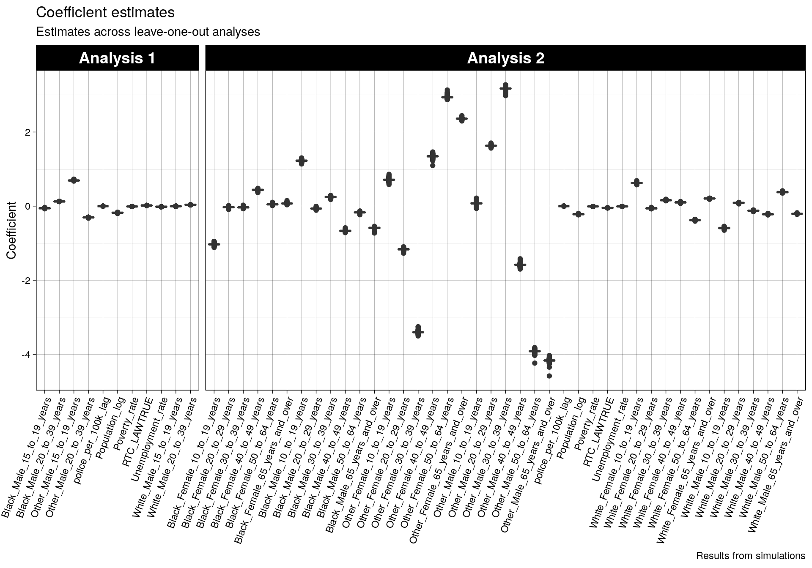</p>
<p>Here, we can start to see that there is a bit more variability in the
coefficient estimates from the leave-one-out results for Analysis 2.</p>
<p>For our display purposes, we would like to order the covariates so
that they are displayed similarly across the two panels. This will allow
us to better observe how the coefficients of the same covariate behave
in the different analyses. We use the <code>mutate</code> function to
convert the <code>term</code> variable to a factor, where we assign the
non-demographic variables to be the first levels, with the sorted (in
alphabetical order using the base <code>sort()</code> function)
demographic variables coming afterwards.</p>
<p>You might notice that the names of the demographic variable values in
the <code>term</code> variable of the <code>simulations</code> data all
have the word “years”. We can use the <code>str_subset()</code> function
of the <code>stringr</code> package to select just the demographic
variables based on the word “years. In contrast, we can use the
<code>negate = TRUE</code> argument to select all the other variables,
the non-demographic variable values. We can use the
<code>unique()</code> base function to grab just the unique values of
the <code>term</code> variable.</p>
<div class="sourceCode" id="cb88"><pre class="sourceCode r"><code class="sourceCode r"><span id="cb88-1"><a href="#cb88-1" tabindex="-1"></a><span class="fu">str_subset</span>(<span class="fu">unique</span>(<span class="fu">pull</span>(simulations, term)), <span class="st">&quot;years&quot;</span>, <span class="at">negate =</span> <span class="cn">TRUE</span>)</span></code></pre></div>
<pre><code>[1] &quot;RTC_LAWTRUE&quot;         &quot;Unemployment_rate&quot;   &quot;Poverty_rate&quot;       
[4] &quot;Population_log&quot;      &quot;police_per_100k_lag&quot;</code></pre>
<div class="sourceCode" id="cb90"><pre class="sourceCode r"><code class="sourceCode r"><span id="cb90-1"><a href="#cb90-1" tabindex="-1"></a><span class="fu">str_subset</span>(<span class="fu">unique</span>(<span class="fu">pull</span>(simulations, term)), <span class="st">&quot;years&quot;</span>)</span></code></pre></div>
<pre><code> [1] &quot;White_Male_15_to_19_years&quot;      &quot;White_Male_20_to_39_years&quot;     
 [3] &quot;Black_Male_15_to_19_years&quot;      &quot;Black_Male_20_to_39_years&quot;     
 [5] &quot;Other_Male_15_to_19_years&quot;      &quot;Other_Male_20_to_39_years&quot;     
 [7] &quot;White_Female_10_to_19_years&quot;    &quot;White_Female_20_to_29_years&quot;   
 [9] &quot;White_Female_30_to_39_years&quot;    &quot;White_Female_40_to_49_years&quot;   
[11] &quot;White_Female_50_to_64_years&quot;    &quot;White_Female_65_years_and_over&quot;
[13] &quot;White_Male_10_to_19_years&quot;      &quot;White_Male_20_to_29_years&quot;     
[15] &quot;White_Male_30_to_39_years&quot;      &quot;White_Male_40_to_49_years&quot;     
[17] &quot;White_Male_50_to_64_years&quot;      &quot;White_Male_65_years_and_over&quot;  
[19] &quot;Black_Female_10_to_19_years&quot;    &quot;Black_Female_20_to_29_years&quot;   
[21] &quot;Black_Female_30_to_39_years&quot;    &quot;Black_Female_40_to_49_years&quot;   
[23] &quot;Black_Female_50_to_64_years&quot;    &quot;Black_Female_65_years_and_over&quot;
[25] &quot;Black_Male_10_to_19_years&quot;      &quot;Black_Male_20_to_29_years&quot;     
[27] &quot;Black_Male_30_to_39_years&quot;      &quot;Black_Male_40_to_49_years&quot;     
[29] &quot;Black_Male_50_to_64_years&quot;      &quot;Black_Male_65_years_and_over&quot;  
[31] &quot;Other_Female_10_to_19_years&quot;    &quot;Other_Female_20_to_29_years&quot;   
[33] &quot;Other_Female_30_to_39_years&quot;    &quot;Other_Female_40_to_49_years&quot;   
[35] &quot;Other_Female_50_to_64_years&quot;    &quot;Other_Female_65_years_and_over&quot;
[37] &quot;Other_Male_10_to_19_years&quot;      &quot;Other_Male_20_to_29_years&quot;     
[39] &quot;Other_Male_30_to_39_years&quot;      &quot;Other_Male_40_to_49_years&quot;     
[41] &quot;Other_Male_50_to_64_years&quot;      &quot;Other_Male_65_years_and_over&quot;  </code></pre>
<p>Now we can create the order of the values of the <code>term</code>
variable using the <code>factor</code> argument and the
<code>levels</code> argument.</p>
<div class="sourceCode" id="cb92"><pre class="sourceCode r"><code class="sourceCode r"><span id="cb92-1"><a href="#cb92-1" tabindex="-1"></a>simulations <span class="ot">&lt;-</span> simulations <span class="sc">%&gt;%</span></span>
<span id="cb92-2"><a href="#cb92-2" tabindex="-1"></a>  <span class="fu">mutate</span>(<span class="at">term =</span> <span class="fu">factor</span>(term,</span>
<span id="cb92-3"><a href="#cb92-3" tabindex="-1"></a>    <span class="at">levels =</span> <span class="fu">c</span>(</span>
<span id="cb92-4"><a href="#cb92-4" tabindex="-1"></a>      <span class="fu">str_subset</span>(<span class="fu">unique</span>(<span class="fu">pull</span>(simulations, term)), <span class="st">&quot;years&quot;</span>, <span class="at">negate =</span> <span class="cn">TRUE</span>),</span>
<span id="cb92-5"><a href="#cb92-5" tabindex="-1"></a>      <span class="fu">sort</span>(<span class="fu">str_subset</span>(<span class="fu">unique</span>(<span class="fu">pull</span>(simulations, term)), <span class="st">&quot;years&quot;</span>))</span>
<span id="cb92-6"><a href="#cb92-6" tabindex="-1"></a>    )</span>
<span id="cb92-7"><a href="#cb92-7" tabindex="-1"></a>  ))</span>
<span id="cb92-8"><a href="#cb92-8" tabindex="-1"></a></span>
<span id="cb92-9"><a href="#cb92-9" tabindex="-1"></a><span class="fu">levels</span>(<span class="fu">pull</span>(simulations, term))</span></code></pre></div>
<pre><code> [1] &quot;RTC_LAWTRUE&quot;                    &quot;Unemployment_rate&quot;             
 [3] &quot;Poverty_rate&quot;                   &quot;Population_log&quot;                
 [5] &quot;police_per_100k_lag&quot;            &quot;Black_Female_10_to_19_years&quot;   
 [7] &quot;Black_Female_20_to_29_years&quot;    &quot;Black_Female_30_to_39_years&quot;   
 [9] &quot;Black_Female_40_to_49_years&quot;    &quot;Black_Female_50_to_64_years&quot;   
[11] &quot;Black_Female_65_years_and_over&quot; &quot;Black_Male_10_to_19_years&quot;     
[13] &quot;Black_Male_15_to_19_years&quot;      &quot;Black_Male_20_to_29_years&quot;     
[15] &quot;Black_Male_20_to_39_years&quot;      &quot;Black_Male_30_to_39_years&quot;     
[17] &quot;Black_Male_40_to_49_years&quot;      &quot;Black_Male_50_to_64_years&quot;     
[19] &quot;Black_Male_65_years_and_over&quot;   &quot;Other_Female_10_to_19_years&quot;   
[21] &quot;Other_Female_20_to_29_years&quot;    &quot;Other_Female_30_to_39_years&quot;   
[23] &quot;Other_Female_40_to_49_years&quot;    &quot;Other_Female_50_to_64_years&quot;   
[25] &quot;Other_Female_65_years_and_over&quot; &quot;Other_Male_10_to_19_years&quot;     
[27] &quot;Other_Male_15_to_19_years&quot;      &quot;Other_Male_20_to_29_years&quot;     
[29] &quot;Other_Male_20_to_39_years&quot;      &quot;Other_Male_30_to_39_years&quot;     
[31] &quot;Other_Male_40_to_49_years&quot;      &quot;Other_Male_50_to_64_years&quot;     
[33] &quot;Other_Male_65_years_and_over&quot;   &quot;White_Female_10_to_19_years&quot;   
[35] &quot;White_Female_20_to_29_years&quot;    &quot;White_Female_30_to_39_years&quot;   
[37] &quot;White_Female_40_to_49_years&quot;    &quot;White_Female_50_to_64_years&quot;   
[39] &quot;White_Female_65_years_and_over&quot; &quot;White_Male_10_to_19_years&quot;     
[41] &quot;White_Male_15_to_19_years&quot;      &quot;White_Male_20_to_29_years&quot;     
[43] &quot;White_Male_20_to_39_years&quot;      &quot;White_Male_30_to_39_years&quot;     
[45] &quot;White_Male_40_to_49_years&quot;      &quot;White_Male_50_to_64_years&quot;     
[47] &quot;White_Male_65_years_and_over&quot;  </code></pre>
<p>Looks good!</p>
<p>Now we just need to run the same code again to create the plot, but
now the order of the x axis values will be different.</p>
<div class="sourceCode" id="cb94"><pre class="sourceCode r"><code class="sourceCode r"><span id="cb94-1"><a href="#cb94-1" tabindex="-1"></a>simulation_plot <span class="ot">&lt;-</span> simulations <span class="sc">%&gt;%</span></span>
<span id="cb94-2"><a href="#cb94-2" tabindex="-1"></a>  <span class="fu">ggplot</span>(<span class="fu">aes</span>(<span class="at">x =</span> term, <span class="at">y =</span> estimate)) <span class="sc">+</span></span>
<span id="cb94-3"><a href="#cb94-3" tabindex="-1"></a>  <span class="fu">geom_boxplot</span>() <span class="sc">+</span></span>
<span id="cb94-4"><a href="#cb94-4" tabindex="-1"></a>  <span class="fu">facet_grid</span>(. <span class="sc">~</span> Analysis, <span class="at">scale =</span> <span class="st">&quot;free_x&quot;</span>, <span class="at">space =</span> <span class="st">&quot;free&quot;</span>, <span class="at">drop =</span> <span class="cn">TRUE</span>) <span class="sc">+</span></span>
<span id="cb94-5"><a href="#cb94-5" tabindex="-1"></a>  <span class="fu">labs</span>(</span>
<span id="cb94-6"><a href="#cb94-6" tabindex="-1"></a>    <span class="at">title =</span> <span class="st">&quot;Coefficient estimates&quot;</span>,</span>
<span id="cb94-7"><a href="#cb94-7" tabindex="-1"></a>    <span class="at">subtitle =</span> <span class="st">&quot;Estimates across leave-one-out analyses&quot;</span>,</span>
<span id="cb94-8"><a href="#cb94-8" tabindex="-1"></a>    <span class="at">x =</span> <span class="st">&quot;Term&quot;</span>,</span>
<span id="cb94-9"><a href="#cb94-9" tabindex="-1"></a>    <span class="at">y =</span> <span class="st">&quot;Coefficient&quot;</span>,</span>
<span id="cb94-10"><a href="#cb94-10" tabindex="-1"></a>    <span class="at">caption =</span> <span class="st">&quot;Results from simulations&quot;</span></span>
<span id="cb94-11"><a href="#cb94-11" tabindex="-1"></a>  ) <span class="sc">+</span></span>
<span id="cb94-12"><a href="#cb94-12" tabindex="-1"></a>  <span class="fu">theme_linedraw</span>() <span class="sc">+</span></span>
<span id="cb94-13"><a href="#cb94-13" tabindex="-1"></a>  <span class="fu">theme</span>(</span>
<span id="cb94-14"><a href="#cb94-14" tabindex="-1"></a>    <span class="at">axis.title.x =</span> <span class="fu">element_blank</span>(),</span>
<span id="cb94-15"><a href="#cb94-15" tabindex="-1"></a>    <span class="at">axis.text.x =</span> <span class="fu">element_text</span>(<span class="at">angle =</span> <span class="dv">70</span>, <span class="at">hjust =</span> <span class="dv">1</span>),</span>
<span id="cb94-16"><a href="#cb94-16" tabindex="-1"></a>    <span class="at">strip.text.x =</span> <span class="fu">element_text</span>(<span class="at">size =</span> <span class="dv">14</span>, <span class="at">face =</span> <span class="st">&quot;bold&quot;</span>)</span>
<span id="cb94-17"><a href="#cb94-17" tabindex="-1"></a>  )</span>
<span id="cb94-18"><a href="#cb94-18" tabindex="-1"></a></span>
<span id="cb94-19"><a href="#cb94-19" tabindex="-1"></a>simulation_plot</span></code></pre></div>
<p>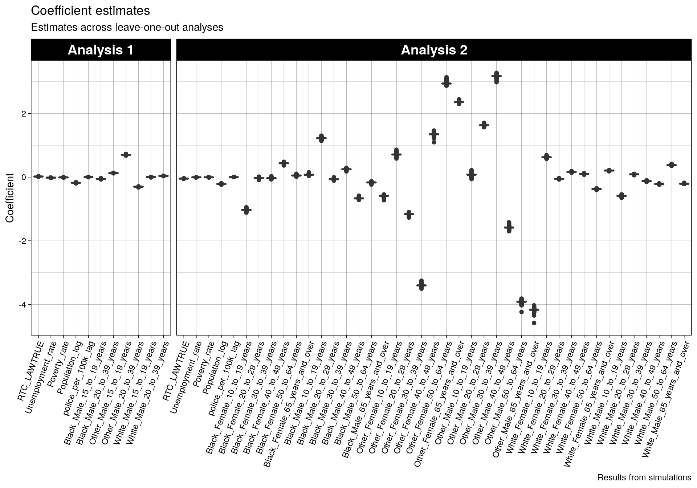</p>
<p>We can see that the range of coefficient estimates when only one
observation is removed is much larger in Analysis 2 for nearly all
variables, but particularly for many of the additional demographic
variables.</p>
<p>Let’s make a plot showing the summary of the overall coefficient
instability.</p>
<p>To do this we will calculate the standard deviation of coefficient
estimates for each variable across all of the simulations. Thus we will
group by the <code>Analysis</code> and the <code>term</code> variables
now that our data is in long format. We will use the <code>sd()</code>
function of the <code>stats</code> package to calculate the standard
deviation.</p>
<div class="sourceCode" id="cb95"><pre class="sourceCode r"><code class="sourceCode r"><span id="cb95-1"><a href="#cb95-1" tabindex="-1"></a>coeff_sd <span class="ot">&lt;-</span> simulations <span class="sc">%&gt;%</span></span>
<span id="cb95-2"><a href="#cb95-2" tabindex="-1"></a>  <span class="fu">group_by</span>(Analysis, term) <span class="sc">%&gt;%</span></span>
<span id="cb95-3"><a href="#cb95-3" tabindex="-1"></a>  <span class="fu">summarize</span>(<span class="st">&quot;SD&quot;</span> <span class="ot">=</span> <span class="fu">sd</span>(estimate))</span></code></pre></div>
<p>First, we will display an interactive table of these standard
deviations. Try searching for “RTC”, and you can compare the standard
deviations of the coefficients for the <code>RTC_LAWTRUE</code> variable
across the two analyses. To take a better look at our data we will use
the <code>datatable()</code> function of the <code>DT</code> package
which will create an interactive searchable table.</p>
<div class="sourceCode" id="cb96"><pre class="sourceCode r"><code class="sourceCode r"><span id="cb96-1"><a href="#cb96-1" tabindex="-1"></a>DT<span class="sc">::</span><span class="fu">datatable</span>(coeff_sd)</span></code></pre></div>
<div class="datatables html-widget html-fill-item" id="htmlwidget-2ebb3d94e4df009103f5" style="width:100%;height:auto;"></div>
<script type="application/json" data-for="htmlwidget-2ebb3d94e4df009103f5">{"x":{"filter":"none","vertical":false,"data":[["1","2","3","4","5","6","7","8","9","10","11","12","13","14","15","16","17","18","19","20","21","22","23","24","25","26","27","28","29","30","31","32","33","34","35","36","37","38","39","40","41","42","43","44","45","46","47","48","49","50","51","52"],["Analysis 1","Analysis 1","Analysis 1","Analysis 1","Analysis 1","Analysis 1","Analysis 1","Analysis 1","Analysis 1","Analysis 1","Analysis 1","Analysis 2","Analysis 2","Analysis 2","Analysis 2","Analysis 2","Analysis 2","Analysis 2","Analysis 2","Analysis 2","Analysis 2","Analysis 2","Analysis 2","Analysis 2","Analysis 2","Analysis 2","Analysis 2","Analysis 2","Analysis 2","Analysis 2","Analysis 2","Analysis 2","Analysis 2","Analysis 2","Analysis 2","Analysis 2","Analysis 2","Analysis 2","Analysis 2","Analysis 2","Analysis 2","Analysis 2","Analysis 2","Analysis 2","Analysis 2","Analysis 2","Analysis 2","Analysis 2","Analysis 2","Analysis 2","Analysis 2","Analysis 2"],["RTC_LAWTRUE","Unemployment_rate","Poverty_rate","Population_log","police_per_100k_lag","Black_Male_15_to_19_years","Black_Male_20_to_39_years","Other_Male_15_to_19_years","Other_Male_20_to_39_years","White_Male_15_to_19_years","White_Male_20_to_39_years","RTC_LAWTRUE","Unemployment_rate","Poverty_rate","Population_log","police_per_100k_lag","Black_Female_10_to_19_years","Black_Female_20_to_29_years","Black_Female_30_to_39_years","Black_Female_40_to_49_years","Black_Female_50_to_64_years","Black_Female_65_years_and_over","Black_Male_10_to_19_years","Black_Male_20_to_29_years","Black_Male_30_to_39_years","Black_Male_40_to_49_years","Black_Male_50_to_64_years","Black_Male_65_years_and_over","Other_Female_10_to_19_years","Other_Female_20_to_29_years","Other_Female_30_to_39_years","Other_Female_40_to_49_years","Other_Female_50_to_64_years","Other_Female_65_years_and_over","Other_Male_10_to_19_years","Other_Male_20_to_29_years","Other_Male_30_to_39_years","Other_Male_40_to_49_years","Other_Male_50_to_64_years","Other_Male_65_years_and_over","White_Female_10_to_19_years","White_Female_20_to_29_years","White_Female_30_to_39_years","White_Female_40_to_49_years","White_Female_50_to_64_years","White_Female_65_years_and_over","White_Male_10_to_19_years","White_Male_20_to_29_years","White_Male_30_to_39_years","White_Male_40_to_49_years","White_Male_50_to_64_years","White_Male_65_years_and_over"],[0.0004602704709338079,0.000160476548695662,7.91153332362358e-05,0.001942414340993095,3.480733066823376e-06,0.001453164072033446,0.0005270769589043764,0.002866439349148865,0.001270055290601289,0.0006876509822851233,0.0002953253136158854,0.0004931280843911558,0.0001268054367862456,7.210299708212316e-05,0.002682201518015435,3.884005952649663e-06,0.01194084282895128,0.00450561467972225,0.005527827817603323,0.006326010584570373,0.005899842478815751,0.006683113218496523,0.01219237262413301,0.004895292899529231,0.006376752103769262,0.007368041386030046,0.006505469516461714,0.009816213218298456,0.01724641790398573,0.009225783018524003,0.01270222089479373,0.01537700716852674,0.01271535746376377,0.007004195307540297,0.01684792124312953,0.008900347938440654,0.01421745435550608,0.01516551994958135,0.01512950264541107,0.01681322361308233,0.00528223300691889,0.002033096122552468,0.002763793724528145,0.002754690005747974,0.002278276587331328,0.001800137863430544,0.004952391789078745,0.002005392016473931,0.002818324966748451,0.002304385773466132,0.002747724808783752,0.002581555394612054]],"container":"<table class=\"display\">\n  <thead>\n    <tr>\n      <th> <\/th>\n      <th>Analysis<\/th>\n      <th>term<\/th>\n      <th>SD<\/th>\n    <\/tr>\n  <\/thead>\n<\/table>","options":{"columnDefs":[{"className":"dt-right","targets":3},{"orderable":false,"targets":0},{"name":" ","targets":0},{"name":"Analysis","targets":1},{"name":"term","targets":2},{"name":"SD","targets":3}],"order":[],"autoWidth":false,"orderClasses":false}},"evals":[],"jsHooks":[]}</script>
<p>Now we will make a plot of this data, including SDs from all
coefficients in each model.</p>
<div class="sourceCode" id="cb97"><pre class="sourceCode r"><code class="sourceCode r"><span id="cb97-1"><a href="#cb97-1" tabindex="-1"></a>simulation_plot <span class="ot">&lt;-</span> coeff_sd <span class="sc">%&gt;%</span></span>
<span id="cb97-2"><a href="#cb97-2" tabindex="-1"></a>  <span class="fu">ggplot</span>(<span class="fu">aes</span>(<span class="at">x =</span> Analysis, <span class="at">y =</span> SD)) <span class="sc">+</span></span>
<span id="cb97-3"><a href="#cb97-3" tabindex="-1"></a>  <span class="fu">geom_jitter</span>(<span class="at">width =</span> <span class="fl">0.1</span>, <span class="at">alpha =</span> <span class="fl">0.5</span>, <span class="at">size =</span> <span class="dv">2</span>) <span class="sc">+</span></span>
<span id="cb97-4"><a href="#cb97-4" tabindex="-1"></a>  <span class="fu">labs</span>(</span>
<span id="cb97-5"><a href="#cb97-5" tabindex="-1"></a>    <span class="at">title =</span> <span class="st">&quot;Coefficient variability&quot;</span>,</span>
<span id="cb97-6"><a href="#cb97-6" tabindex="-1"></a>    <span class="at">subtitle =</span> <span class="st">&quot;SDs of coefficient estimates from leave-one-out analysis&quot;</span>,</span>
<span id="cb97-7"><a href="#cb97-7" tabindex="-1"></a>    <span class="at">x =</span> <span class="st">&quot;Term&quot;</span>,</span>
<span id="cb97-8"><a href="#cb97-8" tabindex="-1"></a>    <span class="at">y =</span> <span class="st">&quot;Coefficient Estimate </span><span class="sc">\n</span><span class="st"> Standard Deviations&quot;</span>,</span>
<span id="cb97-9"><a href="#cb97-9" tabindex="-1"></a>    <span class="at">caption =</span> <span class="st">&quot;Results from simulations&quot;</span></span>
<span id="cb97-10"><a href="#cb97-10" tabindex="-1"></a>  ) <span class="sc">+</span></span>
<span id="cb97-11"><a href="#cb97-11" tabindex="-1"></a>  <span class="fu">theme_minimal</span>() <span class="sc">+</span></span>
<span id="cb97-12"><a href="#cb97-12" tabindex="-1"></a>  <span class="fu">theme</span>(</span>
<span id="cb97-13"><a href="#cb97-13" tabindex="-1"></a>    <span class="at">axis.title.x =</span> <span class="fu">element_blank</span>(),</span>
<span id="cb97-14"><a href="#cb97-14" tabindex="-1"></a>    <span class="at">axis.text.x =</span> <span class="fu">element_text</span>(<span class="at">size =</span> <span class="dv">8</span>, <span class="at">color =</span> <span class="st">&quot;black&quot;</span>),</span>
<span id="cb97-15"><a href="#cb97-15" tabindex="-1"></a>    <span class="at">axis.text.y =</span> <span class="fu">element_text</span>(<span class="at">color =</span> <span class="st">&quot;black&quot;</span>)</span>
<span id="cb97-16"><a href="#cb97-16" tabindex="-1"></a>  )</span>
<span id="cb97-17"><a href="#cb97-17" tabindex="-1"></a>simulation_plot</span></code></pre></div>
<p>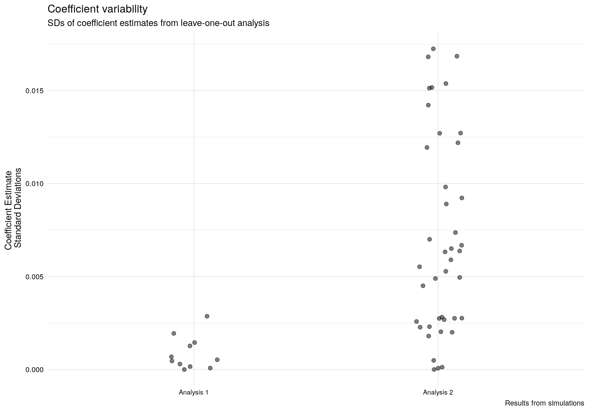</p>
<p>Here we can clearly see that overall the coefficient estimates are
much less stable in Analysis 2. This is an indication that we may have
multicollinearity in our data.</p>
</div>
</div>
<div id="vif" class="section level3">
<h3><strong>VIF</strong></h3>
<hr />
<p>Another way of evaluating the presence and severity of
multicollinearity is to calculate the <a
href="https://en.wikipedia.org/wiki/Variance_inflation_factor"
target="_blank">variance inflation factor (VIF)</a> .</p>
<p>According to <a
href="https://en.wikipedia.org/wiki/Variance_inflation_factor"
target="_blank">Wikipedia</a>:</p>
<blockquote>
<p>It provides an index that measures how much the variance (the square
of the estimate’s standard deviation) of an estimated regression
coefficient is increased because of collinearity.</p>
</blockquote>
<blockquote>
<p>The variance inflation factor (VIF) is the <strong>quotient of the
variance in a model with multiple terms by the variance of a model with
one term alone</strong>.</p>
</blockquote>
<p>VIF values can be calculated for each explanatory variable in a model
by performing the following calculation:</p>
<ol style="list-style-type: decimal">
<li>Run another ordinary least squares (OLS) linear regression with one
of the explanatory variables of your model of interest (<span
class="math inline">\(X_i\)</span>) as the dependent variable and keep
the remaining explanatory variables as explanatory variables.</li>
</ol>
<p>So generically speaking say this is our model:</p>
<p><span class="math display">\[Y = β_0 + β_1X_1 + β_2X_2 + β_3X_3 + e
\]</span></p>
<p>We have three explanatory variables (<span
class="math inline">\(X_1\)</span>, <span
class="math inline">\(X_2\)</span>, and <span
class="math inline">\(X_3\)</span>).</p>
<p>If we want to calculate the VIF value for <span
class="math inline">\(X_1\)</span> we would need to perform another OLS
model, where <span class="math inline">\(X_1\)</span> is now the
dependent variable explained by the other explanatory variables.</p>
<p><span class="math display">\[X_1 = β_0 +  β_2X_2 + β_3X_3 +
e\]</span></p>
<p>The <a
href="https://en.wikipedia.org/wiki/Coefficient_of_determination"
target="_blank"><span class="math inline">\(R^2\)</span> coefficient of
determination</a> (also called R squared value) from this regression is
then used to calculate the VIF as follows:</p>
<p><span class="math display">\[\frac{1}{1-R^{2}}\]</span></p>
<p>The <span class="math inline">\(R^2\)</span> value is in this case
the proportion of variance in <span class="math inline">\(X_1\)</span>
explained by the other variables (<span
class="math inline">\(X_2\)</span> and <span
class="math inline">\(X_3\)</span>).</p>
<p>VIF values are typically calculated for each explanatory variable
when evaluating multicollinearity of a model.</p>
<p>The calculation for a single variable is: <span
class="math display">\[VIF_i = \frac{1}{1-R_i^{2}}\]</span> Where <span
class="math inline">\(i\)</span> is the index of each explanatory
variable.</p>
<p>Recall that according to <a
href="https://en.wikipedia.org/wiki/Variance_inflation_factor"
target="_blank">Wikipedia</a>:</p>
<blockquote>
<p>The variance inflation factor (VIF) is the <strong>quotient of the
variance in a model with multiple terms by the variance of a model with
one term alone</strong>.</p>
</blockquote>
<p>The <span class="math inline">\(R^2\)</span> value ranges from 0 to
1, and if the variation of one variable is highly explained by the other
variables, the <span class="math inline">\(R^2\)</span> will approach 1.
Thus the denominator in the VIF calculation <span
class="math inline">\(1-R_i^{2}\)</span> (which is sometimes referred to
as tolerance) will be smaller and the VIF value will be larger.</p>
<p>Thus, <strong>higher VIF vales</strong> indicate <strong>more severe
multicollinearity</strong>. Typically a threshold of a tolerance of less
than 0.10 and/or a VIF of 10 or above is used as a rule of thumb to
determine if the presence of multicollinearity might be problematic.</p>
<p>Please see this <a
href="https://link.springer.com/content/pdf/10.1007/s11135-006-9018-6.pdf"
target="_blank">article</a> for a thorough explanation of how to
interpret VIF values and how to decide what to do if your model has high
multicollinearity.</p>
<p>So how do we calculate VIF values in R?</p>
<p>We could do this manually creating many linear regressions, but that
would obviously be time consuming. Luckily, the <code>car</code> package
has a function called <code>vif()</code> that will calculate VIF values.
However, there is one wrinkle: the <code>vif()</code> function is not
compatible with the output of the <code>plm</code> function. There is
however a workaround that allows us to fit a similar model using the
standard <code>lm()</code> function on data where we have removed the
within-individual means. While this won’t give us exactly the same
results in terms of the standard errors of our estimates, it will give
us some idea of the VIF values for the covariates in our model. We are
following the steps outlined <a
href="http://karthur.org/2019/implementing-fixed-effects-panel-models-in-r.html"
target="_blank">here</a>, a really nice summary of panel data modeling
in R.</p>
<p>Once we have calculated our VIF values, we will create nicer looking
output of the data using the <code>as_tibble()</code> function of the
<code>tibble</code> package to create a tibble and add the variable
names as another column.</p>
<p>Recall that we previously created the <code>DONOHUE_OUTPUT</code>
object like so:</p>
<div class="sourceCode" id="cb98"><pre class="sourceCode r"><code class="sourceCode r"><span id="cb98-1"><a href="#cb98-1" tabindex="-1"></a>DONOHUE_OUTPUT <span class="ot">&lt;-</span> <span class="fu">plm</span>(Viol_crime_rate_1k_log <span class="sc">~</span></span>
<span id="cb98-2"><a href="#cb98-2" tabindex="-1"></a>RTC_LAW <span class="sc">+</span></span>
<span id="cb98-3"><a href="#cb98-3" tabindex="-1"></a>  White_Male_15_to_19_years <span class="sc">+</span></span>
<span id="cb98-4"><a href="#cb98-4" tabindex="-1"></a>  White_Male_20_to_39_years <span class="sc">+</span></span>
<span id="cb98-5"><a href="#cb98-5" tabindex="-1"></a>  Black_Male_15_to_19_years <span class="sc">+</span></span>
<span id="cb98-6"><a href="#cb98-6" tabindex="-1"></a>  Black_Male_20_to_39_years <span class="sc">+</span></span>
<span id="cb98-7"><a href="#cb98-7" tabindex="-1"></a>  Other_Male_15_to_19_years <span class="sc">+</span></span>
<span id="cb98-8"><a href="#cb98-8" tabindex="-1"></a>  Other_Male_20_to_39_years <span class="sc">+</span></span>
<span id="cb98-9"><a href="#cb98-9" tabindex="-1"></a>  Unemployment_rate <span class="sc">+</span></span>
<span id="cb98-10"><a href="#cb98-10" tabindex="-1"></a>  Poverty_rate <span class="sc">+</span></span>
<span id="cb98-11"><a href="#cb98-11" tabindex="-1"></a>  Population_log <span class="sc">+</span></span>
<span id="cb98-12"><a href="#cb98-12" tabindex="-1"></a>  police_per_100k_lag,</span>
<span id="cb98-13"><a href="#cb98-13" tabindex="-1"></a><span class="at">effect =</span> <span class="st">&quot;twoways&quot;</span>,</span>
<span id="cb98-14"><a href="#cb98-14" tabindex="-1"></a><span class="at">model =</span> <span class="st">&quot;within&quot;</span>,</span>
<span id="cb98-15"><a href="#cb98-15" tabindex="-1"></a><span class="at">data =</span> d_panel_DONOHUE</span>
<span id="cb98-16"><a href="#cb98-16" tabindex="-1"></a>)</span></code></pre></div>
<p>What we have modeled is how a state’s violent crime rate has changed
with modifications of RTC law status and over time, relative to itself,
and how this compares to similar changes in violent crime of another
state relative to itself.</p>
<p>The coefficients from this model then are, in an oversimplified
explanation, centered across all states and across all time points. This
is called “demeaned” data.</p>
<p>We will now use this model output to create a data frame of demeaned
data (where the effect of time is accounted for as are the
within-individuals effects, in this case the different states). We will
make a model matrix of this data by using the
<code>model.matrix()</code> function of the <code>stats</code> package
and then we will create a data frame from this using the base
<code>as.data.frame()</code> function.</p>
<div class="sourceCode" id="cb99"><pre class="sourceCode r"><code class="sourceCode r"><span id="cb99-1"><a href="#cb99-1" tabindex="-1"></a>lm_DONOHUE_data <span class="ot">&lt;-</span> <span class="fu">as.data.frame</span>(<span class="fu">model.matrix</span>(DONOHUE_OUTPUT))</span></code></pre></div>
<div class="sourceCode" id="cb100"><pre
class="sourceCode r"><code class="sourceCode r"><span id="cb100-1"><a href="#cb100-1" tabindex="-1"></a><span class="fu">glimpse</span>(lm_DONOHUE_data)</span></code></pre></div>
<pre><code>Rows: 1,395
Columns: 11
$ RTC_LAWTRUE               &lt;dbl&gt; -0.1491039, -0.1491039, -0.1491039, -0.14910…
$ White_Male_15_to_19_years &lt;dbl&gt; -0.17167489, -0.06619055, -0.06629357, -0.08…
$ White_Male_20_to_39_years &lt;dbl&gt; 3.2089257, 2.8592259, 2.7093166, 2.4692997, …
$ Black_Male_15_to_19_years &lt;dbl&gt; -0.098689711, -0.076244940, -0.056288623, -0…
$ Black_Male_20_to_39_years &lt;dbl&gt; 0.211104389, 0.178202827, 0.160277326, 0.141…
$ Other_Male_15_to_19_years &lt;dbl&gt; 0.090970393, 0.082703650, 0.030284388, -0.04…
$ Other_Male_20_to_39_years &lt;dbl&gt; 0.017436309, 0.005636164, 0.023425966, -0.00…
$ Unemployment_rate         &lt;dbl&gt; 0.872831541, 0.203942652, -1.202724014, -1.2…
$ Poverty_rate              &lt;dbl&gt; -0.2531900, -1.7598566, -1.1331900, 0.615698…
$ Population_log            &lt;dbl&gt; -0.223047491, -0.200306695, -0.139763637, -0…
$ police_per_100k_lag       &lt;dbl&gt; 13.0776479, 16.2876170, 2.6545268, 140.18171…</code></pre>
<p>Notice that this does not contain any outcome data. We will add this
by taking the outcome of the <code>Within()</code> function of the
<code>plm</code> package to get the violent crime data after accounting
for the state specific effects. According to the documentation for this
package:</p>
<blockquote>
<p>Within returns a vector containing the values in deviation from the
individual means (if effect = “individual”, from time means if effect =
“time”), the so called demeaned data.</p>
</blockquote>
<p>Also recall that the <code>d_panel_DONOHUE</code> data is just the
Donohue data in panel format.</p>
<div class="sourceCode" id="cb102"><pre
class="sourceCode r"><code class="sourceCode r"><span id="cb102-1"><a href="#cb102-1" tabindex="-1"></a>lm_DONOHUE_data <span class="ot">&lt;-</span> lm_DONOHUE_data <span class="sc">%&gt;%</span></span>
<span id="cb102-2"><a href="#cb102-2" tabindex="-1"></a>  <span class="fu">mutate</span>(<span class="at">Viol_crime_rate_1k_log =</span> plm<span class="sc">::</span><span class="fu">Within</span>(<span class="fu">pull</span>(</span>
<span id="cb102-3"><a href="#cb102-3" tabindex="-1"></a>    d_panel_DONOHUE, Viol_crime_rate_1k_log</span>
<span id="cb102-4"><a href="#cb102-4" tabindex="-1"></a>  )), <span class="at">effect =</span> <span class="st">&quot;twoways&quot;</span>)</span></code></pre></div>
<p>Now we will fit the demeaned data to the model:</p>
<div class="sourceCode" id="cb103"><pre
class="sourceCode r"><code class="sourceCode r"><span id="cb103-1"><a href="#cb103-1" tabindex="-1"></a>lm_DONOHUE <span class="ot">&lt;-</span> <span class="fu">lm</span>(Viol_crime_rate_1k_log <span class="sc">~</span></span>
<span id="cb103-2"><a href="#cb103-2" tabindex="-1"></a>RTC_LAWTRUE <span class="sc">+</span></span>
<span id="cb103-3"><a href="#cb103-3" tabindex="-1"></a>  White_Male_15_to_19_years <span class="sc">+</span></span>
<span id="cb103-4"><a href="#cb103-4" tabindex="-1"></a>  White_Male_20_to_39_years <span class="sc">+</span></span>
<span id="cb103-5"><a href="#cb103-5" tabindex="-1"></a>  Black_Male_15_to_19_years <span class="sc">+</span></span>
<span id="cb103-6"><a href="#cb103-6" tabindex="-1"></a>  Black_Male_20_to_39_years <span class="sc">+</span></span>
<span id="cb103-7"><a href="#cb103-7" tabindex="-1"></a>  Other_Male_15_to_19_years <span class="sc">+</span></span>
<span id="cb103-8"><a href="#cb103-8" tabindex="-1"></a>  Other_Male_20_to_39_years <span class="sc">+</span></span>
<span id="cb103-9"><a href="#cb103-9" tabindex="-1"></a>  Unemployment_rate <span class="sc">+</span></span>
<span id="cb103-10"><a href="#cb103-10" tabindex="-1"></a>  Poverty_rate <span class="sc">+</span></span>
<span id="cb103-11"><a href="#cb103-11" tabindex="-1"></a>  Population_log <span class="sc">+</span></span>
<span id="cb103-12"><a href="#cb103-12" tabindex="-1"></a>  police_per_100k_lag,</span>
<span id="cb103-13"><a href="#cb103-13" tabindex="-1"></a><span class="at">data =</span> lm_DONOHUE_data</span>
<span id="cb103-14"><a href="#cb103-14" tabindex="-1"></a>)</span></code></pre></div>
<p>Now we are ready to use the <code>vif()</code> function of the
<code>car</code> package to calculate the VIF values:</p>
<div class="sourceCode" id="cb104"><pre
class="sourceCode r"><code class="sourceCode r"><span id="cb104-1"><a href="#cb104-1" tabindex="-1"></a>vif_DONOHUE <span class="ot">&lt;-</span> <span class="fu">vif</span>(lm_DONOHUE)</span>
<span id="cb104-2"><a href="#cb104-2" tabindex="-1"></a></span>
<span id="cb104-3"><a href="#cb104-3" tabindex="-1"></a>vif_DONOHUE</span></code></pre></div>
<pre><code>              RTC_LAWTRUE White_Male_15_to_19_years White_Male_20_to_39_years 
                 1.097853                  1.172339                  1.738459 
Black_Male_15_to_19_years Black_Male_20_to_39_years Other_Male_15_to_19_years 
                 1.344193                  1.653712                  1.586648 
Other_Male_20_to_39_years         Unemployment_rate              Poverty_rate 
                 1.529688                  1.244667                  1.270321 
           Population_log       police_per_100k_lag 
                 1.153933                  1.204491 </code></pre>
<p>Now we will use the <code>as_tibble()</code> function of the
<code>tibble</code> package to nicely put this together.</p>
<div class="sourceCode" id="cb106"><pre
class="sourceCode r"><code class="sourceCode r"><span id="cb106-1"><a href="#cb106-1" tabindex="-1"></a>vif_DONOHUE <span class="ot">&lt;-</span> vif_DONOHUE <span class="sc">%&gt;%</span></span>
<span id="cb106-2"><a href="#cb106-2" tabindex="-1"></a>  <span class="fu">as_tibble</span>() <span class="sc">%&gt;%</span></span>
<span id="cb106-3"><a href="#cb106-3" tabindex="-1"></a>  <span class="fu">cbind</span>(., <span class="fu">names</span>(vif_DONOHUE)) <span class="sc">%&gt;%</span></span>
<span id="cb106-4"><a href="#cb106-4" tabindex="-1"></a>  <span class="fu">as_tibble</span>()</span>
<span id="cb106-5"><a href="#cb106-5" tabindex="-1"></a></span>
<span id="cb106-6"><a href="#cb106-6" tabindex="-1"></a><span class="fu">colnames</span>(vif_DONOHUE) <span class="ot">&lt;-</span> <span class="fu">c</span>(<span class="st">&quot;VIF&quot;</span>, <span class="st">&quot;Variable&quot;</span>)</span>
<span id="cb106-7"><a href="#cb106-7" tabindex="-1"></a></span>
<span id="cb106-8"><a href="#cb106-8" tabindex="-1"></a>vif_DONOHUE</span></code></pre></div>
<pre><code># A tibble: 11 × 2
     VIF Variable                 
   &lt;dbl&gt; &lt;chr&gt;                    
 1  1.10 RTC_LAWTRUE              
 2  1.17 White_Male_15_to_19_years
 3  1.74 White_Male_20_to_39_years
 4  1.34 Black_Male_15_to_19_years
 5  1.65 Black_Male_20_to_39_years
 6  1.59 Other_Male_15_to_19_years
 7  1.53 Other_Male_20_to_39_years
 8  1.24 Unemployment_rate        
 9  1.27 Poverty_rate             
10  1.15 Population_log           
11  1.20 police_per_100k_lag      </code></pre>
<p>Now we will do the same for the Lott and Mustard data.</p>
<p>We will need to use the <code>rename()</code> function (you may
recall this is part of the <code>dplyr</code> package) to replace
<code>RTC_LAWTRUE</code> with <code>RTC_LAW</code>, as the variable name
in the model output is appended by <code>TRUE</code> because it was a
logical variable. Because the model formula for the Lott analysis is so
complex, it is easier to change this variable name in our new data
frame, rather than rewrite the formula for this data.</p>
<p>Recall that we already saved the formula for this data:</p>
<div class="sourceCode" id="cb108"><pre
class="sourceCode r"><code class="sourceCode r"><span id="cb108-1"><a href="#cb108-1" tabindex="-1"></a>LOTT_fmla</span></code></pre></div>
<pre><code>Viol_crime_rate_1k_log ~ RTC_LAW + White_Female_10_to_19_years + 
    White_Female_20_to_29_years + White_Female_30_to_39_years + 
    White_Female_40_to_49_years + White_Female_50_to_64_years + 
    White_Female_65_years_and_over + White_Male_10_to_19_years + 
    White_Male_20_to_29_years + White_Male_30_to_39_years + White_Male_40_to_49_years + 
    White_Male_50_to_64_years + White_Male_65_years_and_over + 
    Black_Female_10_to_19_years + Black_Female_20_to_29_years + 
    Black_Female_30_to_39_years + Black_Female_40_to_49_years + 
    Black_Female_50_to_64_years + Black_Female_65_years_and_over + 
    Black_Male_10_to_19_years + Black_Male_20_to_29_years + Black_Male_30_to_39_years + 
    Black_Male_40_to_49_years + Black_Male_50_to_64_years + Black_Male_65_years_and_over + 
    Other_Female_10_to_19_years + Other_Female_20_to_29_years + 
    Other_Female_30_to_39_years + Other_Female_40_to_49_years + 
    Other_Female_50_to_64_years + Other_Female_65_years_and_over + 
    Other_Male_10_to_19_years + Other_Male_20_to_29_years + Other_Male_30_to_39_years + 
    Other_Male_40_to_49_years + Other_Male_50_to_64_years + Other_Male_65_years_and_over + 
    Unemployment_rate + Poverty_rate + Population_log + police_per_100k_lag</code></pre>
<div class="sourceCode" id="cb110"><pre
class="sourceCode r"><code class="sourceCode r"><span id="cb110-1"><a href="#cb110-1" tabindex="-1"></a>lm_LOTT_data <span class="ot">&lt;-</span> <span class="fu">as.data.frame</span>(<span class="fu">model.matrix</span>(LOTT_OUTPUT))</span>
<span id="cb110-2"><a href="#cb110-2" tabindex="-1"></a>lm_LOTT_data <span class="ot">&lt;-</span> lm_LOTT_data <span class="sc">%&gt;%</span></span>
<span id="cb110-3"><a href="#cb110-3" tabindex="-1"></a>  <span class="fu">mutate</span>(<span class="at">Viol_crime_rate_1k_log =</span> plm<span class="sc">::</span><span class="fu">Within</span>(<span class="fu">pull</span>(</span>
<span id="cb110-4"><a href="#cb110-4" tabindex="-1"></a>    d_panel_LOTT, Viol_crime_rate_1k_log</span>
<span id="cb110-5"><a href="#cb110-5" tabindex="-1"></a>  ), <span class="at">effect =</span> <span class="st">&quot;twoways&quot;</span>)) <span class="sc">%&gt;%</span></span>
<span id="cb110-6"><a href="#cb110-6" tabindex="-1"></a>  <span class="fu">rename</span>(<span class="at">RTC_LAW =</span> RTC_LAWTRUE)</span>
<span id="cb110-7"><a href="#cb110-7" tabindex="-1"></a></span>
<span id="cb110-8"><a href="#cb110-8" tabindex="-1"></a>lm_LOTT <span class="ot">&lt;-</span> <span class="fu">lm</span>(LOTT_fmla,</span>
<span id="cb110-9"><a href="#cb110-9" tabindex="-1"></a>  <span class="at">data =</span> lm_LOTT_data</span>
<span id="cb110-10"><a href="#cb110-10" tabindex="-1"></a>)</span>
<span id="cb110-11"><a href="#cb110-11" tabindex="-1"></a></span>
<span id="cb110-12"><a href="#cb110-12" tabindex="-1"></a>vif_LOTT <span class="ot">&lt;-</span> <span class="fu">vif</span>(lm_LOTT)</span>
<span id="cb110-13"><a href="#cb110-13" tabindex="-1"></a></span>
<span id="cb110-14"><a href="#cb110-14" tabindex="-1"></a>vif_LOTT</span></code></pre></div>
<pre><code>                       RTC_LAW    White_Female_10_to_19_years 
                      1.621662                     127.920555 
   White_Female_20_to_29_years    White_Female_30_to_39_years 
                     42.269637                      49.635014 
   White_Female_40_to_49_years    White_Female_50_to_64_years 
                     37.550101                      36.451868 
White_Female_65_years_and_over      White_Male_10_to_19_years 
                     12.866751                     126.824984 
     White_Male_20_to_29_years      White_Male_30_to_39_years 
                     39.248785                      73.008959 
     White_Male_40_to_49_years      White_Male_50_to_64_years 
                     31.613855                      52.774694 
  White_Male_65_years_and_over    Black_Female_10_to_19_years 
                     13.285326                     335.136906 
   Black_Female_20_to_29_years    Black_Female_30_to_39_years 
                    106.644486                      79.058455 
   Black_Female_40_to_49_years    Black_Female_50_to_64_years 
                     98.434064                      66.888057 
Black_Female_65_years_and_over      Black_Male_10_to_19_years 
                     49.715869                     320.740453 
     Black_Male_20_to_29_years      Black_Male_30_to_39_years 
                     89.297151                      89.267356 
     Black_Male_40_to_49_years      Black_Male_50_to_64_years 
                     92.498486                      64.538516 
  Black_Male_65_years_and_over    Other_Female_10_to_19_years 
                     37.960126                     142.283700 
   Other_Female_20_to_29_years    Other_Female_30_to_39_years 
                     64.966861                      54.511835 
   Other_Female_40_to_49_years    Other_Female_50_to_64_years 
                    224.567085                     131.463113 
Other_Female_65_years_and_over      Other_Male_10_to_19_years 
                     82.394398                     151.930450 
     Other_Male_20_to_29_years      Other_Male_30_to_39_years 
                     54.620045                      62.267344 
     Other_Male_40_to_49_years      Other_Male_50_to_64_years 
                    244.698473                     174.184553 
  Other_Male_65_years_and_over              Unemployment_rate 
                     53.532299                       1.497864 
                  Poverty_rate                 Population_log 
                      1.412397                       3.426475 
           police_per_100k_lag 
                      1.732745 </code></pre>
<div class="sourceCode" id="cb112"><pre
class="sourceCode r"><code class="sourceCode r"><span id="cb112-1"><a href="#cb112-1" tabindex="-1"></a>vif_LOTT <span class="ot">&lt;-</span> vif_LOTT <span class="sc">%&gt;%</span></span>
<span id="cb112-2"><a href="#cb112-2" tabindex="-1"></a>  <span class="fu">as_tibble</span>() <span class="sc">%&gt;%</span></span>
<span id="cb112-3"><a href="#cb112-3" tabindex="-1"></a>  <span class="fu">cbind</span>(., <span class="fu">names</span>(vif_LOTT)) <span class="sc">%&gt;%</span></span>
<span id="cb112-4"><a href="#cb112-4" tabindex="-1"></a>  <span class="fu">as_tibble</span>()</span>
<span id="cb112-5"><a href="#cb112-5" tabindex="-1"></a></span>
<span id="cb112-6"><a href="#cb112-6" tabindex="-1"></a><span class="fu">colnames</span>(vif_LOTT) <span class="ot">&lt;-</span> <span class="fu">c</span>(<span class="st">&quot;VIF&quot;</span>, <span class="st">&quot;Variable&quot;</span>)</span></code></pre></div>
<p>Now to have consistent variable names in the VIF data sets we will
rename <code>RTC_LAW</code> back to <code>RTC_LAWTRUE</code> using the
<code>str_replace()</code> function of the <code>stringr</code> package.
This function replaces a pattern.</p>
<div class="sourceCode" id="cb113"><pre
class="sourceCode r"><code class="sourceCode r"><span id="cb113-1"><a href="#cb113-1" tabindex="-1"></a>vif_LOTT <span class="sc">%&gt;%</span> <span class="fu">mutate</span>(<span class="at">Variable =</span> <span class="fu">str_replace</span>(</span>
<span id="cb113-2"><a href="#cb113-2" tabindex="-1"></a>  <span class="at">string =</span> Variable,</span>
<span id="cb113-3"><a href="#cb113-3" tabindex="-1"></a>  <span class="at">pattern =</span> <span class="st">&quot;RTC_LAW&quot;</span>,</span>
<span id="cb113-4"><a href="#cb113-4" tabindex="-1"></a>  <span class="at">replacement =</span> <span class="st">&quot;RTC_LAWTRUE&quot;</span></span>
<span id="cb113-5"><a href="#cb113-5" tabindex="-1"></a>))</span></code></pre></div>
<pre><code># A tibble: 41 × 2
      VIF Variable                      
    &lt;dbl&gt; &lt;chr&gt;                         
 1   1.62 RTC_LAWTRUE                   
 2 128.   White_Female_10_to_19_years   
 3  42.3  White_Female_20_to_29_years   
 4  49.6  White_Female_30_to_39_years   
 5  37.6  White_Female_40_to_49_years   
 6  36.5  White_Female_50_to_64_years   
 7  12.9  White_Female_65_years_and_over
 8 127.   White_Male_10_to_19_years     
 9  39.2  White_Male_20_to_29_years     
10  73.0  White_Male_30_to_39_years     
# ℹ 31 more rows</code></pre>
<div class="sourceCode" id="cb115"><pre
class="sourceCode r"><code class="sourceCode r"><span id="cb115-1"><a href="#cb115-1" tabindex="-1"></a>vif_LOTT</span></code></pre></div>
<pre><code># A tibble: 41 × 2
      VIF Variable                      
    &lt;dbl&gt; &lt;chr&gt;                         
 1   1.62 RTC_LAW                       
 2 128.   White_Female_10_to_19_years   
 3  42.3  White_Female_20_to_29_years   
 4  49.6  White_Female_30_to_39_years   
 5  37.6  White_Female_40_to_49_years   
 6  36.5  White_Female_50_to_64_years   
 7  12.9  White_Female_65_years_and_over
 8 127.   White_Male_10_to_19_years     
 9  39.2  White_Male_20_to_29_years     
10  73.0  White_Male_30_to_39_years     
# ℹ 31 more rows</code></pre>
<div class="sourceCode" id="cb117"><pre
class="sourceCode r"><code class="sourceCode r"><span id="cb117-1"><a href="#cb117-1" tabindex="-1"></a>DT<span class="sc">::</span><span class="fu">datatable</span>(vif_LOTT)</span></code></pre></div>
<div class="datatables html-widget html-fill-item" id="htmlwidget-abd213ad3388fb5e617d" style="width:100%;height:auto;"></div>
<script type="application/json" data-for="htmlwidget-abd213ad3388fb5e617d">{"x":{"filter":"none","vertical":false,"data":[["1","2","3","4","5","6","7","8","9","10","11","12","13","14","15","16","17","18","19","20","21","22","23","24","25","26","27","28","29","30","31","32","33","34","35","36","37","38","39","40","41"],[1.621661792170386,127.9205552525688,42.26963725368677,49.63501358392434,37.55010144079723,36.45186799153297,12.86675092367192,126.8249835338166,39.24878487492272,73.00895886212824,31.61385484644287,52.77469442622247,13.28532573477172,335.1369055459007,106.6444860190229,79.05845484234995,98.43406426064436,66.88805691834905,49.71586867458279,320.7404534603581,89.29715056716459,89.26735620761328,92.49848629630345,64.53851611231957,37.9601262703945,142.2837004699171,64.96686097081654,54.51183522207972,224.5670853184305,131.4631132556211,82.39439765645723,151.9304496721636,54.62004467048793,62.26734413608528,244.6984732705438,174.1845530723135,53.5322991602097,1.497863632108983,1.412397353432076,3.426475296116117,1.732744903597901],["RTC_LAW","White_Female_10_to_19_years","White_Female_20_to_29_years","White_Female_30_to_39_years","White_Female_40_to_49_years","White_Female_50_to_64_years","White_Female_65_years_and_over","White_Male_10_to_19_years","White_Male_20_to_29_years","White_Male_30_to_39_years","White_Male_40_to_49_years","White_Male_50_to_64_years","White_Male_65_years_and_over","Black_Female_10_to_19_years","Black_Female_20_to_29_years","Black_Female_30_to_39_years","Black_Female_40_to_49_years","Black_Female_50_to_64_years","Black_Female_65_years_and_over","Black_Male_10_to_19_years","Black_Male_20_to_29_years","Black_Male_30_to_39_years","Black_Male_40_to_49_years","Black_Male_50_to_64_years","Black_Male_65_years_and_over","Other_Female_10_to_19_years","Other_Female_20_to_29_years","Other_Female_30_to_39_years","Other_Female_40_to_49_years","Other_Female_50_to_64_years","Other_Female_65_years_and_over","Other_Male_10_to_19_years","Other_Male_20_to_29_years","Other_Male_30_to_39_years","Other_Male_40_to_49_years","Other_Male_50_to_64_years","Other_Male_65_years_and_over","Unemployment_rate","Poverty_rate","Population_log","police_per_100k_lag"]],"container":"<table class=\"display\">\n  <thead>\n    <tr>\n      <th> <\/th>\n      <th>VIF<\/th>\n      <th>Variable<\/th>\n    <\/tr>\n  <\/thead>\n<\/table>","options":{"columnDefs":[{"className":"dt-right","targets":1},{"orderable":false,"targets":0},{"name":" ","targets":0},{"name":"VIF","targets":1},{"name":"Variable","targets":2}],"order":[],"autoWidth":false,"orderClasses":false}},"evals":[],"jsHooks":[]}</script>
<p>We can see that some of the VIF values are very high!</p>
<p>Now we will make a plot of the VIF values for both analyses. We will
add text to a specific location on the plot using the
<code>geom_text()</code> function. Typically a threshold of 10 is used
to identify if the VIF are problematically high.</p>
<div class="sourceCode" id="cb118"><pre
class="sourceCode r"><code class="sourceCode r"><span id="cb118-1"><a href="#cb118-1" tabindex="-1"></a>vif_DONOHUE <span class="ot">&lt;-</span> vif_DONOHUE <span class="sc">%&gt;%</span></span>
<span id="cb118-2"><a href="#cb118-2" tabindex="-1"></a>  <span class="fu">mutate</span>(<span class="at">Analysis =</span> <span class="st">&quot;Analysis 1&quot;</span>)</span>
<span id="cb118-3"><a href="#cb118-3" tabindex="-1"></a>vif_LOTT <span class="ot">&lt;-</span> vif_LOTT <span class="sc">%&gt;%</span></span>
<span id="cb118-4"><a href="#cb118-4" tabindex="-1"></a>  <span class="fu">mutate</span>(<span class="at">Analysis =</span> <span class="st">&quot;Analysis 2&quot;</span>)</span>
<span id="cb118-5"><a href="#cb118-5" tabindex="-1"></a></span>
<span id="cb118-6"><a href="#cb118-6" tabindex="-1"></a>vif_df <span class="ot">&lt;-</span> <span class="fu">bind_rows</span>(</span>
<span id="cb118-7"><a href="#cb118-7" tabindex="-1"></a>  vif_DONOHUE,</span>
<span id="cb118-8"><a href="#cb118-8" tabindex="-1"></a>  vif_LOTT</span>
<span id="cb118-9"><a href="#cb118-9" tabindex="-1"></a>)</span>
<span id="cb118-10"><a href="#cb118-10" tabindex="-1"></a><span class="fu">datatable</span>(vif_df)</span></code></pre></div>
<div class="datatables html-widget html-fill-item" id="htmlwidget-ed86fcbb584f670afcd4" style="width:100%;height:auto;"></div>
<script type="application/json" data-for="htmlwidget-ed86fcbb584f670afcd4">{"x":{"filter":"none","vertical":false,"data":[["1","2","3","4","5","6","7","8","9","10","11","12","13","14","15","16","17","18","19","20","21","22","23","24","25","26","27","28","29","30","31","32","33","34","35","36","37","38","39","40","41","42","43","44","45","46","47","48","49","50","51","52"],[1.0978534646023,1.172338822090425,1.738459310574017,1.344192795940022,1.65371234152034,1.586647786214942,1.529687878493762,1.244666619255786,1.270321175244286,1.153933482592109,1.204490694587086,1.621661792170386,127.9205552525688,42.26963725368677,49.63501358392434,37.55010144079723,36.45186799153297,12.86675092367192,126.8249835338166,39.24878487492272,73.00895886212824,31.61385484644287,52.77469442622247,13.28532573477172,335.1369055459007,106.6444860190229,79.05845484234995,98.43406426064436,66.88805691834905,49.71586867458279,320.7404534603581,89.29715056716459,89.26735620761328,92.49848629630345,64.53851611231957,37.9601262703945,142.2837004699171,64.96686097081654,54.51183522207972,224.5670853184305,131.4631132556211,82.39439765645723,151.9304496721636,54.62004467048793,62.26734413608528,244.6984732705438,174.1845530723135,53.5322991602097,1.497863632108983,1.412397353432076,3.426475296116117,1.732744903597901],["RTC_LAWTRUE","White_Male_15_to_19_years","White_Male_20_to_39_years","Black_Male_15_to_19_years","Black_Male_20_to_39_years","Other_Male_15_to_19_years","Other_Male_20_to_39_years","Unemployment_rate","Poverty_rate","Population_log","police_per_100k_lag","RTC_LAW","White_Female_10_to_19_years","White_Female_20_to_29_years","White_Female_30_to_39_years","White_Female_40_to_49_years","White_Female_50_to_64_years","White_Female_65_years_and_over","White_Male_10_to_19_years","White_Male_20_to_29_years","White_Male_30_to_39_years","White_Male_40_to_49_years","White_Male_50_to_64_years","White_Male_65_years_and_over","Black_Female_10_to_19_years","Black_Female_20_to_29_years","Black_Female_30_to_39_years","Black_Female_40_to_49_years","Black_Female_50_to_64_years","Black_Female_65_years_and_over","Black_Male_10_to_19_years","Black_Male_20_to_29_years","Black_Male_30_to_39_years","Black_Male_40_to_49_years","Black_Male_50_to_64_years","Black_Male_65_years_and_over","Other_Female_10_to_19_years","Other_Female_20_to_29_years","Other_Female_30_to_39_years","Other_Female_40_to_49_years","Other_Female_50_to_64_years","Other_Female_65_years_and_over","Other_Male_10_to_19_years","Other_Male_20_to_29_years","Other_Male_30_to_39_years","Other_Male_40_to_49_years","Other_Male_50_to_64_years","Other_Male_65_years_and_over","Unemployment_rate","Poverty_rate","Population_log","police_per_100k_lag"],["Analysis 1","Analysis 1","Analysis 1","Analysis 1","Analysis 1","Analysis 1","Analysis 1","Analysis 1","Analysis 1","Analysis 1","Analysis 1","Analysis 2","Analysis 2","Analysis 2","Analysis 2","Analysis 2","Analysis 2","Analysis 2","Analysis 2","Analysis 2","Analysis 2","Analysis 2","Analysis 2","Analysis 2","Analysis 2","Analysis 2","Analysis 2","Analysis 2","Analysis 2","Analysis 2","Analysis 2","Analysis 2","Analysis 2","Analysis 2","Analysis 2","Analysis 2","Analysis 2","Analysis 2","Analysis 2","Analysis 2","Analysis 2","Analysis 2","Analysis 2","Analysis 2","Analysis 2","Analysis 2","Analysis 2","Analysis 2","Analysis 2","Analysis 2","Analysis 2","Analysis 2"]],"container":"<table class=\"display\">\n  <thead>\n    <tr>\n      <th> <\/th>\n      <th>VIF<\/th>\n      <th>Variable<\/th>\n      <th>Analysis<\/th>\n    <\/tr>\n  <\/thead>\n<\/table>","options":{"columnDefs":[{"className":"dt-right","targets":1},{"orderable":false,"targets":0},{"name":" ","targets":0},{"name":"VIF","targets":1},{"name":"Variable","targets":2},{"name":"Analysis","targets":3}],"order":[],"autoWidth":false,"orderClasses":false}},"evals":[],"jsHooks":[]}</script>
<p>You can also search the above table of results for “RTC” to see how
the VIF values differ for the RTC variable between the two analyses.
They are close to one another, although the value is slightly higher for
Analysis 2.</p>
<p>Next, we will make a couple of plots to illustrate how the VIF values
compare between the two models.</p>
<div class="sourceCode" id="cb119"><pre
class="sourceCode r"><code class="sourceCode r"><span id="cb119-1"><a href="#cb119-1" tabindex="-1"></a>vif_plot <span class="ot">&lt;-</span> vif_df <span class="sc">%&gt;%</span></span>
<span id="cb119-2"><a href="#cb119-2" tabindex="-1"></a>  <span class="fu">ggplot</span>(<span class="fu">aes</span>(<span class="at">x =</span> Analysis, <span class="at">y =</span> VIF)) <span class="sc">+</span></span>
<span id="cb119-3"><a href="#cb119-3" tabindex="-1"></a>  <span class="fu">geom_jitter</span>(<span class="at">width =</span> <span class="fl">0.1</span>, <span class="at">alpha =</span> <span class="fl">0.5</span>, <span class="at">size =</span> <span class="dv">2</span>) <span class="sc">+</span></span>
<span id="cb119-4"><a href="#cb119-4" tabindex="-1"></a>  <span class="fu">geom_hline</span>(<span class="at">yintercept =</span> <span class="dv">10</span>, <span class="at">color =</span> <span class="st">&quot;red&quot;</span>) <span class="sc">+</span></span>
<span id="cb119-5"><a href="#cb119-5" tabindex="-1"></a>  <span class="fu">annotate</span>(<span class="st">&quot;text&quot;</span>, <span class="at">x =</span> .<span class="dv">7</span>, <span class="at">y =</span> <span class="dv">18</span>, <span class="at">label =</span> <span class="st">&quot;typical cutoff of 10&quot;</span>) <span class="sc">+</span></span>
<span id="cb119-6"><a href="#cb119-6" tabindex="-1"></a>  <span class="fu">labs</span>(<span class="at">title =</span> <span class="st">&quot;Variance inflation factors&quot;</span>, <span class="at">y =</span> <span class="st">&quot;VIF&quot;</span>) <span class="sc">+</span></span>
<span id="cb119-7"><a href="#cb119-7" tabindex="-1"></a>  <span class="fu">theme_minimal</span>() <span class="sc">+</span></span>
<span id="cb119-8"><a href="#cb119-8" tabindex="-1"></a>  <span class="fu">theme</span>(</span>
<span id="cb119-9"><a href="#cb119-9" tabindex="-1"></a>    <span class="at">axis.title.x =</span> <span class="fu">element_blank</span>(),</span>
<span id="cb119-10"><a href="#cb119-10" tabindex="-1"></a>    <span class="at">axis.text.x =</span> <span class="fu">element_text</span>(<span class="at">color =</span> <span class="st">&quot;black&quot;</span>),</span>
<span id="cb119-11"><a href="#cb119-11" tabindex="-1"></a>    <span class="at">axis.text.y =</span> <span class="fu">element_text</span>(<span class="at">color =</span> <span class="st">&quot;black&quot;</span>)</span>
<span id="cb119-12"><a href="#cb119-12" tabindex="-1"></a>  )</span>
<span id="cb119-13"><a href="#cb119-13" tabindex="-1"></a></span>
<span id="cb119-14"><a href="#cb119-14" tabindex="-1"></a>vif_plot</span></code></pre></div>
<p>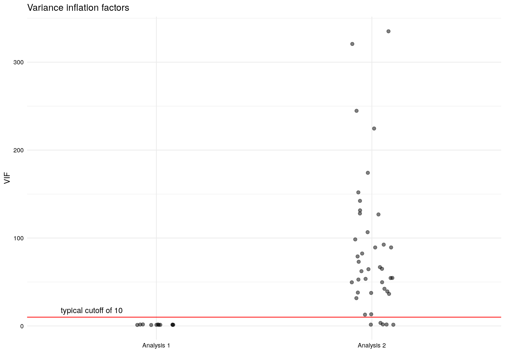</p>
<p>We can see that analysis 2 has variables with much higher
multicollinearity.</p>
<p>Let’s make this plot a little easier to see using the
<code>coord_trans()</code> function of the <code>ggplot2</code> package
with the <code>y ="log10"</code> argument. This does not change the
values, but adjusts the way the y axis is displayed with diminishing
distance between grid lines.</p>
<div class="sourceCode" id="cb120"><pre
class="sourceCode r"><code class="sourceCode r"><span id="cb120-1"><a href="#cb120-1" tabindex="-1"></a>vif_plot <span class="ot">&lt;-</span> vif_df <span class="sc">%&gt;%</span></span>
<span id="cb120-2"><a href="#cb120-2" tabindex="-1"></a>  <span class="fu">ggplot</span>(<span class="fu">aes</span>(<span class="at">x =</span> Analysis, <span class="at">y =</span> VIF)) <span class="sc">+</span></span>
<span id="cb120-3"><a href="#cb120-3" tabindex="-1"></a>  <span class="fu">geom_jitter</span>(<span class="at">width =</span> <span class="fl">0.1</span>, <span class="at">alpha =</span> <span class="fl">0.5</span>, <span class="at">size =</span> <span class="dv">2</span>) <span class="sc">+</span></span>
<span id="cb120-4"><a href="#cb120-4" tabindex="-1"></a>  <span class="fu">geom_hline</span>(<span class="at">yintercept =</span> <span class="dv">10</span>, <span class="at">color =</span> <span class="st">&quot;red&quot;</span>) <span class="sc">+</span></span>
<span id="cb120-5"><a href="#cb120-5" tabindex="-1"></a>  <span class="fu">annotate</span>(<span class="st">&quot;text&quot;</span>, <span class="at">x =</span> .<span class="dv">75</span>, <span class="at">y =</span> <span class="dv">13</span>, <span class="at">label =</span> <span class="st">&quot;typical cutoff of 10&quot;</span>) <span class="sc">+</span></span>
<span id="cb120-6"><a href="#cb120-6" tabindex="-1"></a>  <span class="fu">coord_trans</span>(<span class="at">y =</span> <span class="st">&quot;log10&quot;</span>) <span class="sc">+</span></span>
<span id="cb120-7"><a href="#cb120-7" tabindex="-1"></a>  <span class="fu">labs</span>(<span class="at">title =</span> <span class="st">&quot;Variance inflation factors&quot;</span>) <span class="sc">+</span></span>
<span id="cb120-8"><a href="#cb120-8" tabindex="-1"></a>  <span class="fu">theme_minimal</span>() <span class="sc">+</span></span>
<span id="cb120-9"><a href="#cb120-9" tabindex="-1"></a>  <span class="fu">theme</span>(</span>
<span id="cb120-10"><a href="#cb120-10" tabindex="-1"></a>    <span class="at">axis.title.x =</span> <span class="fu">element_blank</span>(),</span>
<span id="cb120-11"><a href="#cb120-11" tabindex="-1"></a>    <span class="at">axis.text.x =</span> <span class="fu">element_text</span>(<span class="at">color =</span> <span class="st">&quot;black&quot;</span>),</span>
<span id="cb120-12"><a href="#cb120-12" tabindex="-1"></a>    <span class="at">axis.text.y =</span> <span class="fu">element_text</span>(<span class="at">color =</span> <span class="st">&quot;black&quot;</span>)</span>
<span id="cb120-13"><a href="#cb120-13" tabindex="-1"></a>  )</span>
<span id="cb120-14"><a href="#cb120-14" tabindex="-1"></a></span>
<span id="cb120-15"><a href="#cb120-15" tabindex="-1"></a>vif_plot</span></code></pre></div>
<p>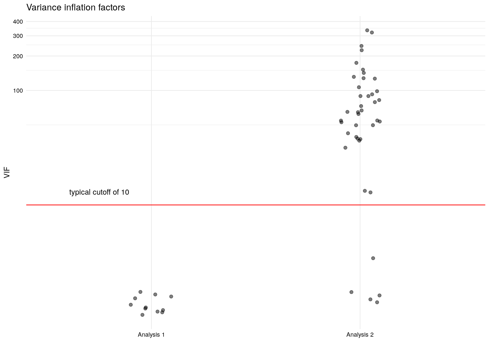</p>
<p>In many cases it would be advisable to remove one or more of these
variables and reassess the VIF values. There are also other options,
such as <a href="https://en.wikipedia.org/wiki/Tikhonov_regularization"
target="_blank">ridge regression</a>. However, both of these options
need to be done with care as they can also introduce bias into the
model.</p>
<p>In any case the presence of multicollinearity should encourage
further investigation about the design of the model, as the results may
not be reliable due to the increased level of instability of the
coefficient estimates.</p>
<p>See this <a
href="https://link.springer.com/content/pdf/10.1007/s11135-006-9018-6.pdf"
target="_blank">article</a> for a detailed discussion about what to
consider when your model has variables with high VIF values.</p>
</div>
</div>
<div id="data-visualization" class="section level1">
<h1><strong>Data Visualization</strong></h1>
<hr />
<p>Now lets make a plot that summarizes all of our findings.</p>
<p>We will use the <code>cowplot</code> package to put our plots
together.</p>
<p>We will use the <code>ggdraw()</code> function of this package. This
allows you to add labels and other plot aspects on top of existing
plots. Thus if we want to add a title element to our overall plot that
we will add to our combined plot we can use <code>ggdraw()</code> to
start and then the <code>draw_label()</code> function to add text.</p>
<p></p>
<pre><code>[1] &quot;gg&quot;     &quot;ggplot&quot;</code></pre>
<p>As you can see we know have plot object that just has the text
<code>"Multicollinearity and its effects"</code>.</p>
<p>Now we will create a subtitle in the same way.</p>
<div class="sourceCode" id="cb122"><pre
class="sourceCode r"><code class="sourceCode r"><span id="cb122-1"><a href="#cb122-1" tabindex="-1"></a>forward <span class="ot">&lt;-</span> <span class="fu">ggdraw</span>() <span class="sc">+</span></span>
<span id="cb122-2"><a href="#cb122-2" tabindex="-1"></a>  <span class="fu">draw_label</span>(</span>
<span id="cb122-3"><a href="#cb122-3" tabindex="-1"></a>    <span class="st">&quot;Analysis 1: 6 demographic variables</span><span class="sc">\n</span><span class="st">Analysis 2: 36 demographic variables&quot;</span>,</span>
<span id="cb122-4"><a href="#cb122-4" tabindex="-1"></a>    <span class="at">fontface =</span> <span class="st">&quot;bold&quot;</span>,</span>
<span id="cb122-5"><a href="#cb122-5" tabindex="-1"></a>    <span class="at">size =</span> <span class="dv">10</span>,</span>
<span id="cb122-6"><a href="#cb122-6" tabindex="-1"></a>    <span class="at">x =</span> <span class="dv">0</span>,</span>
<span id="cb122-7"><a href="#cb122-7" tabindex="-1"></a>    <span class="at">hjust =</span> <span class="sc">-</span><span class="fl">0.02</span></span>
<span id="cb122-8"><a href="#cb122-8" tabindex="-1"></a>  ) <span class="sc">+</span></span>
<span id="cb122-9"><a href="#cb122-9" tabindex="-1"></a>  <span class="fu">theme</span>(</span>
<span id="cb122-10"><a href="#cb122-10" tabindex="-1"></a>    <span class="at">plot.margin =</span> <span class="fu">margin</span>(<span class="dv">0</span>, <span class="dv">0</span>, <span class="dv">0</span>, <span class="dv">0</span>)</span>
<span id="cb122-11"><a href="#cb122-11" tabindex="-1"></a>  )</span>
<span id="cb122-12"><a href="#cb122-12" tabindex="-1"></a></span>
<span id="cb122-13"><a href="#cb122-13" tabindex="-1"></a>forward</span></code></pre></div>
<p></p>
<p>Now we will recreate our correlation plots with some slight
alterations. We want to remove our labels, because they will be too
small to see when we combine our plots. To do this we will use the
<code>theme_void()</code> function of the <code>ggplot2</code>
package.</p>
<p>Note that because we are layering ggplot2 objects we can’t use the
<code>%&gt;%</code> pipe to start with the existing correlation
plots.</p>
<div class="sourceCode" id="cb123"><pre
class="sourceCode r"><code class="sourceCode r"><span id="cb123-1"><a href="#cb123-1" tabindex="-1"></a>corr_mat_DONOHUE <span class="ot">&lt;-</span> corr_mat_DONOHUE <span class="sc">+</span></span>
<span id="cb123-2"><a href="#cb123-2" tabindex="-1"></a>  <span class="fu">theme_void</span>() <span class="sc">+</span></span>
<span id="cb123-3"><a href="#cb123-3" tabindex="-1"></a>  <span class="fu">theme</span>(<span class="at">plot.title =</span> <span class="fu">element_text</span>(<span class="at">size =</span> <span class="dv">8</span>, <span class="at">color =</span> <span class="st">&quot;black&quot;</span>)) <span class="sc">+</span></span>
<span id="cb123-4"><a href="#cb123-4" tabindex="-1"></a>  <span class="fu">labs</span>(<span class="at">title =</span> <span class="st">&quot;Analysis 1&quot;</span>)</span>
<span id="cb123-5"><a href="#cb123-5" tabindex="-1"></a></span>
<span id="cb123-6"><a href="#cb123-6" tabindex="-1"></a>corr_mat_LOTT <span class="ot">&lt;-</span> corr_mat_LOTT <span class="sc">+</span></span>
<span id="cb123-7"><a href="#cb123-7" tabindex="-1"></a>  <span class="fu">theme_void</span>() <span class="sc">+</span></span>
<span id="cb123-8"><a href="#cb123-8" tabindex="-1"></a>  <span class="fu">theme</span>(<span class="at">plot.title =</span> <span class="fu">element_text</span>(<span class="at">size =</span> <span class="dv">8</span>, <span class="at">color =</span> <span class="st">&quot;black&quot;</span>)) <span class="sc">+</span></span>
<span id="cb123-9"><a href="#cb123-9" tabindex="-1"></a>  <span class="fu">labs</span>(<span class="at">title =</span> <span class="st">&quot;Analysis 2&quot;</span>)</span></code></pre></div>
<p>OK we want to arrange our correlation plots to be in the top row of
our larger plot. Now we will use the <code>plot_grid()</code> function
to arrange the plots.</p>
<div class="sourceCode" id="cb124"><pre
class="sourceCode r"><code class="sourceCode r"><span id="cb124-1"><a href="#cb124-1" tabindex="-1"></a>row_A <span class="ot">&lt;-</span> <span class="fu">plot_grid</span>(corr_mat_DONOHUE,</span>
<span id="cb124-2"><a href="#cb124-2" tabindex="-1"></a>  corr_mat_LOTT,</span>
<span id="cb124-3"><a href="#cb124-3" tabindex="-1"></a>  <span class="at">nrow =</span> <span class="dv">1</span></span>
<span id="cb124-4"><a href="#cb124-4" tabindex="-1"></a>)</span>
<span id="cb124-5"><a href="#cb124-5" tabindex="-1"></a>row_A</span></code></pre></div>
<p>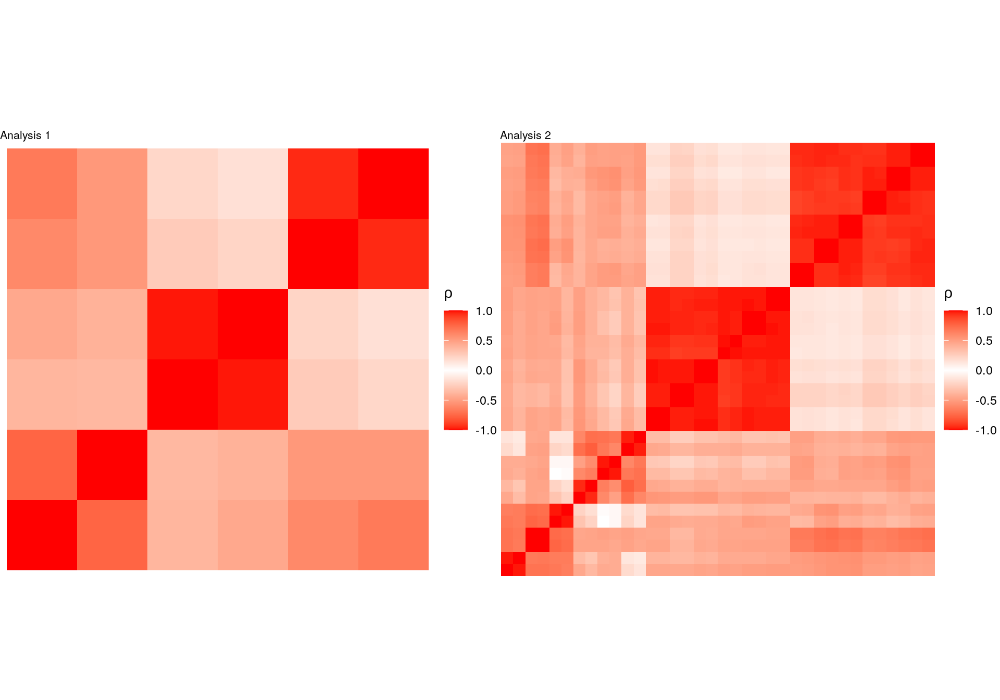</p>
<p>Nice! We have combined plots!</p>
<p>Now let’s add a title for these plots.</p>
<div class="sourceCode" id="cb125"><pre
class="sourceCode r"><code class="sourceCode r"><span id="cb125-1"><a href="#cb125-1" tabindex="-1"></a>title_A <span class="ot">&lt;-</span> <span class="fu">ggdraw</span>() <span class="sc">+</span></span>
<span id="cb125-2"><a href="#cb125-2" tabindex="-1"></a>  <span class="fu">draw_label</span>(</span>
<span id="cb125-3"><a href="#cb125-3" tabindex="-1"></a>    <span class="st">&quot;Correlation between variables can induce multicollinearity&quot;</span>,</span>
<span id="cb125-4"><a href="#cb125-4" tabindex="-1"></a>    <span class="at">fontface =</span> <span class="st">&quot;bold&quot;</span>,</span>
<span id="cb125-5"><a href="#cb125-5" tabindex="-1"></a>    <span class="at">size =</span> <span class="dv">14</span>,</span>
<span id="cb125-6"><a href="#cb125-6" tabindex="-1"></a>    <span class="at">x =</span> <span class="dv">0</span>,</span>
<span id="cb125-7"><a href="#cb125-7" tabindex="-1"></a>    <span class="at">hjust =</span> <span class="sc">-</span><span class="fl">0.01</span></span>
<span id="cb125-8"><a href="#cb125-8" tabindex="-1"></a>  ) <span class="sc">+</span></span>
<span id="cb125-9"><a href="#cb125-9" tabindex="-1"></a>  <span class="fu">theme</span>(</span>
<span id="cb125-10"><a href="#cb125-10" tabindex="-1"></a>    <span class="at">plot.margin =</span> <span class="fu">margin</span>(<span class="dv">0</span>, <span class="dv">0</span>, <span class="dv">0</span>, <span class="dv">0</span>)</span>
<span id="cb125-11"><a href="#cb125-11" tabindex="-1"></a>  )</span>
<span id="cb125-12"><a href="#cb125-12" tabindex="-1"></a></span>
<span id="cb125-13"><a href="#cb125-13" tabindex="-1"></a>plot_A <span class="ot">&lt;-</span> <span class="fu">plot_grid</span>(title_A,</span>
<span id="cb125-14"><a href="#cb125-14" tabindex="-1"></a>  row_A,</span>
<span id="cb125-15"><a href="#cb125-15" tabindex="-1"></a>  <span class="at">ncol =</span> <span class="dv">1</span>,</span>
<span id="cb125-16"><a href="#cb125-16" tabindex="-1"></a>  <span class="at">rel_heights =</span> <span class="fu">c</span>(<span class="fl">0.1</span>, <span class="dv">1</span>)</span>
<span id="cb125-17"><a href="#cb125-17" tabindex="-1"></a>)</span></code></pre></div>
<p>For our second row in our larger plot we want to have the formula for
calculating VIF values on the left and the plot that we created
previously showing VIF values on the right.</p>
<p>First we will create a plot object that just has the formula.</p>
<p>To do so we are going to create a plot with a large label in the
middle containing the formula. Then we will use the
<code>theme_void()</code> function again to remove the axis labels and
background.</p>
<p>To create our plot we will first plot values from 1-10 for both the x
and y axis, allowing us to center the formula at the x and y values of
5.</p>
<p>To type the formula we will use <a
href="https://rpruim.github.io/s341/S19/from-class/MathinRmd.html"
target="_blank">LaTeX mathematical notation</a>.</p>
<p>The start and end of inline mathematical formulas are specified using
dollar signs (<code>$</code>).<br />
Subscripts are written by using an underscore (<code>_</code>) and
brackets (<code>{}</code>) indicate the start and end of the
subscript.</p>
<p>Fractions are indicated using
<code>\frac{numerator}{denominator}</code>.</p>
<p>Superscripts are created using the carrot symbol (<code>^</code>) and
brackets (<code>{}</code>) indicate the start and end of the
superscript.</p>
<p>Greek letters are created by using, for example,
<code>\beta</code>.</p>
<p>In the case of the fraction and Greek letters an additional
<code>\</code> is needed in the <code>Tex()</code> function.</p>
<p>We will use the <code>TeX()</code> function of the
<code>latex2exp</code> package to convert our LaTeX string to a <a
href="https://stat.ethz.ch/R-manual/R-devel/library/grDevices/html/plotmath.html"
target="_blank">plotmath expression</a> (a mathematical notation in R to
be used in plots).</p>
<div class="sourceCode" id="cb126"><pre
class="sourceCode r"><code class="sourceCode r"><span id="cb126-1"><a href="#cb126-1" tabindex="-1"></a>empty_df <span class="ot">&lt;-</span> <span class="fu">cbind</span>(<span class="fu">c</span>(<span class="dv">1</span><span class="sc">:</span><span class="dv">10</span>), <span class="fu">c</span>(<span class="dv">1</span><span class="sc">:</span><span class="dv">10</span>)) <span class="sc">%&gt;%</span></span>
<span id="cb126-2"><a href="#cb126-2" tabindex="-1"></a>  <span class="fu">as.data.frame</span>()</span>
<span id="cb126-3"><a href="#cb126-3" tabindex="-1"></a></span>
<span id="cb126-4"><a href="#cb126-4" tabindex="-1"></a><span class="fu">colnames</span>(empty_df) <span class="ot">&lt;-</span> <span class="fu">c</span>(<span class="st">&quot;X&quot;</span>, <span class="st">&quot;Y&quot;</span>)</span>
<span id="cb126-5"><a href="#cb126-5" tabindex="-1"></a></span>
<span id="cb126-6"><a href="#cb126-6" tabindex="-1"></a>plot_B1 <span class="ot">&lt;-</span> <span class="fu">ggplot</span>(empty_df, <span class="fu">aes</span>(<span class="at">x =</span> X, <span class="at">y =</span> Y)) <span class="sc">+</span></span>
<span id="cb126-7"><a href="#cb126-7" tabindex="-1"></a>  <span class="fu">annotate</span>(<span class="st">&quot;text&quot;</span>,</span>
<span id="cb126-8"><a href="#cb126-8" tabindex="-1"></a>    <span class="at">x =</span> <span class="dv">5</span>,</span>
<span id="cb126-9"><a href="#cb126-9" tabindex="-1"></a>    <span class="at">y =</span> <span class="dv">8</span>,</span>
<span id="cb126-10"><a href="#cb126-10" tabindex="-1"></a>    <span class="at">label =</span> <span class="fu">TeX</span>(<span class="st">&quot;$X_{1} = </span><span class="sc">\\</span><span class="st">beta_{0} + </span><span class="sc">\\</span><span class="st">beta_{2}X_{2} + </span><span class="sc">\\</span><span class="st">beta_{3}X_{3}...+</span><span class="sc">\\</span><span class="st">beta_{k}X_{k}+e$&quot;</span>),</span>
<span id="cb126-11"><a href="#cb126-11" tabindex="-1"></a>    <span class="at">size =</span> <span class="dv">7</span></span>
<span id="cb126-12"><a href="#cb126-12" tabindex="-1"></a>  ) <span class="sc">+</span></span>
<span id="cb126-13"><a href="#cb126-13" tabindex="-1"></a>  <span class="fu">ylim</span>(<span class="dv">0</span>, <span class="dv">10</span>) <span class="sc">+</span></span>
<span id="cb126-14"><a href="#cb126-14" tabindex="-1"></a>  <span class="fu">xlim</span>(<span class="dv">0</span>, <span class="dv">10</span>) <span class="sc">+</span></span>
<span id="cb126-15"><a href="#cb126-15" tabindex="-1"></a>  <span class="fu">annotate</span>(<span class="st">&quot;text&quot;</span>,</span>
<span id="cb126-16"><a href="#cb126-16" tabindex="-1"></a>    <span class="at">x =</span> <span class="fl">5.9</span>,</span>
<span id="cb126-17"><a href="#cb126-17" tabindex="-1"></a>    <span class="at">y =</span> <span class="fl">5.5</span>,</span>
<span id="cb126-18"><a href="#cb126-18" tabindex="-1"></a>    <span class="at">label =</span> <span class="fu">TeX</span>(<span class="st">&quot;$R_1^{2}$&quot;</span>),</span>
<span id="cb126-19"><a href="#cb126-19" tabindex="-1"></a>    <span class="at">size =</span> <span class="dv">7</span></span>
<span id="cb126-20"><a href="#cb126-20" tabindex="-1"></a>  ) <span class="sc">+</span></span>
<span id="cb126-21"><a href="#cb126-21" tabindex="-1"></a>  <span class="fu">ylim</span>(<span class="dv">0</span>, <span class="dv">10</span>) <span class="sc">+</span></span>
<span id="cb126-22"><a href="#cb126-22" tabindex="-1"></a>  <span class="fu">xlim</span>(<span class="dv">0</span>, <span class="dv">10</span>) <span class="sc">+</span></span>
<span id="cb126-23"><a href="#cb126-23" tabindex="-1"></a>  <span class="fu">annotate</span>(<span class="st">&quot;segment&quot;</span>, <span class="at">x =</span> <span class="dv">5</span>, <span class="at">y =</span> <span class="dv">6</span>, <span class="at">xend =</span> <span class="dv">5</span>, <span class="at">yend =</span> <span class="fl">4.5</span>,</span>
<span id="cb126-24"><a href="#cb126-24" tabindex="-1"></a>    <span class="at">arrow =</span> <span class="fu">arrow</span>(<span class="at">angle =</span> <span class="dv">45</span>, <span class="at">ends =</span> <span class="st">&quot;last&quot;</span>, <span class="at">type =</span> <span class="st">&quot;open&quot;</span>),</span>
<span id="cb126-25"><a href="#cb126-25" tabindex="-1"></a>    <span class="at">linewidth =</span> <span class="fl">1.8</span>,</span>
<span id="cb126-26"><a href="#cb126-26" tabindex="-1"></a>    <span class="at">color =</span> <span class="st">&quot;black&quot;</span>,</span>
<span id="cb126-27"><a href="#cb126-27" tabindex="-1"></a>    <span class="at">lineend =</span> <span class="st">&quot;butt&quot;</span>,</span>
<span id="cb126-28"><a href="#cb126-28" tabindex="-1"></a>    <span class="at">linejoin =</span> <span class="st">&quot;mitre&quot;</span></span>
<span id="cb126-29"><a href="#cb126-29" tabindex="-1"></a>  ) <span class="sc">+</span></span>
<span id="cb126-30"><a href="#cb126-30" tabindex="-1"></a>  <span class="fu">annotate</span>(<span class="st">&quot;text&quot;</span>,</span>
<span id="cb126-31"><a href="#cb126-31" tabindex="-1"></a>    <span class="at">x =</span> <span class="dv">5</span>,</span>
<span id="cb126-32"><a href="#cb126-32" tabindex="-1"></a>    <span class="at">y =</span> <span class="dv">2</span>,</span>
<span id="cb126-33"><a href="#cb126-33" tabindex="-1"></a>    <span class="at">label =</span> <span class="fu">TeX</span>(<span class="st">&quot;$VIF_{1} = </span><span class="sc">\\</span><span class="st">frac{1}{1-R_{1}^{2}}$&quot;</span>),</span>
<span id="cb126-34"><a href="#cb126-34" tabindex="-1"></a>    <span class="at">size =</span> <span class="dv">7</span></span>
<span id="cb126-35"><a href="#cb126-35" tabindex="-1"></a>  )</span>
<span id="cb126-36"><a href="#cb126-36" tabindex="-1"></a></span>
<span id="cb126-37"><a href="#cb126-37" tabindex="-1"></a></span>
<span id="cb126-38"><a href="#cb126-38" tabindex="-1"></a></span>
<span id="cb126-39"><a href="#cb126-39" tabindex="-1"></a></span>
<span id="cb126-40"><a href="#cb126-40" tabindex="-1"></a>plot_B1</span></code></pre></div>
<p>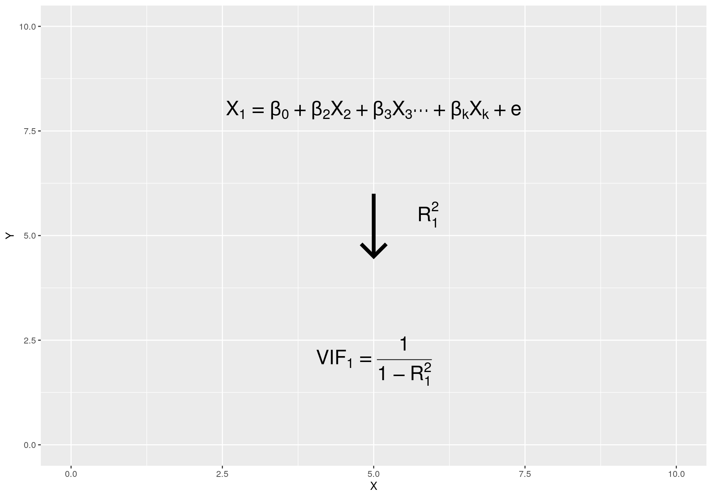</p>
<div class="sourceCode" id="cb127"><pre
class="sourceCode r"><code class="sourceCode r"><span id="cb127-1"><a href="#cb127-1" tabindex="-1"></a>plot_B1 <span class="ot">&lt;-</span> plot_B1 <span class="sc">+</span></span>
<span id="cb127-2"><a href="#cb127-2" tabindex="-1"></a>  <span class="fu">theme_void</span>()</span>
<span id="cb127-3"><a href="#cb127-3" tabindex="-1"></a></span>
<span id="cb127-4"><a href="#cb127-4" tabindex="-1"></a>plot_B1</span></code></pre></div>
<p>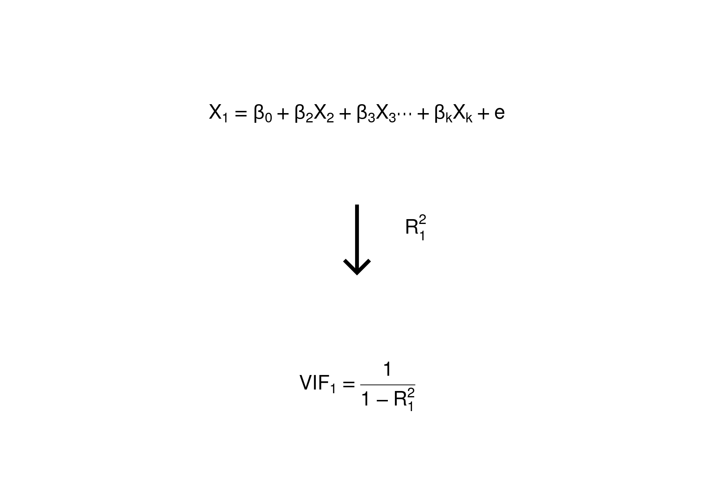</p>
<p>Now we will combine this with the VIF plot.</p>
<div class="sourceCode" id="cb128"><pre
class="sourceCode r"><code class="sourceCode r"><span id="cb128-1"><a href="#cb128-1" tabindex="-1"></a>plot_B2 <span class="ot">&lt;-</span> vif_plot <span class="sc">+</span></span>
<span id="cb128-2"><a href="#cb128-2" tabindex="-1"></a>  <span class="fu">theme</span>(<span class="at">axis.text.x =</span> <span class="fu">element_text</span>(<span class="at">size =</span> <span class="dv">8</span>))</span>
<span id="cb128-3"><a href="#cb128-3" tabindex="-1"></a></span>
<span id="cb128-4"><a href="#cb128-4" tabindex="-1"></a>row_B <span class="ot">&lt;-</span> <span class="fu">plot_grid</span>(plot_B1,</span>
<span id="cb128-5"><a href="#cb128-5" tabindex="-1"></a>  plot_B2,</span>
<span id="cb128-6"><a href="#cb128-6" tabindex="-1"></a>  <span class="at">nrow =</span> <span class="dv">1</span></span>
<span id="cb128-7"><a href="#cb128-7" tabindex="-1"></a>)</span>
<span id="cb128-8"><a href="#cb128-8" tabindex="-1"></a></span>
<span id="cb128-9"><a href="#cb128-9" tabindex="-1"></a>title_B <span class="ot">&lt;-</span> <span class="fu">ggdraw</span>() <span class="sc">+</span></span>
<span id="cb128-10"><a href="#cb128-10" tabindex="-1"></a>  <span class="fu">draw_label</span>(</span>
<span id="cb128-11"><a href="#cb128-11" tabindex="-1"></a>    <span class="st">&quot;Variance inflation factors can be used to identify multicollinearity when present&quot;</span>,</span>
<span id="cb128-12"><a href="#cb128-12" tabindex="-1"></a>    <span class="at">fontface =</span> <span class="st">&quot;bold&quot;</span>,</span>
<span id="cb128-13"><a href="#cb128-13" tabindex="-1"></a>    <span class="at">size =</span> <span class="dv">14</span>,</span>
<span id="cb128-14"><a href="#cb128-14" tabindex="-1"></a>    <span class="at">x =</span> <span class="dv">0</span>,</span>
<span id="cb128-15"><a href="#cb128-15" tabindex="-1"></a>    <span class="at">hjust =</span> <span class="sc">-</span>.<span class="dv">01</span>,</span>
<span id="cb128-16"><a href="#cb128-16" tabindex="-1"></a>  ) <span class="sc">+</span></span>
<span id="cb128-17"><a href="#cb128-17" tabindex="-1"></a>  <span class="fu">theme</span>(</span>
<span id="cb128-18"><a href="#cb128-18" tabindex="-1"></a>    <span class="at">plot.margin =</span> <span class="fu">margin</span>(<span class="dv">0</span>, <span class="dv">0</span>, <span class="dv">0</span>, <span class="dv">0</span>)</span>
<span id="cb128-19"><a href="#cb128-19" tabindex="-1"></a>  )</span>
<span id="cb128-20"><a href="#cb128-20" tabindex="-1"></a></span>
<span id="cb128-21"><a href="#cb128-21" tabindex="-1"></a>plot_B <span class="ot">&lt;-</span> <span class="fu">plot_grid</span>(title_B,</span>
<span id="cb128-22"><a href="#cb128-22" tabindex="-1"></a>  row_B,</span>
<span id="cb128-23"><a href="#cb128-23" tabindex="-1"></a>  <span class="at">ncol =</span> <span class="dv">1</span>,</span>
<span id="cb128-24"><a href="#cb128-24" tabindex="-1"></a>  <span class="at">rel_heights =</span> <span class="fu">c</span>(<span class="fl">0.1</span>, <span class="dv">1</span>)</span>
<span id="cb128-25"><a href="#cb128-25" tabindex="-1"></a>)</span>
<span id="cb128-26"><a href="#cb128-26" tabindex="-1"></a></span>
<span id="cb128-27"><a href="#cb128-27" tabindex="-1"></a>plot_B</span></code></pre></div>
<p>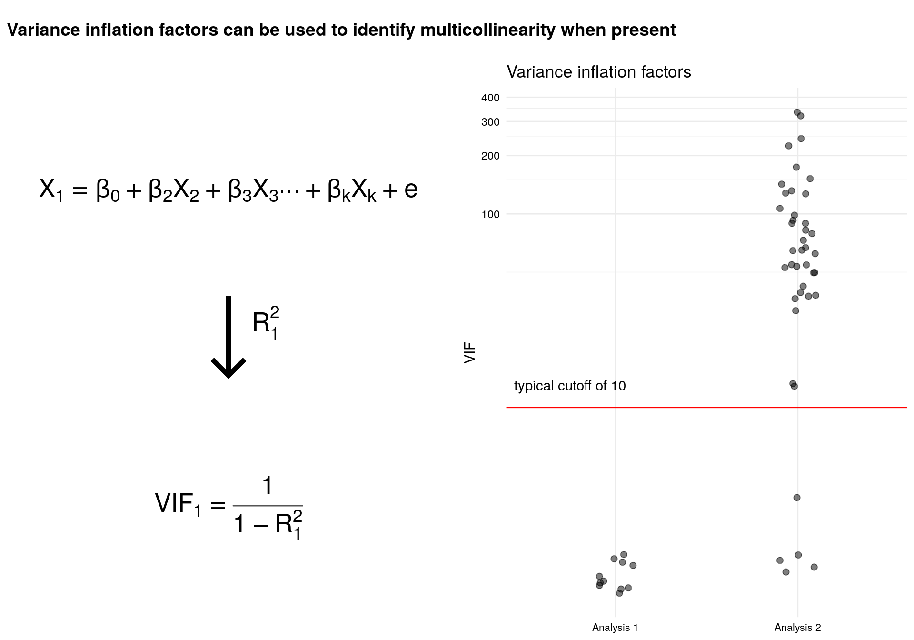</p>
<p>Now for the third row we want to include the
<code>comparing_analyses_plot</code> and the
<code>simulation_plot</code>.</p>
<div class="sourceCode" id="cb129"><pre
class="sourceCode r"><code class="sourceCode r"><span id="cb129-1"><a href="#cb129-1" tabindex="-1"></a>plot_C1 <span class="ot">&lt;-</span> comparing_analyses_plot <span class="sc">+</span></span>
<span id="cb129-2"><a href="#cb129-2" tabindex="-1"></a>  <span class="fu">theme</span>(</span>
<span id="cb129-3"><a href="#cb129-3" tabindex="-1"></a>    <span class="at">axis.text.x =</span> <span class="fu">element_text</span>(<span class="at">size =</span> <span class="dv">8</span>),</span>
<span id="cb129-4"><a href="#cb129-4" tabindex="-1"></a>    <span class="at">axis.title.x =</span> <span class="fu">element_blank</span>()</span>
<span id="cb129-5"><a href="#cb129-5" tabindex="-1"></a>  ) <span class="sc">+</span></span>
<span id="cb129-6"><a href="#cb129-6" tabindex="-1"></a>  <span class="fu">labs</span>(</span>
<span id="cb129-7"><a href="#cb129-7" tabindex="-1"></a>    <span class="at">title =</span> <span class="st">&quot;Results in different estimates&quot;</span>,</span>
<span id="cb129-8"><a href="#cb129-8" tabindex="-1"></a>    <span class="at">subtitle =</span> <span class="st">&quot;Different demographic groupings can change direction of estimate&quot;</span></span>
<span id="cb129-9"><a href="#cb129-9" tabindex="-1"></a>  )</span>
<span id="cb129-10"><a href="#cb129-10" tabindex="-1"></a></span>
<span id="cb129-11"><a href="#cb129-11" tabindex="-1"></a>plot_C2 <span class="ot">&lt;-</span> simulation_plot <span class="sc">+</span></span>
<span id="cb129-12"><a href="#cb129-12" tabindex="-1"></a>  <span class="fu">labs</span>(<span class="at">title =</span> <span class="st">&quot;Reduces precision in estimates&quot;</span>)</span>
<span id="cb129-13"><a href="#cb129-13" tabindex="-1"></a></span>
<span id="cb129-14"><a href="#cb129-14" tabindex="-1"></a>row_C <span class="ot">&lt;-</span> <span class="fu">plot_grid</span>(plot_C1,</span>
<span id="cb129-15"><a href="#cb129-15" tabindex="-1"></a>  plot_C2,</span>
<span id="cb129-16"><a href="#cb129-16" tabindex="-1"></a>  <span class="at">nrow =</span> <span class="dv">1</span></span>
<span id="cb129-17"><a href="#cb129-17" tabindex="-1"></a>)</span>
<span id="cb129-18"><a href="#cb129-18" tabindex="-1"></a></span>
<span id="cb129-19"><a href="#cb129-19" tabindex="-1"></a>title_C <span class="ot">&lt;-</span> <span class="fu">ggdraw</span>() <span class="sc">+</span></span>
<span id="cb129-20"><a href="#cb129-20" tabindex="-1"></a>  <span class="fu">draw_label</span>(</span>
<span id="cb129-21"><a href="#cb129-21" tabindex="-1"></a>    <span class="st">&quot;Multicollinearity can have an effect on statistical inference&quot;</span>,</span>
<span id="cb129-22"><a href="#cb129-22" tabindex="-1"></a>    <span class="at">fontface =</span> <span class="st">&quot;bold&quot;</span>,</span>
<span id="cb129-23"><a href="#cb129-23" tabindex="-1"></a>    <span class="at">size =</span> <span class="dv">14</span>,</span>
<span id="cb129-24"><a href="#cb129-24" tabindex="-1"></a>    <span class="at">x =</span> <span class="dv">0</span>,</span>
<span id="cb129-25"><a href="#cb129-25" tabindex="-1"></a>    <span class="at">hjust =</span> <span class="sc">-</span><span class="fl">0.01</span></span>
<span id="cb129-26"><a href="#cb129-26" tabindex="-1"></a>  ) <span class="sc">+</span></span>
<span id="cb129-27"><a href="#cb129-27" tabindex="-1"></a>  <span class="fu">theme</span>(</span>
<span id="cb129-28"><a href="#cb129-28" tabindex="-1"></a>    <span class="at">plot.margin =</span> <span class="fu">margin</span>(<span class="dv">0</span>, <span class="dv">0</span>, <span class="dv">0</span>, <span class="dv">0</span>)</span>
<span id="cb129-29"><a href="#cb129-29" tabindex="-1"></a>  )</span>
<span id="cb129-30"><a href="#cb129-30" tabindex="-1"></a></span>
<span id="cb129-31"><a href="#cb129-31" tabindex="-1"></a>plot_C <span class="ot">&lt;-</span> <span class="fu">plot_grid</span>(title_C,</span>
<span id="cb129-32"><a href="#cb129-32" tabindex="-1"></a>  row_C,</span>
<span id="cb129-33"><a href="#cb129-33" tabindex="-1"></a>  <span class="at">ncol =</span> <span class="dv">1</span>,</span>
<span id="cb129-34"><a href="#cb129-34" tabindex="-1"></a>  <span class="at">rel_heights =</span> <span class="fu">c</span>(<span class="fl">0.1</span>, <span class="dv">1</span>)</span>
<span id="cb129-35"><a href="#cb129-35" tabindex="-1"></a>)</span>
<span id="cb129-36"><a href="#cb129-36" tabindex="-1"></a></span>
<span id="cb129-37"><a href="#cb129-37" tabindex="-1"></a>plot_C</span></code></pre></div>
<p>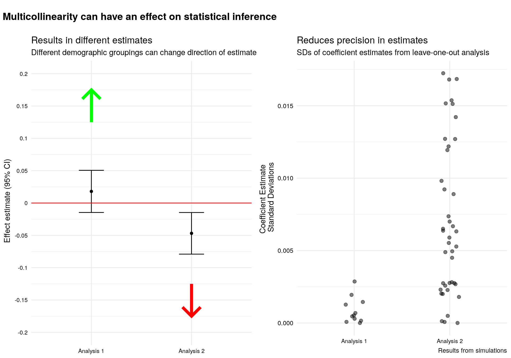</p>
<p>Now that we have all of our rows we can combine everything together.
We will also make the background of the plot white, which would be
transparent otherwise.</p>
<div class="sourceCode" id="cb130"><pre
class="sourceCode r"><code class="sourceCode r"><span id="cb130-1"><a href="#cb130-1" tabindex="-1"></a>plots <span class="ot">&lt;-</span> <span class="fu">plot_grid</span>(plot_A,</span>
<span id="cb130-2"><a href="#cb130-2" tabindex="-1"></a>  plot_B,</span>
<span id="cb130-3"><a href="#cb130-3" tabindex="-1"></a>  plot_C,</span>
<span id="cb130-4"><a href="#cb130-4" tabindex="-1"></a>  <span class="at">ncol =</span> <span class="dv">1</span>,</span>
<span id="cb130-5"><a href="#cb130-5" tabindex="-1"></a>  <span class="at">rel_heights =</span> <span class="fu">c</span>(<span class="dv">1</span>, <span class="dv">1</span>, <span class="dv">1</span>)) </span>
<span id="cb130-6"><a href="#cb130-6" tabindex="-1"></a></span>
<span id="cb130-7"><a href="#cb130-7" tabindex="-1"></a></span>
<span id="cb130-8"><a href="#cb130-8" tabindex="-1"></a>mainplot <span class="ot">&lt;-</span> <span class="fu">plot_grid</span>(title_plots,</span>
<span id="cb130-9"><a href="#cb130-9" tabindex="-1"></a>  forward,</span>
<span id="cb130-10"><a href="#cb130-10" tabindex="-1"></a>  plots,</span>
<span id="cb130-11"><a href="#cb130-11" tabindex="-1"></a>  <span class="at">ncol =</span> <span class="dv">1</span>,</span>
<span id="cb130-12"><a href="#cb130-12" tabindex="-1"></a>  <span class="at">rel_heights =</span> <span class="fu">c</span>(</span>
<span id="cb130-13"><a href="#cb130-13" tabindex="-1"></a>    <span class="fl">0.05</span>,</span>
<span id="cb130-14"><a href="#cb130-14" tabindex="-1"></a>    <span class="fl">0.05</span>,</span>
<span id="cb130-15"><a href="#cb130-15" tabindex="-1"></a>    <span class="dv">1</span></span>
<span id="cb130-16"><a href="#cb130-16" tabindex="-1"></a>  )</span>
<span id="cb130-17"><a href="#cb130-17" tabindex="-1"></a>) <span class="sc">+</span></span>
<span id="cb130-18"><a href="#cb130-18" tabindex="-1"></a>  <span class="fu">theme</span>(<span class="at">plot.background =</span> <span class="fu">element_rect</span>(<span class="at">fill =</span> <span class="st">&quot;white&quot;</span>))</span>
<span id="cb130-19"><a href="#cb130-19" tabindex="-1"></a></span>
<span id="cb130-20"><a href="#cb130-20" tabindex="-1"></a>mainplot</span></code></pre></div>
<p>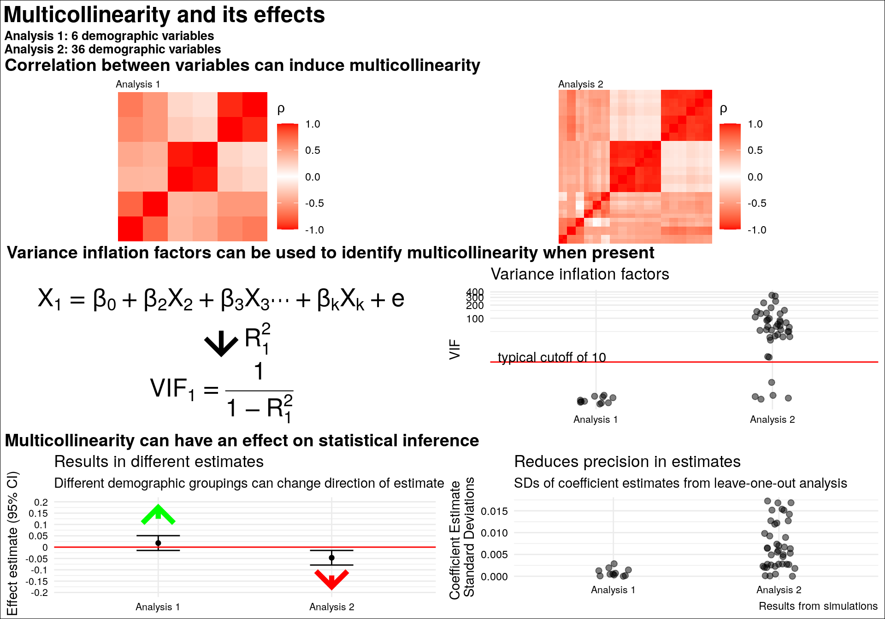</p>
</div>
<div id="summary" class="section level1">
<h1><strong>Summary</strong></h1>
<hr />
<p>This case study has introduced the concept of multicollinearity by
exploring data related to violent crimes and right-to-carry gun laws. We
also introduced the topic of panel data as a special type of
longitudinal data that includes data of 2 or more individuals or groups
over 2 or more time points. We learned that we can use the
<code>plm</code> package to perform panel linear regression analysis. We
learned that the fixed effect model in panel analysis actually makes the
least assumptions, and is therefore often the most appropriate test.</p>
<p>By evaluating two analyses that were identical except for the
inclusion of extra demographic variables (Analysis 1 included 6, while
Analysis 2 included 36), we discovered that redundant and collinear
variables can change the directionality and magnitude of our
findings.</p>
<p>We learned that by looking at the correlation between pairs of
explanatory variables we can get a sense about whether multicollinearity
may exist in our data.</p>
<p>We learned that we can evaluate the stability of our coefficient
estimates across sub-samples or calculate variance inflation factor
(VIF) values to get a sense of the presence and severity of
multicollinearity.</p>
<p>We learned that often a rule of thumb of &gt;10 is used as a
threshold for raising concern about the severity of multicollinearity.
However, we also learned that (as often is the case with thresholds)
more care may be required.</p>
<p>Overall we learned that multicollinearity can bias our regression
findings and it is good practice to check for multicollinearity when
performing regression analysis. It is something to keep in mind when we
encounter coefficient estimates that are unexpected.</p>
<p>Importantly this case study showcases how methodological details,
like how we decide to parse our demographic variables, can have great
consequences on the results of our analyses.</p>
</div>
<div id="suggested-homework" class="section level1">
<h1><strong>Suggested Homework</strong></h1>
<hr />
<p>Ask students to remove one or more of the demographic variables with
high VIF values from the Mustard and Lott-like panel data and perform
the panel linear regression analysis again, as well as calculate the VIF
values.</p>
<p>Ask the students to discuss how this possibly changed the
results.</p>
</div>
<div id="more-case-studies" class="section level1">
<h1><strong>More Case Studies</strong></h1>
<hr />
<p>Interested in exploring more open case studies? Visit <strong><a
href="https://opencasestudies.org">opencasestudies.org</a></strong> to
access additional studies and open educational resources.</p>
</div>
<div id="additional-information" class="section level1">
<h1><strong>Additional Information</strong></h1>
<hr />
<div id="helpful-links" class="section level2">
<h2><strong>Helpful Links</strong></h2>
<hr />
<p><a href="https://www.tidyverse.org/"
target="_blank">Tidyverse</a><br />
Please see <a
href="https://opencasestudies.github.io/ocs-bp-co2-emissions/"
target="_blank">this case study</a> for more details on using
<code>ggplot2</code><br />
<a
href="https://www.bmj.com/about-bmj/resources-readers/publications/epidemiology-uninitiated/7-longitudinal-studies"
target="_blank">Longitudinal studies</a><br />
<a href="https://en.wikipedia.org/wiki/Panel_data" target="_blank">Panel
data</a><br />
<a href="https://en.wikipedia.org/wiki/Confidence_interval"
target="_blank">Confidence intervals</a><br />
<a href="https://en.wikipedia.org/wiki/Linear_regression"
target="_blank">Linear regression</a><br />
<a href="https://en.wikipedia.org/wiki/Panel_analysis"
target="_blank">panel regression analysis</a><br />
<a
href="https://en.wikipedia.org/wiki/Durbin%E2%80%93Wu%E2%80%93Hausman_test"
target="_blank">Hausman test</a> <a
href="https://en.wikipedia.org/wiki/Resampling_(statistics)"
target="_blank">Resampling</a><br />
<a href="https://en.wikipedia.org/wiki/Variance_inflation_factor"
target="_blank">Variance inflation factor (VIF)</a><br />
<a href="https://en.wikipedia.org/wiki/Coefficient_of_determination"
target="_blank"><span class="math inline">\(R^2\)</span> coefficient of
determination</a><br />
<a href="https://en.wikipedia.org/wiki/Tikhonov_regularization"
target="_blank">Ridge regression</a><br />
<a href="https://rpruim.github.io/s341/S19/from-class/MathinRmd.html"
target="_blank">LaTeX mathematical notation</a></p>
<p>For more information on linear regression see this <a
href="https://rafalab.github.io/dsbook/linear-models.html#linear-regression-in-the-tidyverse"
target="_blank">book</a> and this <a
href="https://opencasestudies.github.io/ocs-bp-diet/"
target="_blank">case study</a>.</p>
<p>For more information on the different types of panel regression
models see this <a
href="https://bookdown.org/ccolonescu/RPoE4/panel-data-models.html">book</a>,
<a href="https://www.bauer.uh.edu/rsusmel/phd/ec1-15.pdf">here</a>, and
<a
href="https://sites.google.com/site/econometricsacademy/econometrics-models/panel-data-models">here</a>.</p>
<p>For more information on implementing panel regression in R using the
<code>plm</code> package, see <a
href="https://cran.r-project.org/package=plm" target="_blank">here</a>
and <a href="http://www.princeton.edu/~otorres/Panel101R.pdf"
target="_blank">here</a>.</p>
<p>For more information on multicollinearity and VIF, see this <a
href="https://link.springer.com/content/pdf/10.1007/s11135-006-9018-6.pdf"
target="_blank">article</a>.DOI 10.1007/s11135-006-9018-6</p>
<p>The articles used to motivate this case study are:<br />
<a
href="https://chicagounbound.uchicago.edu/cgi/viewcontent.cgi?article=1150&amp;context=law_and_economics"
target="_blank">Mustard and Lott</a><br />
<a href="https://www.nber.org/papers/w23510.pdf"
target="_blank">Donohue, et al.</a><br />
<a href="https://en.wikipedia.org/wiki/More_Guns,_Less_Crime"
target="_blank">See here for a list of studies on this topic</a></p>
<p>For tutorials about using fixed effect models in panel analysis with
the <code>plm</code> package, see <a
href="https://rpubs.com/rslbliss/fixed_effects">here</a> and <a
href="http://karthur.org/2019/implementing-fixed-effects-panel-models-in-r.html">here</a></p>
<p><u><strong>Packages used in this case study:</strong> </u></p>
<table>
<colgroup>
<col width="43%" />
<col width="56%" />
</colgroup>
<thead>
<tr class="header">
<th>Package</th>
<th>Use in this case study</th>
</tr>
</thead>
<tbody>
<tr class="odd">
<td><a href="https://github.com/jennybc/here_here"
target="_blank">here</a></td>
<td>to easily load and save data</td>
</tr>
<tr class="even">
<td><a href="https://dplyr.tidyverse.org/"
target="_blank">dplyr</a></td>
<td>to arrange/filter/select/compare specific subsets of the data</td>
</tr>
<tr class="odd">
<td><a href="https://purrr.tidyverse.org/"
target="_blank">purrr</a></td>
<td>to import the data in all the different excel and csv files
efficiently</td>
</tr>
<tr class="even">
<td><a href="https://tibble.tidyverse.org/"
target="_blank">tibble</a></td>
<td>to create data objects that we can manipulate with
<code>dplyr</code>/<code>stringr</code>/<code>tidyr</code>/<code>purrr</code></td>
</tr>
<tr class="odd">
<td><a href="https://ggplot2.tidyverse.org/"
target="_blank">ggplot2</a></td>
<td>to create plots</td>
</tr>
<tr class="even">
<td><a
href="https://cran.r-project.org/web/packages/ggrepel/vignettes/ggrepel.html"
target="_blank">ggrepel</a></td>
<td>to allow labels in figures not to overlap</td>
</tr>
<tr class="odd">
<td><a href="https://cran.r-project.org/package=plm"
target="_blank">plm</a></td>
<td>to work with panel data fitting fixed effects and linear regression
models</td>
</tr>
<tr class="even">
<td><a
href="https://cran.r-project.org/web/packages/broom/vignettes/broom.html"
target="_blank">broom</a></td>
<td>to create nicely formatted model output</td>
</tr>
<tr class="odd">
<td><a href="https://github.com/ggobi/ggally"
target="_blank">GGally</a></td>
<td>to extend ggplot2 functionality to easily create more complex
plots</td>
</tr>
<tr class="even">
<td><a
href="https://www.rdocumentation.org/packages/ggcorrplot/versions/0.1.3"
target="_blank">ggcorrplot</a></td>
<td>to easily visualize a correlation matrix</td>
</tr>
<tr class="odd">
<td><a href="https://rsample.tidymodels.org"
target="_blank">rsample</a></td>
<td>to split our sample for the simulation analysis</td>
</tr>
<tr class="even">
<td><a href="https://rstudio.github.io/DT/" target="_blank">DT</a></td>
<td>to create interactive and searchable tables</td>
</tr>
<tr class="odd">
<td><a
href="https://cran.r-project.org/web/packages/car/vignettes/embedding.pdf"
target="_blank">car</a></td>
<td>to calculate VIF values on linear model output</td>
</tr>
<tr class="even">
<td><a href="https://stringr.tidyverse.org/articles/stringr.html"
target="_blank">stringr</a></td>
<td>to manipulate the character strings within the data</td>
</tr>
<tr class="odd">
<td><a
href="https://cran.r-project.org/web/packages/cowplot/vignettes/introduction.html"
target="_blank">cowplot</a></td>
<td>to allow plots to be combined</td>
</tr>
<tr class="even">
<td><a
href="https://cran.r-project.org/web/packages/latex2exp/vignettes/using-latex2exp.html"
target="_blank">latex2exp</a></td>
<td>to convert latex math formulas to R’s plotmath expressions</td>
</tr>
</tbody>
</table>
</div>
<div id="session-info" class="section level2">
<h2><strong>Session Info</strong></h2>
<hr />
<div class="sourceCode" id="cb131"><pre
class="sourceCode r"><code class="sourceCode r"><span id="cb131-1"><a href="#cb131-1" tabindex="-1"></a><span class="fu">sessionInfo</span>()</span></code></pre></div>
<pre><code>R version 4.3.2 (2023-10-31)
Platform: x86_64-pc-linux-gnu (64-bit)
Running under: Ubuntu 22.04.4 LTS

Matrix products: default
BLAS:   /usr/lib/x86_64-linux-gnu/openblas-pthread/libblas.so.3 
LAPACK: /usr/lib/x86_64-linux-gnu/openblas-pthread/libopenblasp-r0.3.20.so;  LAPACK version 3.10.0

locale:
 [1] LC_CTYPE=en_US.UTF-8       LC_NUMERIC=C              
 [3] LC_TIME=en_US.UTF-8        LC_COLLATE=en_US.UTF-8    
 [5] LC_MONETARY=en_US.UTF-8    LC_MESSAGES=en_US.UTF-8   
 [7] LC_PAPER=en_US.UTF-8       LC_NAME=C                 
 [9] LC_ADDRESS=C               LC_TELEPHONE=C            
[11] LC_MEASUREMENT=en_US.UTF-8 LC_IDENTIFICATION=C       

time zone: Etc/UTC
tzcode source: system (glibc)

attached base packages:
[1] stats     graphics  grDevices utils     datasets  methods   base     

other attached packages:
 [1] latex2exp_0.9.6           cowplot_1.1.3            
 [3] car_3.1-2                 carData_3.0-5            
 [5] DT_0.34.0                 rsample_1.2.0            
 [7] ggcorrplot_0.1.4.1        GGally_2.2.1             
 [9] broom_1.0.5               plm_2.6-3                
[11] ggrepel_0.9.5             naniar_1.0.0             
[13] koRpus.lang.en_0.1-4      koRpus_0.13-8            
[15] sylly_0.1-6               lubridate_1.9.3          
[17] forcats_1.0.0             stringr_1.5.1            
[19] dplyr_1.1.4               purrr_1.0.2              
[21] readr_2.1.5               tidyr_1.3.1              
[23] tibble_3.3.0              ggplot2_3.5.0            
[25] tidyverse_2.0.0           OCSdata_1.1.0            
[27] read.so_0.1.1             wordcountaddin_0.3.0.9000
[29] knitr_1.50                here_1.0.2               

loaded via a namespace (and not attached):
 [1] Rdpack_2.6         remotes_2.4.2.1    sandwich_3.1-0     rlang_1.1.6       
 [5] magrittr_2.0.3     furrr_0.3.1        compiler_4.3.2     mgcv_1.9-0        
 [9] systemfonts_1.0.5  reshape2_1.4.4     callr_3.7.6        vctrs_0.6.5       
[13] pkgconfig_2.0.3    fastmap_1.1.1      ellipsis_0.3.2     backports_1.4.1   
[17] labeling_0.4.3     utf8_1.2.4         rmarkdown_2.25     tzdb_0.4.0        
[21] ps_1.9.1           ragg_1.2.7         visdat_0.6.0       miscTools_0.6-28  
[25] xfun_0.55          cachem_1.0.8       jsonlite_2.0.0     collapse_2.0.10   
[29] parallel_4.3.2     R6_2.6.1           bslib_0.6.1        stringi_1.8.3     
[33] RColorBrewer_1.1-3 parallelly_1.37.0  lmtest_0.9-40      jquerylib_0.1.4   
[37] Rcpp_1.0.12        usethis_2.2.3      zoo_1.8-12         splines_4.3.2     
[41] Matrix_1.6-1.1     timechange_0.3.0   tidyselect_1.2.0   abind_1.4-8       
[45] rstudioapi_0.15.0  yaml_2.3.12        maxLik_1.5-2       codetools_0.2-19  
[49] curl_7.0.0         processx_3.8.6     listenv_0.9.1      pkgbuild_1.4.3    
[53] lattice_0.21-9     plyr_1.8.9         withr_3.0.2        evaluate_1.0.5    
[57] future_1.33.1      desc_1.4.3         ggstats_0.5.1      pillar_1.9.0      
[61] generics_0.1.3     rprojroot_2.1.1    hms_1.1.3          munsell_0.5.0     
[65] scales_1.3.0       globals_0.16.2     glue_1.7.0         tools_4.3.2       
[69] data.table_1.15.0  fs_1.6.3           grid_4.3.2         crosstalk_1.2.2   
[73] rbibutils_2.2.16   bdsmatrix_1.3-6    gh_1.5.0           colorspace_2.1-0  
[77] nlme_3.1-163       Formula_1.2-5      cli_3.6.5          textshaping_0.3.7 
[81] fansi_1.0.6        gtable_0.3.4       sass_0.4.8         digest_0.6.34     
[85] farver_2.1.1       htmlwidgets_1.6.4  htmltools_0.5.7    lifecycle_1.0.4   
[89] httr_1.4.7         sylly.en_0.1-3     MASS_7.3-60       </code></pre>
<p><strong>Estimate of RMarkdown Compilation Time: </strong></p>
<pre><code>About 26 - 36 seconds</code></pre>
<p>This compilation time was measured on a PC machine operating on
Windows 10. This range should only be used as an estimate as compilation
time will vary with different machines and operating systems.</p>
</div>
<div id="acknowledgments" class="section level2">
<h2><strong>Acknowledgments</strong></h2>
<hr />
<p>We would like to acknowledge <a
href="https://www.jhsph.edu/faculty/directory/profile/739/daniel-webster">Daniel
Webster</a> for assisting in framing the major direction of the case
study. We would also like to thank <a
href="https://www.jhsph.edu/faculty/directory/profile/1792/elizabeth-a-stuart">Elizabeth
Stuart</a> and <a
href="https://www.minerva.kgi.edu/people/aboozar-hadavand-phd-assistant-professor-computational-sciences/">Aboozar
Hadavand</a> and <a
href="https://publichealth.jhu.edu/faculty/3794/alexander-mccourt">Alexander
McCourt</a> for reviewing the case study.</p>
<p>We would like to acknowledge <a
href="https://mbreshock.github.io/">Michael Breshock</a> for his
contributions to this case study and developing the <code>OCSdata</code>
package.</p>
<p>We would also like to acknowledge the <a
href="https://americanhealth.jhu.edu/">Bloomberg American Health
Initiative</a> for funding this work.</p>
<script type='text/javascript' id='clustrmaps' src='//cdn.clustrmaps.com/map_v2.js?cl=080808&w=a&t=tt&d=9oKh9t-1qM5YL5nLhTMeMvoQgwtjeIQv69wuDhYUdaw&co=ffffff&cmo=3acc3a&cmn=ff5353&ct=808080'></script>
</div>
</div>

<div id="rmd-source-code"></div>


</div>
</div>

</div>

<script>

// add bootstrap table styles to pandoc tables
function bootstrapStylePandocTables() {
  $('tr.odd').parent('tbody').parent('table').addClass('table table-condensed');
}
$(document).ready(function () {
  bootstrapStylePandocTables();
});


</script>

<!-- tabsets -->

<script>
$(document).ready(function () {
  window.buildTabsets("TOC");
});

$(document).ready(function () {
  $('.tabset-dropdown > .nav-tabs > li').click(function () {
    $(this).parent().toggleClass('nav-tabs-open');
  });
});
</script>

<!-- code folding -->
<script>
$(document).ready(function () {
  window.initializeSourceEmbed("index.Rmd");
});
</script>

<script>
$(document).ready(function ()  {

    // temporarily add toc-ignore selector to headers for the consistency with Pandoc
    $('.unlisted.unnumbered').addClass('toc-ignore')

    // move toc-ignore selectors from section div to header
    $('div.section.toc-ignore')
        .removeClass('toc-ignore')
        .children('h1,h2,h3,h4,h5').addClass('toc-ignore');

    // establish options
    var options = {
      selectors: "h1,h2,h3",
      theme: "bootstrap3",
      context: '.toc-content',
      hashGenerator: function (text) {
        return text.replace(/[.\\/?&!#<>]/g, '').replace(/\s/g, '_');
      },
      ignoreSelector: ".toc-ignore",
      scrollTo: 0
    };
    options.showAndHide = true;
    options.smoothScroll = true;

    // tocify
    var toc = $("#TOC").tocify(options).data("toc-tocify");
});
</script>

<!-- dynamically load mathjax for compatibility with self-contained -->
<script>
  (function () {
    var script = document.createElement("script");
    script.type = "text/javascript";
    script.src  = "https://mathjax.rstudio.com/latest/MathJax.js?config=TeX-AMS-MML_HTMLorMML";
    document.getElementsByTagName("head")[0].appendChild(script);
  })();
</script>

</body>
</html>
